WHERE IT CAME FROMThe expression began as “heels over head,” a much older description of tumbling upside down. The order gradually flipped to “head over heels,” and by the 1800s it was also being used for falling deeply in love.
Puzzle 2Easy
What phrase is going around?
ANSWERcircle of life
PATTERN6 2 4
CLUES
Notice the shape made by the word.
LIFE repeats in a circular path.
Think of a famous phrase ending in “of life.”
WHERE IT CAME FROMPeople have compared life to a repeating cycle for thousands of years, across many cultures and religions. The exact English phrase has no single known inventor; Disney’s The Lion King later made it especially familiar to modern audiences.
Puzzle 3Easy
Find the hidden phrase
DECISION
ANSWERsplit decision
PATTERN5 8
CLUES
Look at what has happened to the word.
DECISION has been divided.
The first word means divided in two.
WHERE IT CAME FROMThis comes from judged sports, especially boxing. When the judges do not all choose the same winner, their divided verdict is officially called a split decision.
Puzzle 4Easy
Where is the thought?
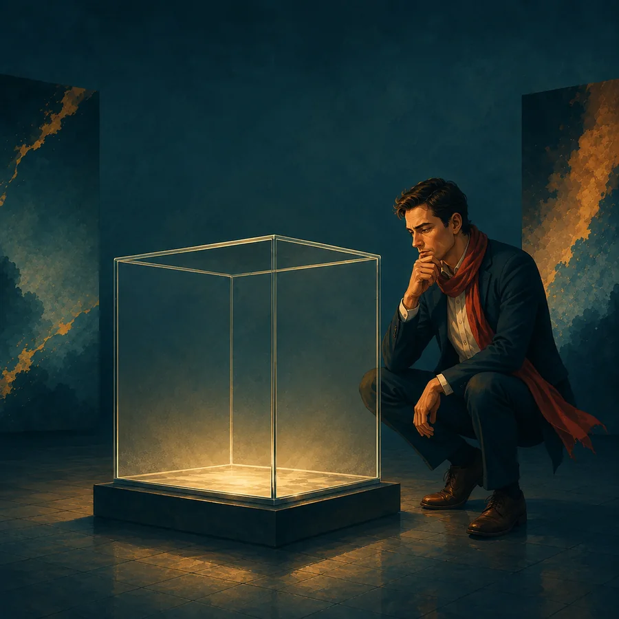
ANSWERthinking outside the box
PATTERN8 7 3 3
CLUES
Position is the key.
THINK is not inside the outlined shape.
The phrase begins with THINKING.
WHERE IT CAME FROMThe modern phrase grew from the nine-dot puzzle, whose solution requires drawing beyond an imagined square. It became popular in business and creativity writing during the 1960s and 1970s.
Puzzle 5Easy
Find the phrase in the layout
ANSWERreading between the lines
PATTERN7 7 3 5
CLUES
Look above and below the main word.
READING sits in a particular place relative to two lines.
The linking word is BETWEEN.
WHERE IT CAME FROMThe expression became common in the 1800s. It treats written lines as carrying a second, unstated message in the spaces between them—something the reader must infer rather than read directly.
Puzzle 6Easy
What has happened here?
ANSWERbroken heart
PATTERN6 5
CLUES
Name the object and describe its condition.
The heart is no longer whole.
The first word begins with B.
WHERE IT CAME FROMThe heart has represented emotion since ancient times, so a “broken heart” became a natural image for grief and lost love. Versions of the metaphor appear in very old religious and literary writing.
Puzzle 7Medium
Find the familiar saying
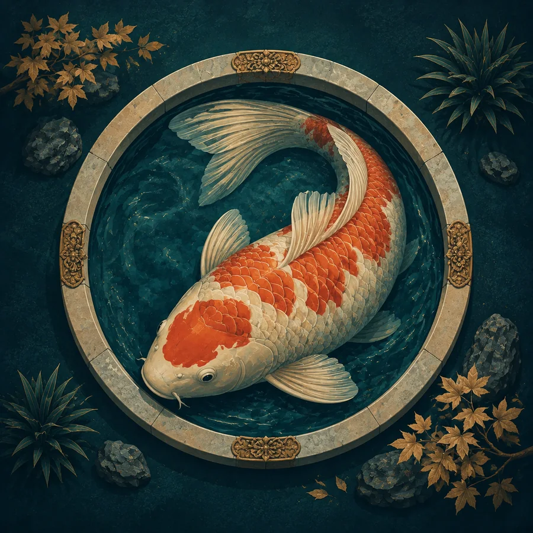
ANSWERbig fish in a small pond
PATTERN3 4 2 1 5 4
CLUES
Compare the sizes of the two things.
One fish seems oversized for its surroundings.
The last word is POND.
WHERE IT CAME FROMThis is an American expression. One early printed example appeared in the Galveston Daily News in 1881, describing people who seemed powerful only within their limited local surroundings.
Puzzle 8Easy
Read the unusual clue
ANSWERbackwards glance
PATTERN9 6
CLUES
Try reading from the other direction.
The displayed word is GLANCE reversed.
Describe the direction before naming the word.
WHERE IT CAME FROMThis is mainly a literal combination rather than an old idiom with one traceable origin. A backwards glance simply means turning to look at what has been left behind.
Puzzle 9Medium
Find the greeting
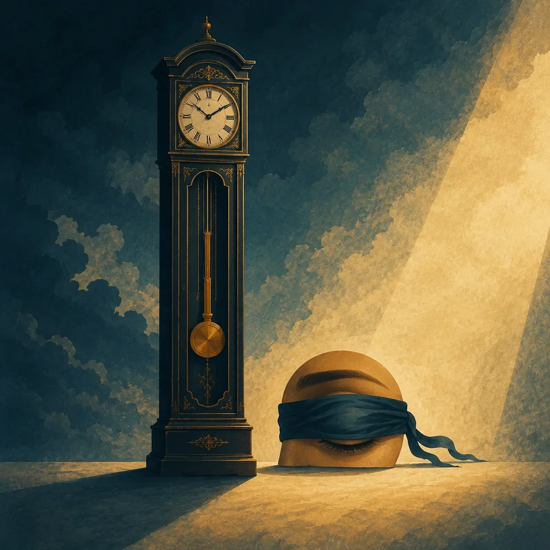
ANSWERlong time no see
PATTERN4 4 2 3
CLUES
Both size and sound matter.
TIME is stretched, and the letter C is missing.
“No C” sounds like the last two words.
WHERE IT CAME FROMIts precise origin is disputed. It entered widely used English through forms of pidgin speech in the 1800s and may reflect either Chinese Pidgin English or representations of Native American speech.
Puzzle 10Easy
Sound the alarm
ANSWERman overboard
PATTERN3 9
CLUES
Describe the position of the person.
The man is above a wooden board.
The answer is also a nautical warning.
WHERE IT CAME FROM“Man overboard” developed as a direct warning at sea: someone had fallen from a vessel into the water. Its short, urgent wording lets a crew react immediately.
Puzzle 11Easy
Find the rare expression
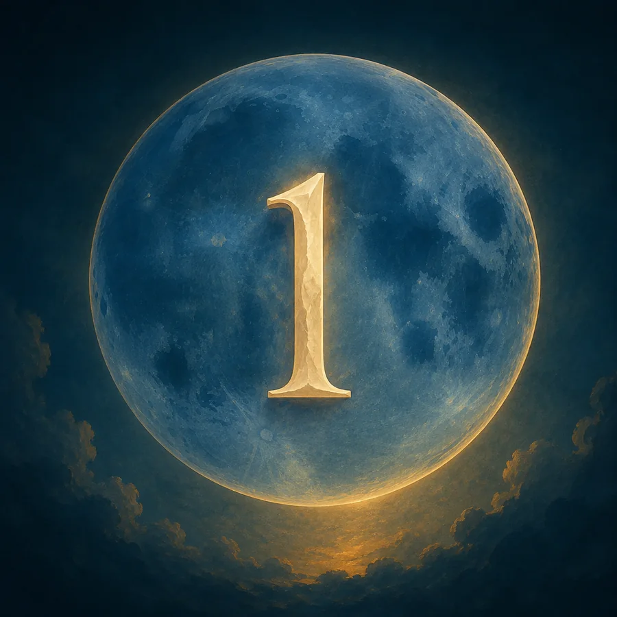
ANSWERonce in a blue moon
PATTERN4 2 1 4 4
CLUES
Colour and position both matter.
ONCE appears inside a blue moon.
The phrase describes something very rare.
WHERE IT CAME FROM“Once in a blue moon” has meant “very rarely” since the 1800s. The saying is older than today’s popular definition of a blue moon as an extra full moon, so that calendar explanation is not its original source.
Puzzle 12Easy
Where do these roads meet?
ANSWERcrossroads
PATTERN10
CLUES
Watch how the two words relate.
The two ROADs cross each other.
The answer is commonly written as one word.
WHERE IT CAME FROMCrossroads have been important meeting places since ancient road networks. Because a traveller must choose a path there, the word naturally developed its figurative meaning: a moment of major choice or change.
Puzzle 13Easy
What awkward phrase is this?
ANSWERtwo left feet
PATTERN3 4 4
CLUES
Count the body parts and notice their direction.
Both feet point left.
People say this when someone cannot dance well.
WHERE IT CAME FROMThe phrase became popular in the early 1900s as a humorous description of physical awkwardness, especially poor dancing. Imagining both feet as left feet neatly explains the lack of coordination.
Puzzle 14Easy
Describe this conversation
ANSWERsmall talk
PATTERN5 4
CLUES
The size of the word is the clue.
TALK is unusually tiny.
The phrase means casual conversation.
WHERE IT CAME FROM“Small talk” has been used since the 1700s for polite conversation about unimportant subjects. “Small” refers to the light weight of the topics, rather than the length of the conversation.
Puzzle 15Easy
Follow the instruction
ANSWERstand in line
PATTERN5 2 4
CLUES
Look at where STAND has been placed.
The word is contained within a line.
The last word is LINE.
WHERE IT CAME FROMThis is a literal instruction that became an everyday expression as organised queues became common. American English usually says “stand in line,” while British and Australian English more often uses “queue.”
Puzzle 16Easy
Which way is the word facing?
ANSWERupside down
PATTERN6 4
CLUES
Orientation carries the meaning.
DOWN has been rotated halfway around.
The first word begins with UP.
WHERE IT CAME FROMThe expression developed from several Middle English forms meaning “top turned downward.” Its spelling and word order shifted over centuries before settling into the modern “upside down.”
Puzzle 17Medium
Find the hidden location
ANSWERmiddle of nowhere
PATTERN6 2 7
CLUES
Pay attention to the empty space.
There is a middle inside NOWHERE.
The phrase describes a remote place.
WHERE IT CAME FROM“Nowhere” has described an unknown or remote place for centuries. Adding “the middle of” exaggerates the isolation, suggesting a place so distant that there is nothing recognisable in any direction.
Puzzle 18Medium
Read the order carefully
ANSWERlife after death
PATTERN4 5 5
CLUES
The sequence matters more than the position.
LIFE appears after DEATH.
Use the linking word AFTER.
WHERE IT CAME FROMIdeas about existence after death are ancient and appear in religions and philosophies around the world. The English expression is therefore descriptive, not a saying with one identifiable author.
Puzzle 19Easy
ANSWERtop secret
PATTERN3 6
CLUES
Position tells you the missing word.
SECRET is at the very top.
The phrase describes highly classified information.
WHERE IT CAME FROM“Top secret” grew from official security classifications used by governments and armed forces in the early 1900s. “Top” marked the highest level of secrecy, above ordinary confidential material.
Puzzle 20Easy
Name the nursery-rhyme trio
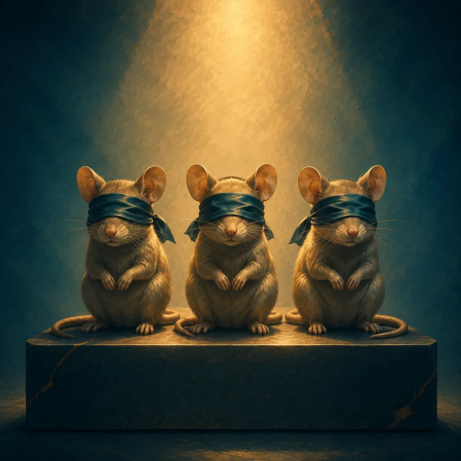
ANSWERthree blind mice
PATTERN5 5 4
CLUES
Count the animals.
Imagine that each mouse cannot see.
It is the title of a nursery rhyme.
WHERE IT CAME FROM“Three Blind Mice” is an old English nursery rhyme. A version of its words and music was printed in Thomas Ravenscroft’s Deuteromelia in 1609, though later verses changed over time.
Puzzle 21Easy
Find the forgiving expression
ANSWERwater under the bridge
PATTERN5 5 3 6
CLUES
Name both things and compare their positions.
The bottles of water are below the bridge.
The phrase means a past problem no longer matters.
WHERE IT CAME FROMThe image comes from flowing water that has already passed beneath a bridge and cannot be brought back. Related versions existed earlier, but the familiar English wording became common in the 1900s.
Puzzle 22Medium
What is happening to sleep?
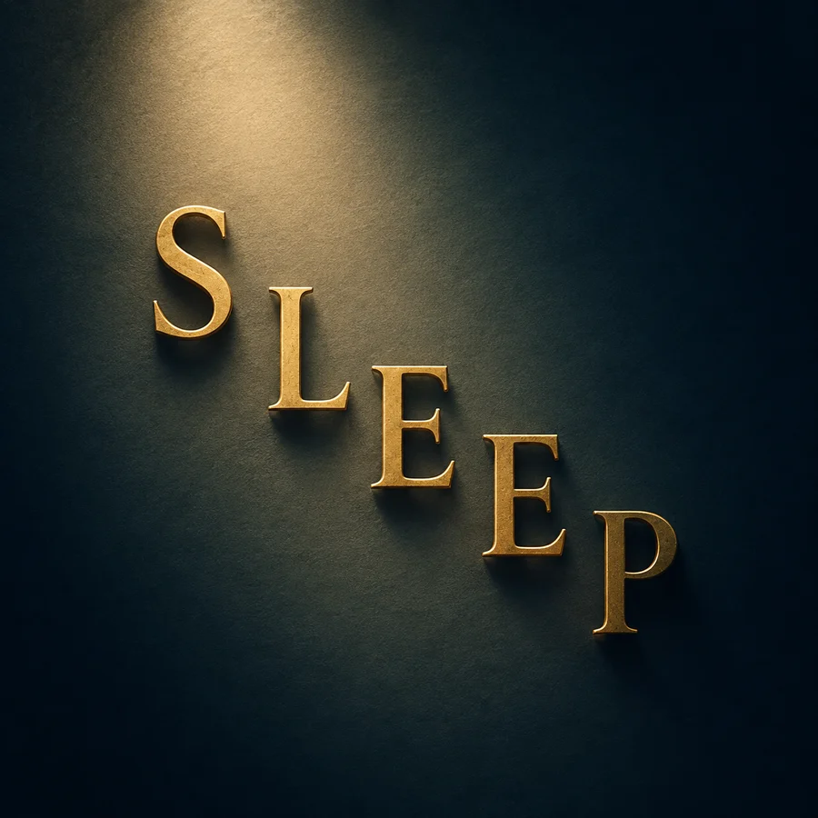
ANSWERfalling asleep
PATTERN7 6
CLUES
Follow the direction of the letters.
SLEEP appears to be dropping.
The action word ends in -ING.
WHERE IT CAME FROMEnglish has long described the transition into sleep as “falling,” much like falling into silence or darkness. It is an old everyday metaphor rather than a phrase coined by one known person.
Puzzle 23Easy
What is this star doing?
ANSWERrising star
PATTERN6 4
CLUES
Look at the direction of the trail.
The star grows larger and brighter as it moves upward.
The phrase can describe a promising new talent.
WHERE IT CAME FROMStars have long symbolised fame and brilliance. Calling a promising newcomer a “rising star” extends the image: the person’s reputation appears to be climbing higher and becoming brighter.
Puzzle 24Medium
This thought is not quite finished
ANSWERhalf baked idea
PATTERN4 5 4
CLUES
The shape represents a thought.
Only one side of the lightbulb pastry has been baked.
The phrase describes a poorly developed plan.
WHERE IT CAME FROM“Half-baked” first described food taken from an oven before it was ready. By the 1600s it was being applied figuratively to plans and ideas that had not been thought through or fully developed.
Puzzle 25Medium
Finish the whole pack
WORK
ANSWERall in a days work
PATTERN3 2 1 4 4
CLUES
Look at how much of the schedule is occupied.
The same task fills the day from nine until five.
The phrase describes something routine or expected.
WHERE IT CAME FROMThe expression grew from the ordinary duties expected during a working day. By the late 1800s it was being used to dismiss even an unusual task as routine: simply part of the day’s work.
Puzzle 26Easy
Find the hidden phrase
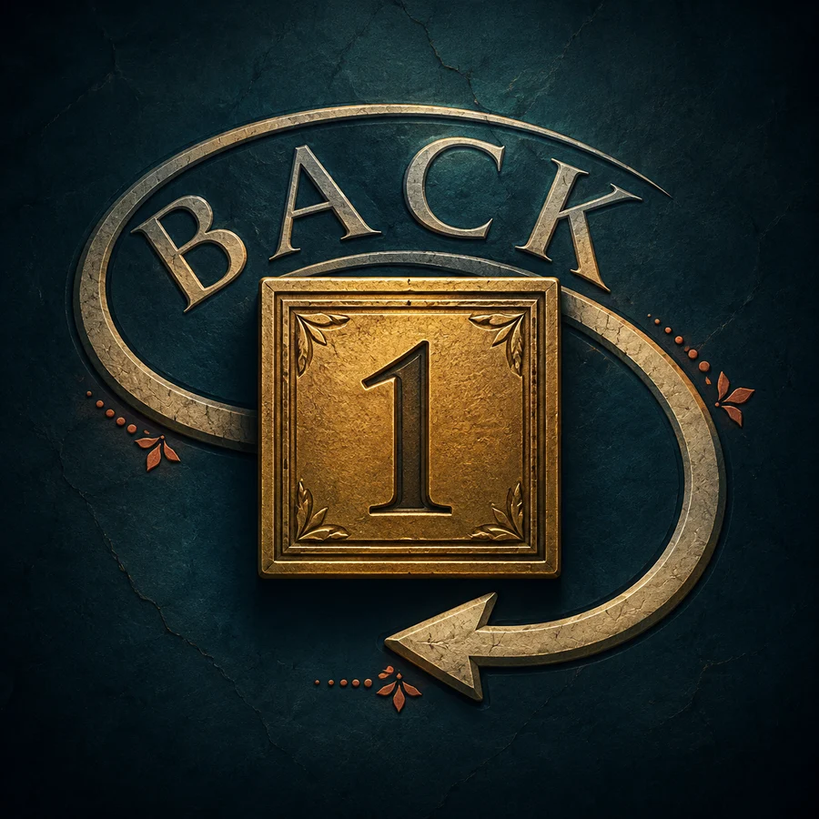
ANSWERback to square one
PATTERN4 2 6 3
CLUES
Follow the direction of the arrow.
BACK is returning to a numbered shape.
The destination is SQUARE ONE.
WHERE IT CAME FROMIts exact source is still uncertain. The phrase appeared in print in the 1950s and probably draws on numbered games; popular stories linking it specifically to BBC football commentary are not supported by solid evidence.
Puzzle 27Easy
Find the hidden phrase
ANSWERa step in the right direction
PATTERN1 4 2 3 5 9
CLUES
Focus on the one movement being made.
The path has a very particular direction.
The phrase describes a small move toward improvement.
WHERE IT CAME FROMThis is a straightforward metaphor based on travelling toward a destination. A useful action may not finish the journey, but it can still be one step along the correct path.
Puzzle 28Easy
Find the hidden phrase
ANSWERtwo peas in a pod
PATTERN3 4 2 1 3
CLUES
Count the small objects.
Both objects are enclosed together.
They are PEAS sharing a POD.
WHERE IT CAME FROMPeas from the same pod are nearly identical and sit closely together. English writers were comparing very similar people or things to peas in a pod by the 1500s.
Puzzle 29Easy
Find the hidden phrase
ANSWERunder the weather
PATTERN5 3 7
CLUES
Position supplies the connecting word.
UNDER is below WEATHER.
Read the lower word first.
WHERE IT CAME FROMThe phrase was recorded in the 1800s and originally covered several kinds of discomfort or low spirits. A seafaring explanation is often repeated, but the evidence is not strong enough to make its exact origin certain.
Puzzle 30Easy
Find the hidden phrase
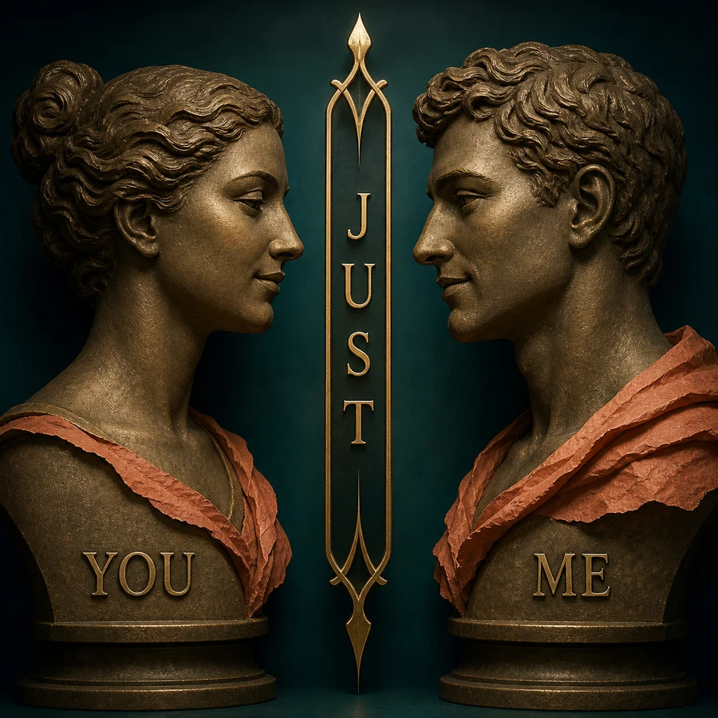
ANSWERjust between you and me
PATTERN4 7 3 3 2
CLUES
Look at the middle word.
JUST separates two people.
It is between YOU and ME.
WHERE IT CAME FROM“Between you and me” has long introduced information meant to remain private. Adding “just” strengthens the idea that the confidence should go no farther than the two people speaking.
Puzzle 31Easy
Find the hidden phrase
ANSWERsplit personality
PATTERN5 11
CLUES
The word has been divided.
PERSONALITY appears in two pieces.
Another word for divided is SPLIT.
WHERE IT CAME FROM“Split personality” came from early psychological language in the late 1800s and early 1900s. Popular culture later broadened it into a loose description of someone who seems to have sharply contrasting sides.
Puzzle 32Easy
Find the hidden phrase
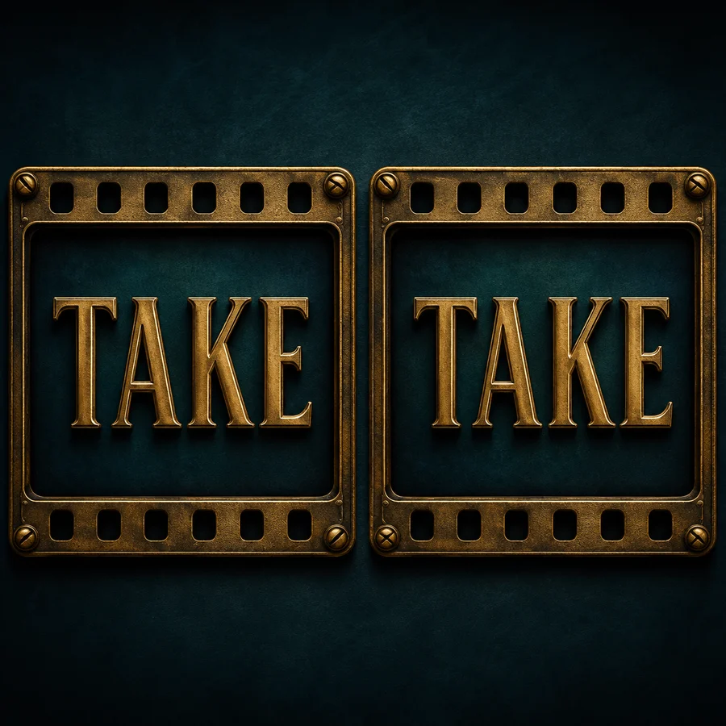
ANSWERdouble take
PATTERN6 4
CLUES
Count what you see.
The same word appears twice.
Two of something can be DOUBLE.
WHERE IT CAME FROMA “double take” comes from stage and screen comedy. An actor first looks, then quickly looks again after realising that something surprising has just been seen.
Puzzle 33Easy
Find the hidden phrase
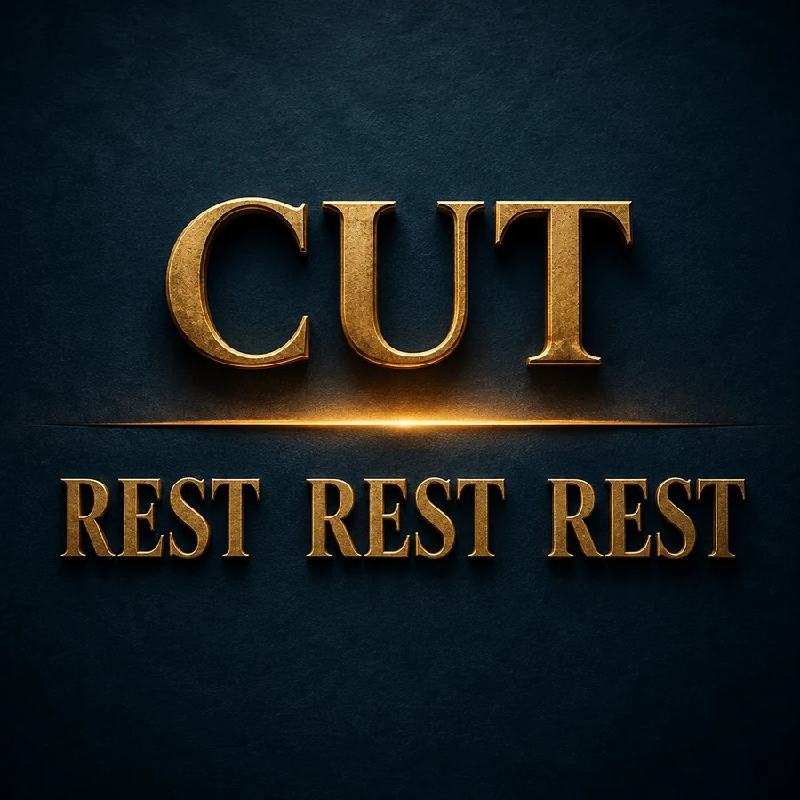
ANSWERa cut above the rest
PATTERN1 3 5 3 4
CLUES
Compare the vertical positions.
CUT is higher than every REST.
The phrase begins A CUT ABOVE.
WHERE IT CAME FROMA “cut” once commonly meant a person’s style, shape or quality. By the 1800s, being “a cut above” someone meant belonging to a noticeably better class or standard.
Puzzle 34Easy
Find the hidden phrase
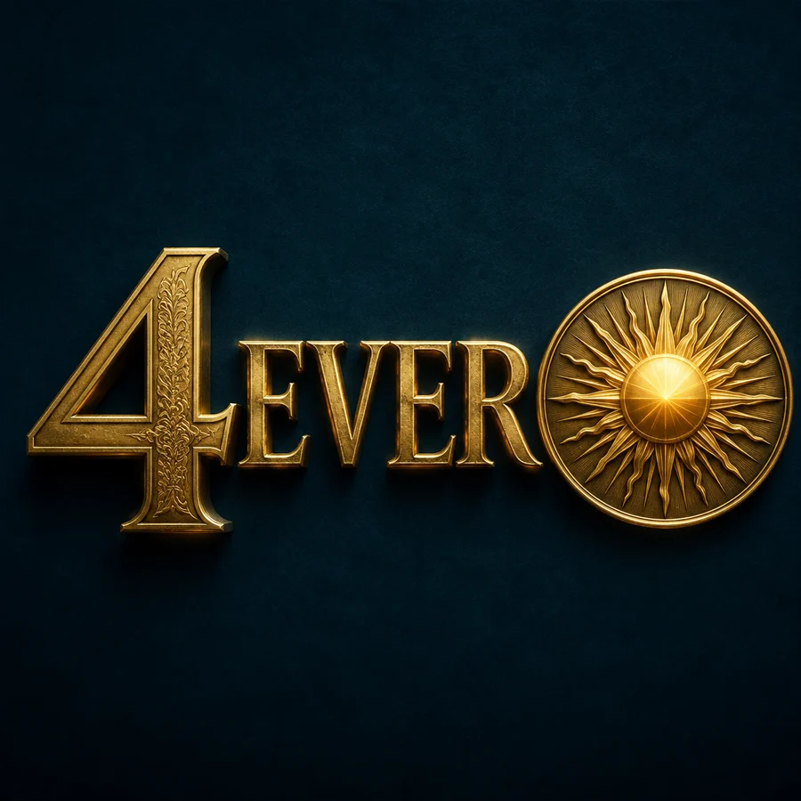
ANSWERforever and a day
PATTERN7 3 1 3
CLUES
Say the number aloud.
4 and EVER combine by sound.
Then add one DAY.
WHERE IT CAME FROMThe phrase adds one impossible extra day to eternity for emphasis. Shakespeare used “for ever and a day” in The Taming of the Shrew, helping preserve a form already understood in his time.
Puzzle 35Easy
Find the hidden phrase
ANSWERfirst aid
PATTERN5 3
CLUES
Notice where AID has finished.
It occupies the winning position.
The highest podium is also called first place.
WHERE IT CAME FROM“First aid” became established in the late 1800s as organised training taught people to give immediate help before a doctor arrived. Early ambulance and voluntary medical organisations helped spread the term.
Puzzle 36Easy
Find the hidden phrase
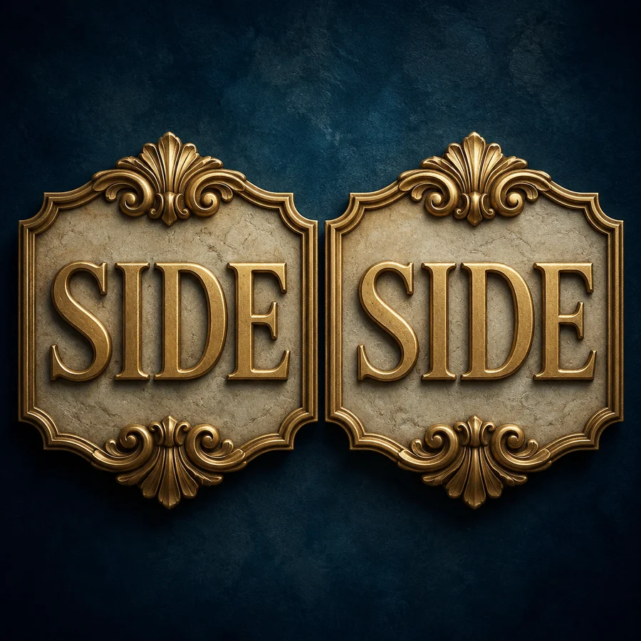
ANSWERside by side
PATTERN4 2 4
CLUES
Notice how the words are arranged.
Neither word is above the other.
They are next to each other.
WHERE IT CAME FROMThis is an old, literal way of saying that two people or things are next to one another. Its repeated structure gives equal weight to both sides, which also made it useful figuratively for close cooperation.
Puzzle 37Medium
Find the hidden phrase
ANSWERa level playing field
PATTERN1 5 7 5
CLUES
Identify both the place and the tool.
The tool checks whether a surface is perfectly horizontal.
It lies across a place where a game is played.
WHERE IT CAME FROMThe expression borrows from sport: a level field gives neither side an uphill advantage. Its modern figurative use for fair conditions became especially common in business and politics in the late 1900s.
Puzzle 38Easy
Find the hidden phrase
ANSWERman in the moon
PATTERN3 2 3 4
CLUES
Look closely at the moon’s features.
Its craters form something familiar.
Whose face seems to appear there?
WHERE IT CAME FROMPeople have imagined a human face or figure in the Moon’s light and dark patches since ancient times. Different cultures tell different stories about the figure, so there is no single “man in the moon” legend.
Puzzle 39Medium
Find the hidden phrase
LIFE
ANSWERlife in the fast lane
PATTERN4 2 3 4 4
CLUES
Compare the traffic in each lane.
One lane is moving dramatically faster.
Notice what has been placed in that lane.
WHERE IT CAME FROMA fast lane is literally the part of a multi-lane road used by quicker traffic. As motorways spread in the 1900s, it became a metaphor for an exciting, competitive or high-pressure lifestyle.
Puzzle 40Easy
Find the hidden phrase
ANSWERthe inside story
PATTERN3 6 5
CLUES
The boundary is meaningful.
STORY appears inside a book.
The describing word is INSIDE.
WHERE IT CAME FROMThe phrase grew from journalism and publishing: an “inside story” promised facts known by people close to an event. “Inside” suggested privileged information unavailable to the general public.
Puzzle 41Easy
Find the hidden phrase
ANSWERcornerstone
PATTERN11
CLUES
Look at the building’s foundation.
One block is larger and more prominent than the rest.
Its exact position supplies the first part of the answer.
WHERE IT CAME FROMA cornerstone was traditionally the first major stone set in a masonry foundation, guiding the position of the rest. That essential structural role produced its figurative meaning: a basic and indispensable part.
Puzzle 42Easy
Find the hidden phrase
ANSWERon top of the world
PATTERN2 3 2 3 5
CLUES
Compare the words with the picture.
ON TOP sits above a globe.
The globe represents the WORLD.
WHERE IT CAME FROMHeight has long represented power, success and happiness. Being “on top of the world” exaggerates that image to its greatest possible height, describing someone who feels completely triumphant or joyful.
Puzzle 43Easy
Find the hidden phrase
ANSWERdown to earth
PATTERN4 2 5
CLUES
Follow the arrow.
DOWN travels toward the planet.
The planet is EARTH.
WHERE IT CAME FROMEarth has long symbolised what is solid, ordinary and real. “Down to earth” therefore came to describe someone practical and unpretentious rather than lofty, dreamy or removed from everyday life.
Puzzle 44Easy
Find the hidden phrase
→TIME
ANSWERright on time
PATTERN5 2 4
CLUES
The symbol shows a direction.
The right-pointing street sign is directly on TIME.
Use the small connecting word ON.
WHERE IT CAME FROMThis is a direct timekeeping expression rather than an idiom with a single known inventor. To arrive “right on time” is to arrive at exactly the appointed moment.
Puzzle 45Easy
Find the hidden phrase
AHEADTIME
ANSWERahead of time
PATTERN5 2 4
CLUES
Reading order matters.
AHEAD comes before TIME.
The missing linking word is OF.
WHERE IT CAME FROMThis phrase developed naturally from schedules and deadlines. Someone or something “ahead of time” reaches a stage earlier than the time expected or arranged.
Puzzle 46Easy
Find the hidden phrase
ANSWERbroken record
PATTERN6 6
CLUES
The displayed word is damaged.
RECORD has been cracked apart.
Describe its condition first.
WHERE IT CAME FROMThe expression comes from early phonograph records. When a damaged groove made the needle jump back and replay the same sound, the record literally repeated itself again and again.
Puzzle 47Easy
Find the hidden phrase
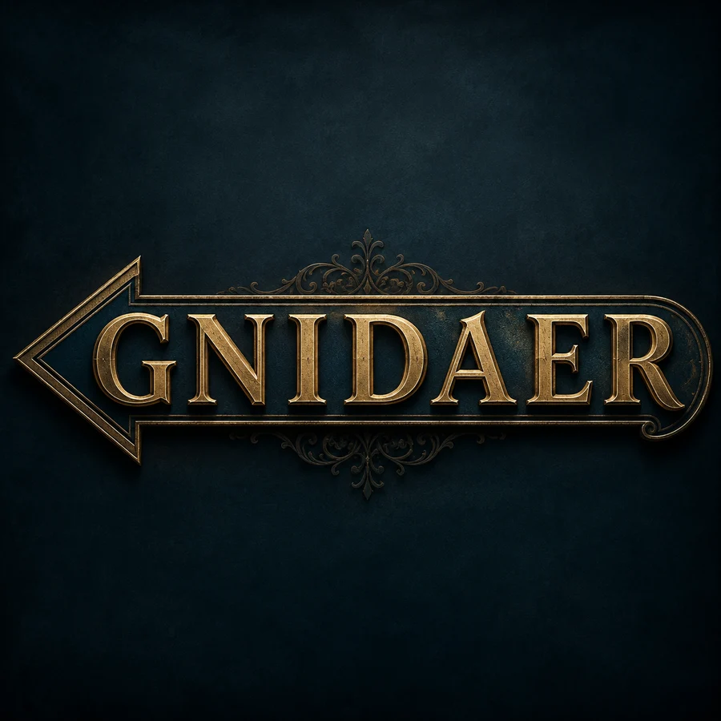
ANSWERreading backwards
PATTERN7 9
CLUES
Try changing your reading direction.
The letters spell READING in reverse.
The action is happening BACKWARDS.
WHERE IT CAME FROMThis is a literal description rather than a historic idiom. Reading backwards can mean moving through letters or words in the reverse of their usual direction.
Puzzle 48Medium
Find the hidden phrase
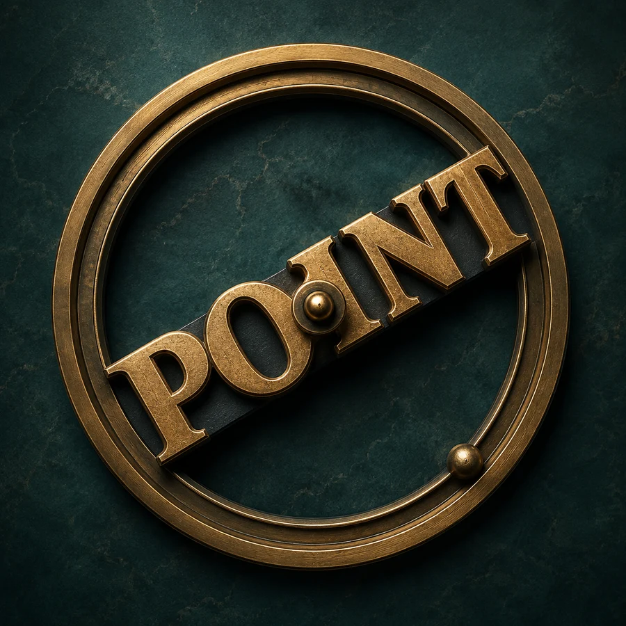
ANSWERturning point
PATTERN7 5
CLUES
The arrow shows movement.
POINT is rotating around a centre.
Another word for rotating is TURNING.
WHERE IT CAME FROMA turning point was originally a physical place or moment where movement changed direction. By the 1800s it was commonly being used for an event that changes the course of a life, argument or history.
Puzzle 49Medium
Find the hidden phrase
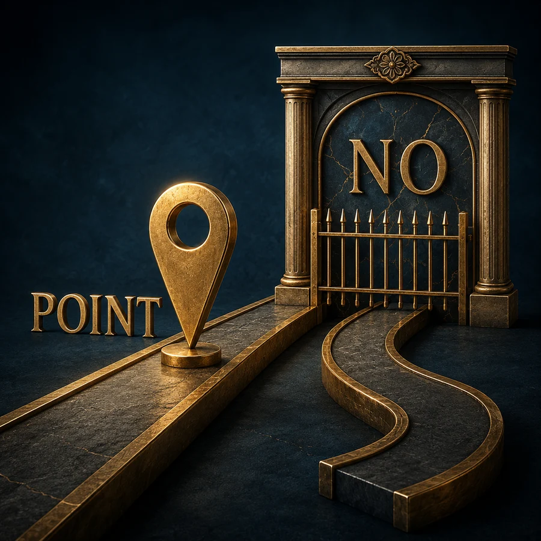
ANSWERpoint of no return
PATTERN5 2 2 6
CLUES
One possible direction is blocked.
There is NO way to RETURN.
The phrase begins POINT OF.
WHERE IT CAME FROMThe phrase became strongly associated with 20th-century aviation. Once an aircraft had used too much fuel to return safely, it had passed its point of no return; the idea then spread to everyday decisions.
Puzzle 50Easy
Find the hidden phrase
ANSWERmissing link
PATTERN7 4
CLUES
Look for what should connect the two sides.
One part of the chain is absent.
The missing object is a LINK.
WHERE IT CAME FROM“Missing link” became famous during 19th-century debates about evolution. It referred to a hypothetical fossil form connecting known groups, then broadened to mean any absent piece needed to complete an explanation.
Puzzle 51Medium
Find the hidden phrase
ANSWERchain reaction
PATTERN5 8
CLUES
Follow the glow from one side to the other.
One event triggers the next connected piece.
Name both the object and the process.
WHERE IT CAME FROMA chain reaction is a scientific process in which one event triggers the next, especially in chemistry and nuclear physics. During the 1900s it also became a general metaphor for a spreading sequence of consequences.
Puzzle 52Easy
Find the hidden phrase
ANSWERhigh five
PATTERN4 4
CLUES
Position describes the number.
The number is unusually high.
Say the position before FIVE.
WHERE IT CAME FROMThe high five became widely visible in American sport during the late 1970s. Several people have been credited with inventing it, so its precise first use remains disputed.
Puzzle 53Easy
Find the hidden phrase
ANSWERlow profile
PATTERN3 7
CLUES
Position describes the word.
PROFILE is near the bottom.
The first word is the opposite of HIGH.
WHERE IT CAME FROM“Profile” can mean the outline seen from the side. A low profile is less visible, and during the 1900s the phrase became a common way to describe avoiding attention or publicity.
Puzzle 54Easy
Find the hidden phrase
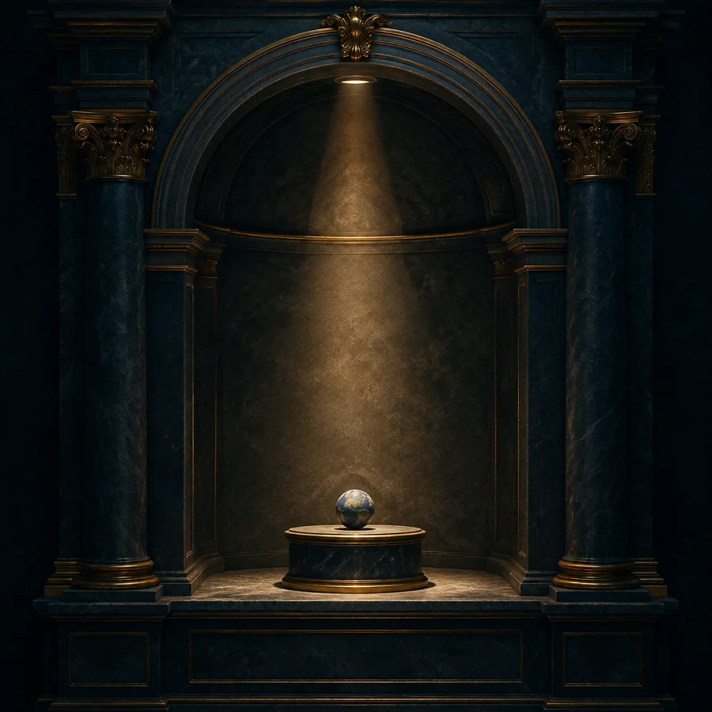
ANSWERsmall world
PATTERN5 5
CLUES
Compare the word with the available space.
WORLD is much smaller than expected.
Describe its size first.
WHERE IT CAME FROMPeople say “it’s a small world” after discovering an unexpected connection across distance. The expression predates Disney’s 1964 attraction and song, although they made the wording internationally famous.
Puzzle 55Easy
Find the hidden phrase
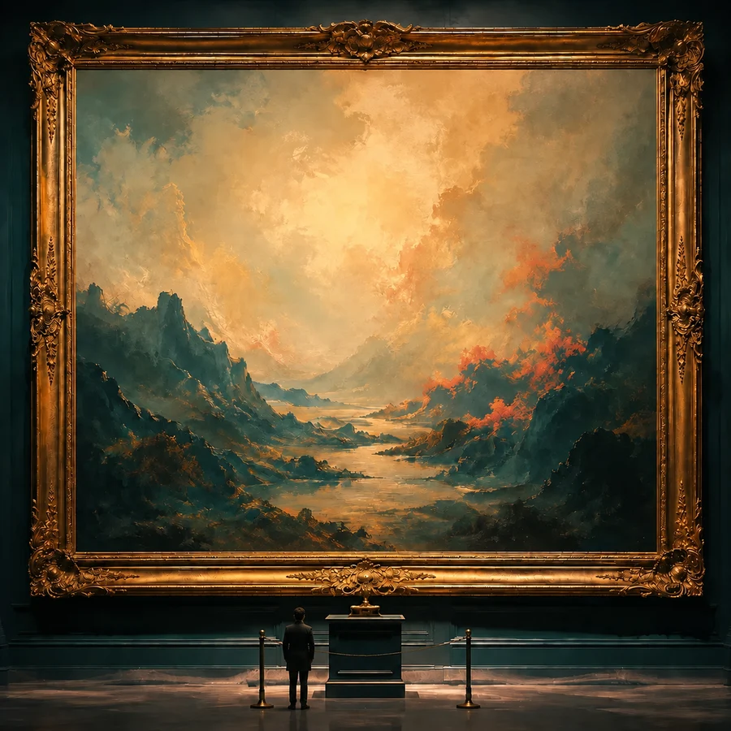
ANSWERthe big picture
PATTERN3 3 7
CLUES
Size is the key.
PICTURE fills most of the frame.
Describe the picture before naming it.
WHERE IT CAME FROMThe “big picture” is the complete view rather than one small detail. The figurative phrase became especially common in the 1900s, influenced by photography, cinema and other ways of framing a whole scene.
Puzzle 56Easy
Find the hidden phrase
ANSWERhalf time
PATTERN4 4
CLUES
Look at how much of the clock remains.
The face has been divided exactly down the middle.
A clock represents what concept?
WHERE IT CAME FROMThe term comes from timed games and performances divided into two halves. Half-time is the interval at the midpoint, when play pauses before the second half begins.
Puzzle 57Easy
Find the hidden phrase
VISIONVISION
ANSWERdouble vision
PATTERN6 6
CLUES
How many copies can you see?
VISION appears twice and slightly offset.
Two of the same thing can be DOUBLE.
WHERE IT CAME FROM“Double vision” is the everyday name for diplopia, a condition in which one object appears as two. It later became a playful metaphor for any duplicated or confusing view.
Puzzle 58Easy
Find the hidden phrase
ANSWEReye to eye
PATTERN3 2 3
CLUES
The two pictures face one another.
Both eyes are at the same level.
The linking word is TO.
WHERE IT CAME FROMThe wording is famously found in the King James Bible’s version of Isaiah 52:8: watchers “shall see eye to eye.” Its modern meaning shifted from seeing together to agreeing completely.
Puzzle 59Easy
Find the hidden phrase
ANSWERup in the air
PATTERN2 2 3 3
CLUES
Look at both the direction and the surroundings.
The arrow points upward while floating above the ground.
What is it surrounded by?
WHERE IT CAME FROMSomething “up in the air” is suspended and has not yet landed. That physical uncertainty produced the figurative meaning of a plan or decision that remains unsettled.
Puzzle 60Medium
Find the hidden phrase
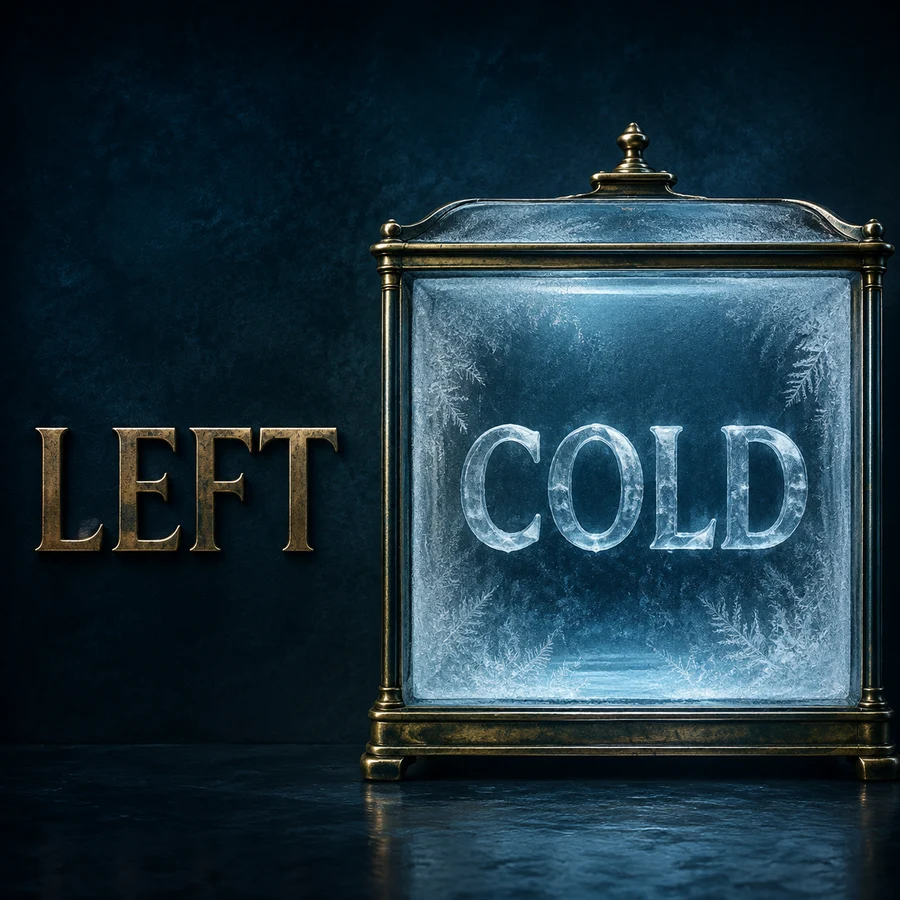
ANSWERleft out in the cold
PATTERN4 3 2 3 4
CLUES
Compare what is inside and outside.
LEFT has been excluded from COLD.
The phrase begins LEFT OUT.
WHERE IT CAME FROMCold represents discomfort and a lack of welcome. By the 1800s, leaving someone “out in the cold” meant excluding them from shelter, benefits or the warmth of a group.
Puzzle 61Medium
Find the hidden phrase
ANSWERstanding room only
PATTERN8 4 4
CLUES
Look at everyone in the room.
There is not a chair or free seat anywhere.
What is the only option left?
WHERE IT CAME FROMThe phrase comes from theatres and public venues. When every seat was taken but more customers could enter, signs advertised “standing room only.”
Puzzle 62Medium
Find the hidden phrase
ANSWERroom for one more
PATTERN4 3 3 4
CLUES
The lift is crowded, but inspect the floor carefully.
One person-sized place has deliberately been left open.
How many additional passengers could fit?
WHERE IT CAME FROMThis is a welcoming, literal expression rather than an old metaphor. It says that a space or group already has occupants but can still accommodate one additional person.
Puzzle 63Medium
Find the hidden phrase
6 FT
ANSWERsix feet under
PATTERN3 4 5
CLUES
The ground line separates two areas.
Use the measurement beside the buried object.
The object is exactly that far below the surface.
WHERE IT CAME FROM“Six feet under” refers to burial, but graves have not always followed one universal six-foot rule. The exact wording became a common euphemism for being dead during the 1800s.
Puzzle 64Medium
Find the hidden phrase
ANSWERmixed emotions
PATTERN5 8
CLUES
Identify what is inside the appliance.
Several very different feelings are being combined.
Describe what the blender is doing to them.
WHERE IT CAME FROMPeople have long described feelings as “mixed” when different emotions occur together. The phrase has no single known inventor; it is a straightforward extension of physically mixing separate ingredients.
Puzzle 65Easy
Find the hidden phrase
AIR
ANSWERwalking on air
PATTERN7 2 3
CLUES
Notice what is supporting the walker’s feet.
There is no road or floor beneath them.
Read the surface they are stepping across.
WHERE IT CAME FROMAir suggests lightness and freedom from weight. By the 1800s, “walking on air” was being used for feeling so delighted that an ordinary step seemed to float above the ground.
Puzzle 66Easy
Find the hidden phrase
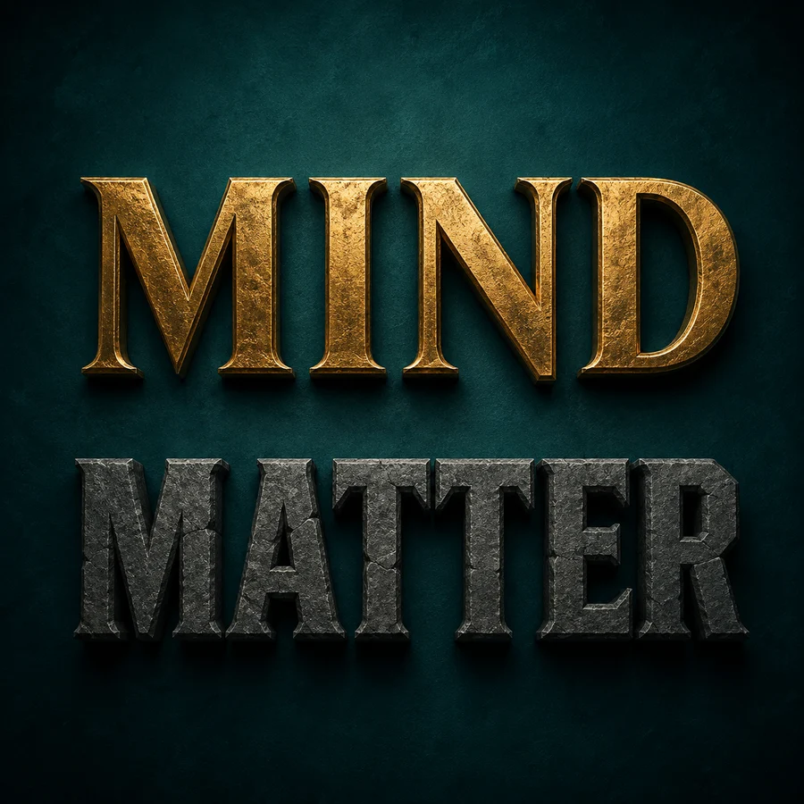
ANSWERmind over matter
PATTERN4 4 6
CLUES
Compare the two words vertically.
One concept sits above the other.
Read the upper word first.
WHERE IT CAME FROMThe saying expresses an old philosophical idea: willpower or thought can overcome physical difficulty. The compact wording “mind over matter” became popular in the 1800s.
Puzzle 67Easy
Find the hidden phrase
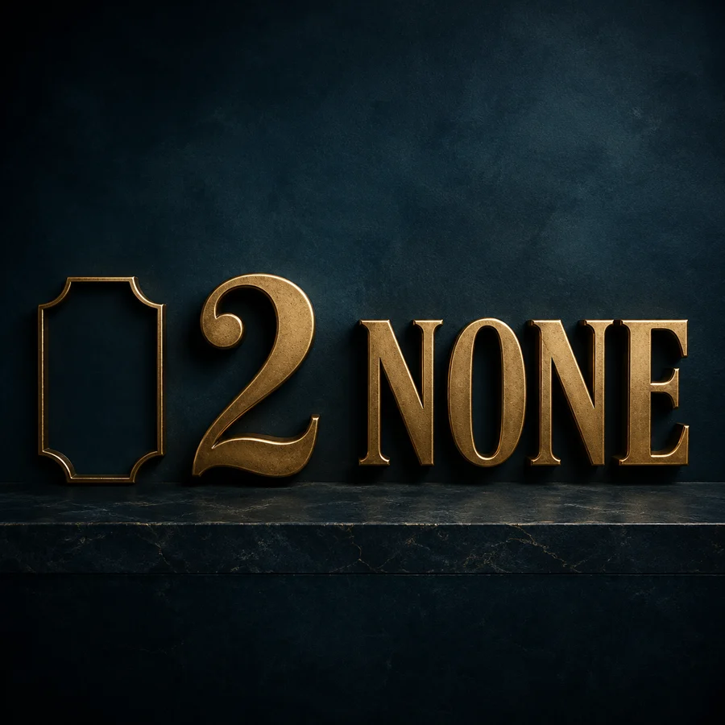
ANSWERsecond to none
PATTERN6 2 4
CLUES
Read the symbol as an ordinal number.
It sits directly next to the other word.
The phrase means unbeatable.
WHERE IT CAME FROMTo be “second to” someone is to rank below them. “Second to none” reverses that comparison and has been used for centuries to mean equal to the very best.
Puzzle 68Medium
Find the hidden phrase
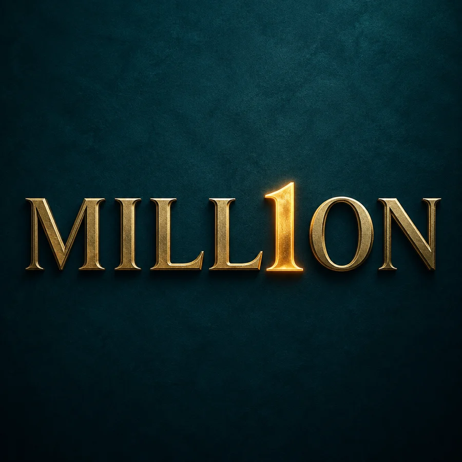
ANSWERone in a million
PATTERN3 2 1 7
CLUES
One character is different.
A number has replaced a letter inside the word.
Read the special number before its container.
WHERE IT CAME FROMOne person among a million is exceptionally rare. The expression grew as “a million” became an everyday symbol for an almost unimaginably large number; no single coinage is firmly established.
Puzzle 69Medium
Find the hidden phrase
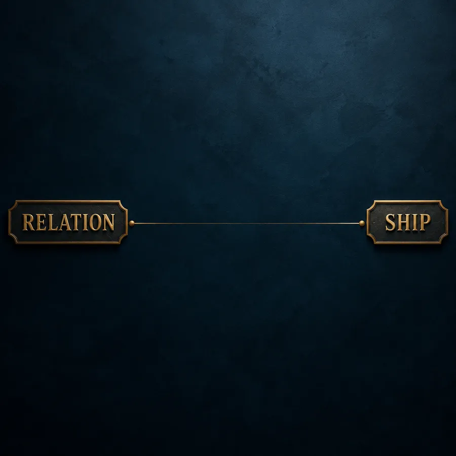
ANSWERlong distance relationship
PATTERN4 8 12
CLUES
The two parts normally belong together.
Notice the unusually large separation.
Join the pieces to name what is stretched.
WHERE IT CAME FROMThe phrase comes from relationships maintained across a large physical distance, especially as modern travel and communication made them more common. It is descriptive rather than an ancient idiom.
Puzzle 70Easy
Find the hidden phrase
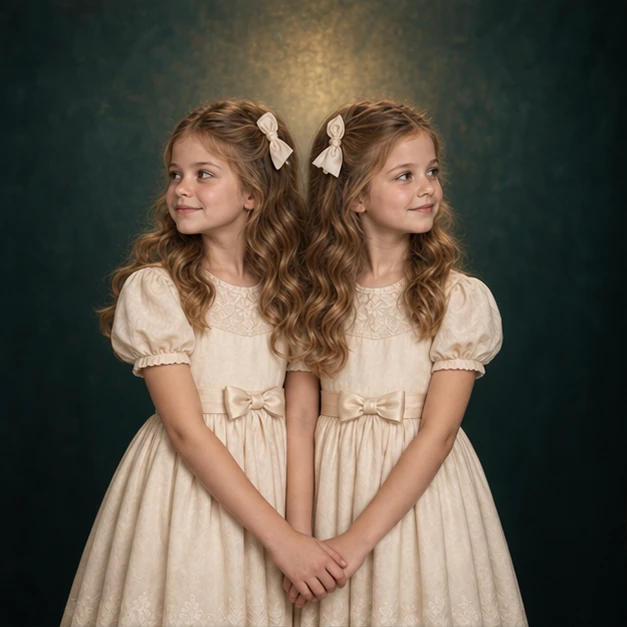
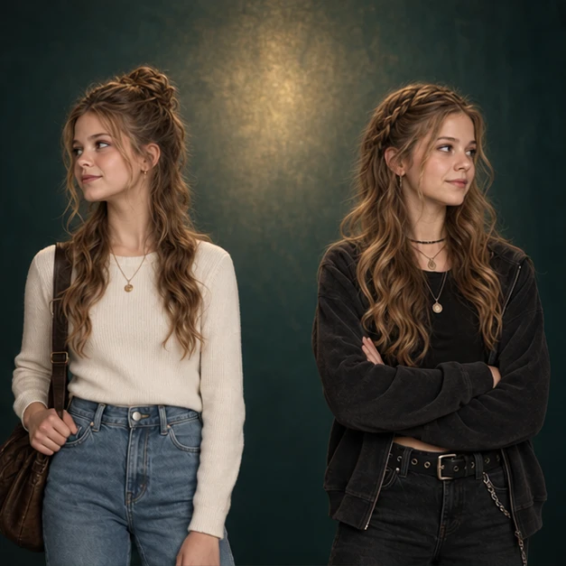
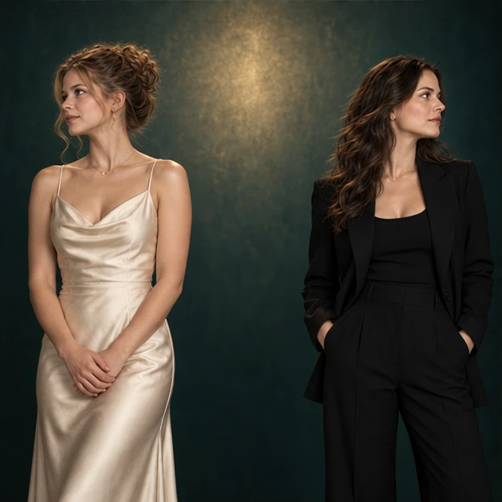
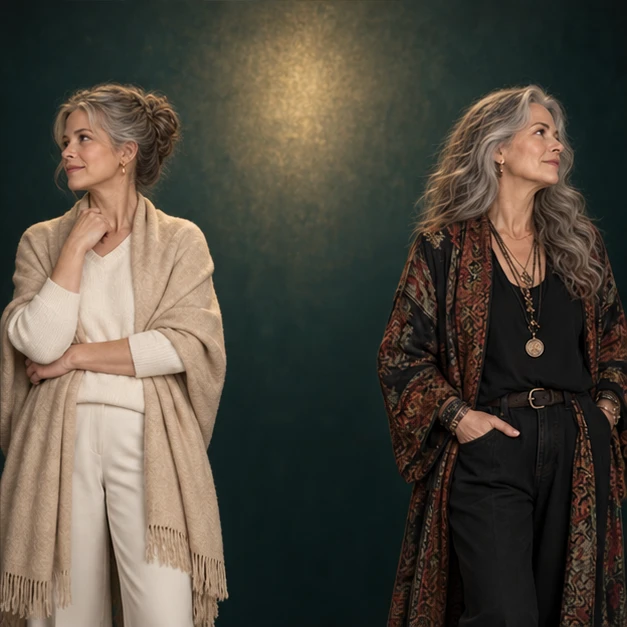
ANSWERgrowing apart
PATTERN7 5
CLUES
Compare the plants and their directions.
Both are becoming larger while moving away.
The phrase can describe people becoming less close.
WHERE IT CAME FROMThings that move in different directions become farther apart. English uses that simple physical image for relationships or opinions that gradually become less close.
Puzzle 71Easy
Find the hidden phrase
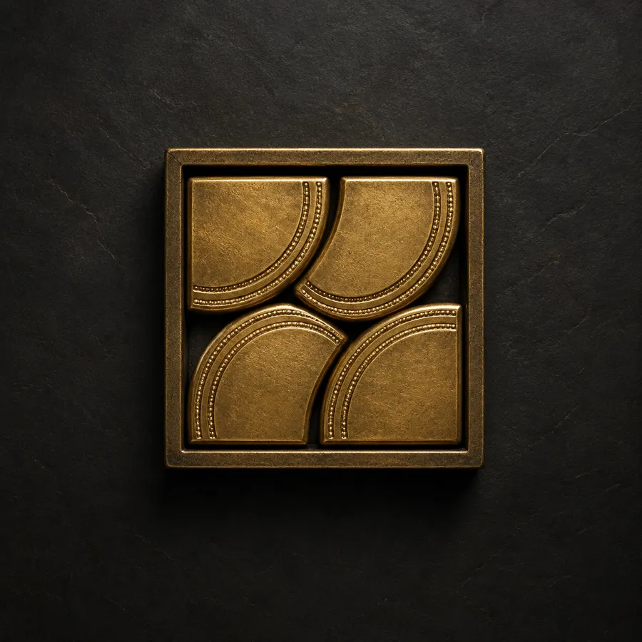
ANSWERclose quarters
PATTERN5 8
CLUES
Count the identical fractions.
They have almost no space between them.
Each symbol represents one quarter.
WHERE IT CAME FROM“Quarters” can mean living space or a position occupied by people. “Close quarters” described cramped nearness and also close-range fighting before gaining its broader modern use.
Puzzle 72Medium
Find the hidden phrase
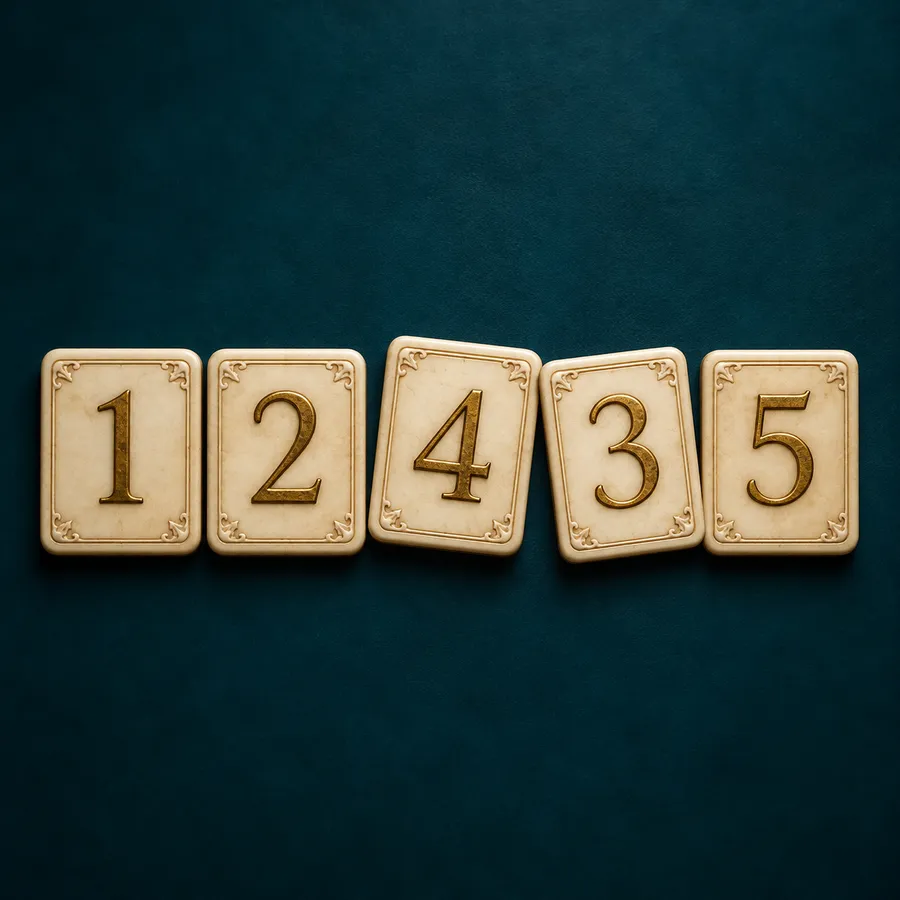
ANSWERout of order
PATTERN3 2 5
CLUES
Check the sequence carefully.
Two neighbouring numbers have swapped places.
Describe the condition of the sequence.
WHERE IT CAME FROM“Order” has long meant an arranged sequence as well as proper working condition. Something out of order is either in the wrong sequence or not functioning as it should.
Puzzle 73Medium
Find the hidden phrase
ANSWERjust around the corner
PATTERN4 6 3 6
CLUES
Follow the shape of the word.
Its path changes direction at a right angle.
The word itself supplies the beginning.
WHERE IT CAME FROMA corner can hide something that is physically close but not yet visible. “Just around the corner” therefore became a natural metaphor for an event expected very soon.
Puzzle 74Easy
Find the hidden phrase
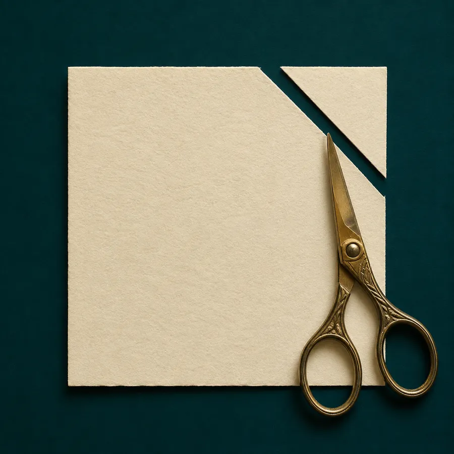
ANSWERcutting corners
PATTERN7 7
CLUES
Watch what the tool is removing.
It is not cutting through the centre.
The target has four of these.
WHERE IT CAME FROMCutting across a corner shortens a physical route. The phrase became a warning that saving time, effort or money this way may also skip an important part of doing the job properly.
Puzzle 75Easy
Find the hidden phrase
ANSWERbend over backwards
PATTERN4 4 9
CLUES
Describe the unusual body position.
The person bends in the less natural direction.
The phrase means making an exceptional effort.
WHERE IT CAME FROMThe image is deliberately extreme: bending backwards is difficult and unnatural. By the early 1900s it had become a way to describe making an exceptional effort to help or accommodate someone.
Puzzle 76Easy
Find the hidden phrase
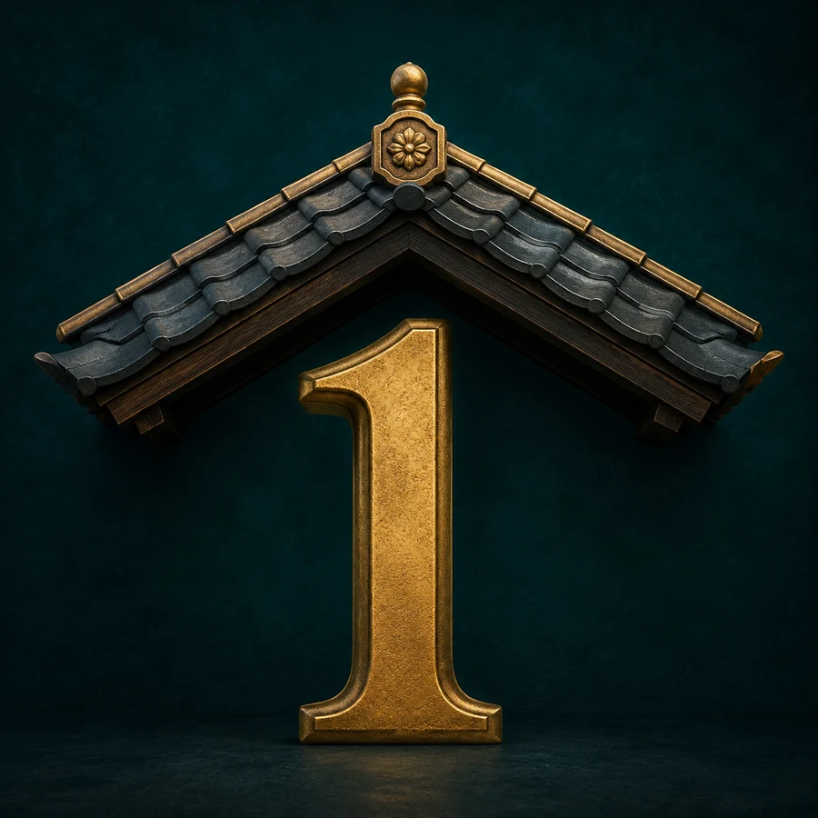
ANSWERunder one roof
PATTERN5 3 4
CLUES
There are only two elements.
Read the large number, then identify the structure beneath it.
The answer is a familiar phrase about sharing a home.
WHERE IT CAME FROMA roof represents the home or building it covers. Saying people are “under one roof” simply gathers everyone beneath the same shelter, then extends that image to living or working together.
Puzzle 77Easy
Find the hidden phrase
ANSWERbehind closed doors
PATTERN6 6 5
CLUES
Something is happening privately.
The conversation is hidden by an entrance.
Describe where it takes place.
WHERE IT CAME FROMImportant discussions have often been held with doors closed to keep outsiders from hearing. The literal practice produced the modern meaning: privately and away from public observation.
Puzzle 78Easy
Find the hidden phrase
ANSWERopen secret
PATTERN4 6
CLUES
The curtains have been pulled completely apart.
Something confidential is being publicly displayed in the spotlight.
Describe the contradiction between the reveal and the dossier.
WHERE IT CAME FROM“Open secret” is an intentional contradiction: the information is officially secret but widely known. Versions of the paradox have appeared in European languages for centuries, with English use established by the 1800s.
Puzzle 79Medium
Find the hidden phrase
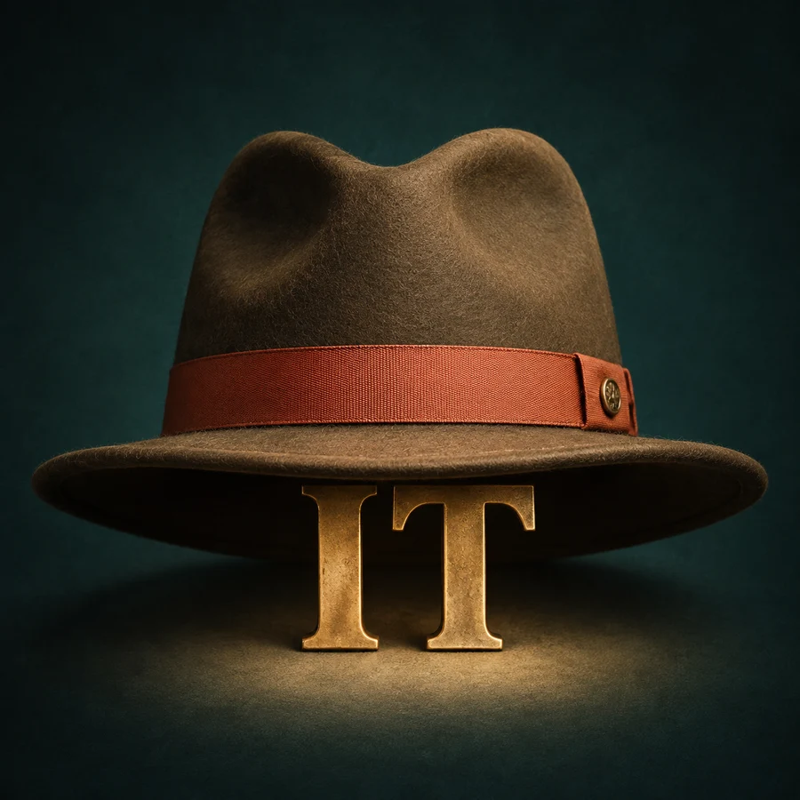
ANSWERkeep it under your hat
PATTERN4 2 5 4 3
CLUES
The small word is being concealed.
Identify the object covering it.
This phrase means not telling anyone.
WHERE IT CAME FROMA hat is an easy imaginary hiding place for information. The expression has been used since the 1800s to tell someone to keep knowledge concealed and not pass it on.
Puzzle 80Medium
Find the hidden phrase
ANSWERelephant in the room
PATTERN8 2 3 4
CLUES
Notice the impossible house guest.
It fills nearly the entire living space.
The phrase describes an obvious issue people avoid.
WHERE IT CAME FROMThe modern expression is American and became established in the second half of the 1900s. Its exact inventor is unknown; the absurd image captures a huge, obvious problem that everyone chooses not to mention.
Puzzle 81Medium
Find the hidden phrase
ANSWERfish out of water
PATTERN4 3 2 5
CLUES
The animal is missing something essential.
Its bottle is upside down and almost completely empty.
Describe the fish’s relationship to what should surround it.
WHERE IT CAME FROMA fish cannot function normally outside water, making it an old and obvious image for discomfort. English comparisons between an ill-at-ease person and a fish out of water go back to the Middle Ages.
Puzzle 82Medium
Find the hidden phrase
ANSWERraining cats and dogs
PATTERN7 4 3 4
CLUES
Look closely inside the falling raindrops.
Two familiar household animals alternate inside them.
Use the familiar expression for very heavy rain.
WHERE IT CAME FROMThe phrase has been used since at least the 1600s, but its true origin is unknown. Colourful stories about animals falling from roofs or being washed through drains are later guesses, not proven explanations.
Puzzle 83Easy
Find the hidden phrase
ANSWERwhen pigs fly
PATTERN4 4 3
CLUES
The animal is doing something impossible.
Its wings make the action clear.
This phrase means something will never happen.
WHERE IT CAME FROMImpossible events have long been described by imagining animals doing things they cannot do. English versions involving flying pigs appeared centuries ago; the exact modern wording settled later.
Puzzle 84Medium
Find the hidden phrase
ANSWERa drop in the ocean
PATTERN1 4 2 3 5
CLUES
Compare the tiny falling object with the enormous body of water.
There is only one drop.
The phrase describes an insignificant contribution.
WHERE IT CAME FROMA single drop is almost nothing compared with an ocean. Writers and speakers have used that contrast for centuries to describe an amount too small to affect an enormous need or total.
Puzzle 85Easy
Find the hidden phrase
ANSWERhead in the clouds
PATTERN4 2 3 6
CLUES
Notice which body part is obscured.
Look at what surrounds it.
The phrase describes someone lost in thought.
WHERE IT CAME FROMClouds are high above ordinary life and can also obscure clear sight. The phrase developed as a playful description of someone absorbed in dreams or thoughts and not paying attention to reality.
Puzzle 86Easy
Find the hidden phrase
ANSWERsilver lining
PATTERN6 6
CLUES
Focus on the reflective outer edge rather than the dark centre.
A polished silver border traces the cloud’s entire perimeter.
The phrase means a hopeful part of a bad situation.
WHERE IT CAME FROMThe famous wording comes from John Milton’s 1634 masque Comus: a dark cloud may reveal a “silver lining.” The hopeful image later became a familiar proverb about finding something good in a bad situation.
Puzzle 87Medium
Find the hidden phrase
ANSWERstorm in a teacup
PATTERN5 2 1 6
CLUES
A dramatic event is contained somewhere tiny.
Identify the weather and its container.
The phrase describes excessive fuss over a small matter.
WHERE IT CAME FROMThis British expression describes a tiny disturbance made to sound enormous. It belongs to a family of sayings about a “tempest in a teapot” or similarly small container, popular from the 1800s.
Puzzle 88Easy
Find the hidden phrase
ANSWERon thin ice
PATTERN2 4 3
CLUES
Look beneath the person’s feet.
The supporting surface is unusually delicate.
The phrase suggests a risky situation.
WHERE IT CAME FROMSkating on ice that is too thin creates a real danger of breaking through. By the 1800s the image was also being used for any risky situation in which one wrong move could cause trouble.
Puzzle 89Easy
Find the hidden phrase
ANSWERcold feet
PATTERN4 4
CLUES
Name the frozen body parts.
Their blue colour, frost and icicles show a temperature.
The phrase can mean becoming nervous.
WHERE IT CAME FROMThe exact origin is uncertain. By the 1800s, “cold feet” was being used for a sudden loss of courage, as if fear had physically stopped someone from stepping forward.
Puzzle 90Medium
Find the hidden phrase
ANSWERhot under the collar
PATTERN3 5 3 6
CLUES
Locate the heat carefully.
It rises from beneath part of a shirt.
The phrase means becoming angry or embarrassed.
WHERE IT CAME FROMHeat and a flushed neck are visible signs of anger or embarrassment. The phrase became common in the 1800s for someone agitated enough to feel hot beneath their collar.
Puzzle 91Medium
Find the hidden phrase
ANSWERpressed for time
PATTERN7 3 4
CLUES
The word is under physical pressure.
Two flat palms are pushing it inward from both sides.
The phrase describes being in a hurry.
WHERE IT CAME FROM“Pressed” has long meant put under pressure or squeezed by a shortage. Being pressed for time therefore means feeling the pressure of too little time before a deadline.
Puzzle 92Easy
Find the hidden phrase
ANSWERtime flies
PATTERN4 5
CLUES
Combine the central object with its new ability.
The two wings are physically attached to the clock.
The phrase describes how quickly moments pass.
WHERE IT CAME FROMThe idea is ancient. The Latin words tempus fugit—“time flees”—come from the Roman poet Virgil, and English later turned the same image into the familiar “time flies.”
Puzzle 93Easy
Find the hidden phrase
ANSWERrace against time
PATTERN4 7 4
CLUES
Two competitors are moving toward the same finish.
One competitor measures seconds and minutes.
The phrase describes urgent work.
WHERE IT CAME FROMThis is a modern extension of the idea that time is always moving forward. Trying to finish before a deadline becomes a race against an opponent that cannot stop.
Puzzle 94Medium
Find the hidden phrase
ANSWERa waste of time
PATTERN1 5 2 4
CLUES
Notice where the clock has been placed.
It is physically sitting down inside a container used for rubbish.
Combine the container’s purpose with the clock’s meaning.
WHERE IT CAME FROMEnglish speakers have called unproductive activity a “waste of time” since at least the 1600s. It treats time as a limited resource that can be spent well or thrown away.
Puzzle 95Easy
Find the hidden phrase
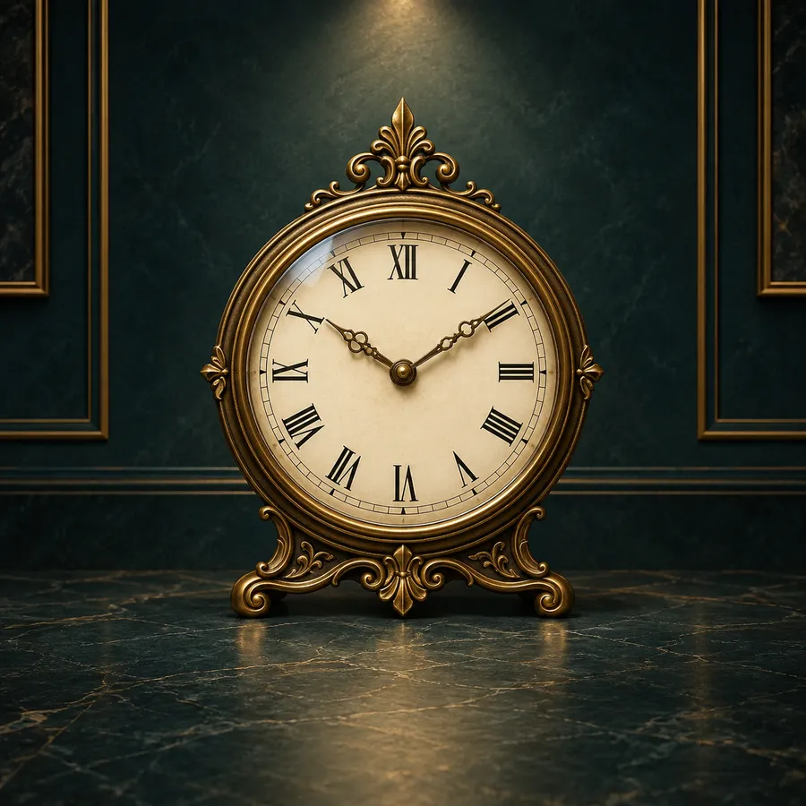
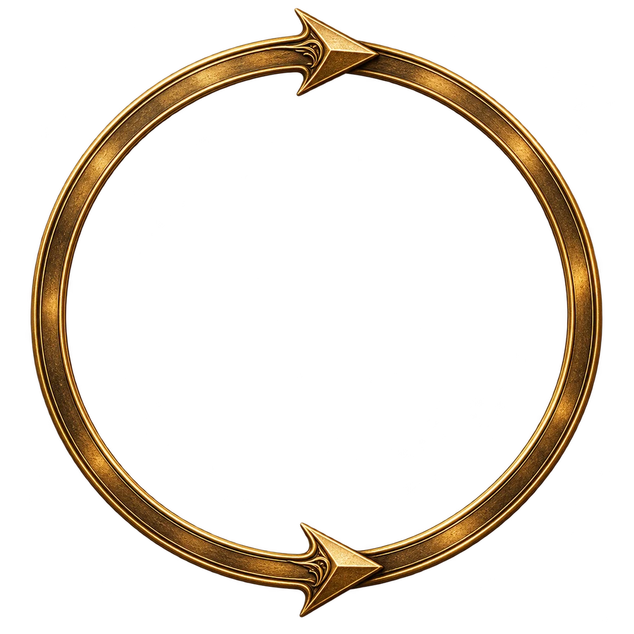
ANSWERaround the clock
PATTERN6 3 5
CLUES
Follow the arrows.
They circle the object without stopping.
The phrase means continuously, day and night.
WHERE IT CAME FROMThe phrase comes from the circular face and endlessly moving hands of a clock. Working “around the clock” means continuing through the complete day and night without a normal stop.
Puzzle 96Medium
Find the hidden phrase
ANSWERlight at the end of the tunnel
PATTERN5 2 3 3 2 3 6
CLUES
Look toward the farthest point.
Something hopeful appears beyond the darkness.
Name both the bright object and the passage.
WHERE IT CAME FROMA distant light has long represented hope after darkness or confinement. The exact source of this wording is uncertain, though tunnel and railway imagery helped make it familiar in the 1800s and 1900s.
Puzzle 97Easy
Find the hidden phrase
ANSWERtunnel vision
PATTERN6 6
CLUES
The eye can see through only one narrow route.
Its field of view is strongly restricted.
Combine the passage with the sense being used.
WHERE IT CAME FROMTunnel vision first named a medical loss of peripheral sight, leaving only a narrow central view. During the 1900s it became a metaphor for concentrating so narrowly that other possibilities are missed.
Puzzle 98Easy
Find the hidden phrase
ANSWERmixed signals
PATTERN5 7
CLUES
Several different systems are communicating at once.
Traffic, pedestrian, phone and radio cues conflict around one person.
Describe the confusing combination.
WHERE IT CAME FROMThe expression grew with modern systems of signs, radio and electronic communication. When different signals point to different meanings, the receiver cannot tell which message to trust.
Puzzle 99Easy
Find the hidden phrase
ANSWERcrossed wires
PATTERN7 5
CLUES
Follow each coloured electrical cable.
Their exposed copper ends show they are actual wires.
The two wires intersect in the middle.
WHERE IT CAME FROMTelegraph and telephone systems could produce the wrong message when wires were mistakenly connected. In the early 1900s, “crossed wires” became a common metaphor for misunderstanding one another.
Puzzle 100Easy
Find the hidden phrase
ANSWERloose ends
PATTERN5 4
CLUES
Notice the thick twisted rope fibres.
Both frayed tips are free and remain untied.
The phrase describes unresolved details.
WHERE IT CAME FROMThe phrase probably comes from ropes, threads and other work that leaves unsecured ends needing to be tied. It broadened to mean the small unfinished parts of any task or story.
Puzzle 101Easy
Find the hidden phrase
ANSWERstrings attached
PATTERN7 8
CLUES
The object looks like a gift.
Four real cords are visibly knotted to its corners.
The phrase suggests hidden conditions.
WHERE IT CAME FROMA string can physically connect one thing to another. During the 1800s, “strings” also came to mean hidden influence, control or conditions—so strings attached are obligations that come with an offer.
Puzzle 102Easy
Find the hidden phrase
ANSWERtrain of thought
PATTERN5 2 7
CLUES
The vehicle is unmistakably travelling on railway tracks.
Its three carriages are shaped like symbols for thinking.
Combine the vehicle with what its carriages represent.
WHERE IT CAME FROMThe image compares connected ideas to railway carriages following one another. “Train” had already meant a connected sequence before railways, and philosophers were writing about a train of thoughts by the 1600s.
Puzzle 103Easy
Find the hidden phrase
ANSWERfood for thought
PATTERN4 3 7
CLUES
The place setting is serving something unexpected.
The object on the plate represents thinking.
Combine the meal idea with its mental purpose.
WHERE IT CAME FROMWriters have compared ideas to nourishment for centuries. “Food for thought” treats an interesting subject as something the mind can consume, digest and continue working on.
Puzzle 104Easy
Find the hidden phrase
ANSWERdeep thought
PATTERN4 7
CLUES
Follow the three small thought dots from the person.
They descend through very deep water to a bubble containing a brain.
Describe the bubble’s depth before naming what it represents.
WHERE IT CAME FROMDepth has long represented seriousness and complexity: a deep subject requires looking beneath the surface. “Deep thought” is a natural extension of that old metaphor rather than a phrase with one inventor.
Puzzle 105Easy
Find the hidden phrase
ANSWERsecond thoughts
PATTERN6 8
CLUES
The person is clearly thinking rather than speaking.
An earlier approving thought is being replaced by a newer contradictory one.
The phrase means reconsidering a decision.
WHERE IT CAME FROMA second thought is a later reconsideration of an earlier choice. English has used “second thoughts” for doubt or a changed mind since at least the 1600s.
Puzzle 106Easy
Find the hidden phrase
ANSWERpeace of mind
PATTERN5 2 4
CLUES
The outer shape is unmistakably a complete human head.
A symbol of calm and harmony sits inside the brain area.
Combine the inner symbol with what the head represents.
WHERE IT CAME FROMThe wish for inner calm is ancient, and “peace of mind” appears in English religious and philosophical writing for centuries. It means peace located within one’s thoughts rather than peace between nations.
Puzzle 107Medium
Find the hidden phrase
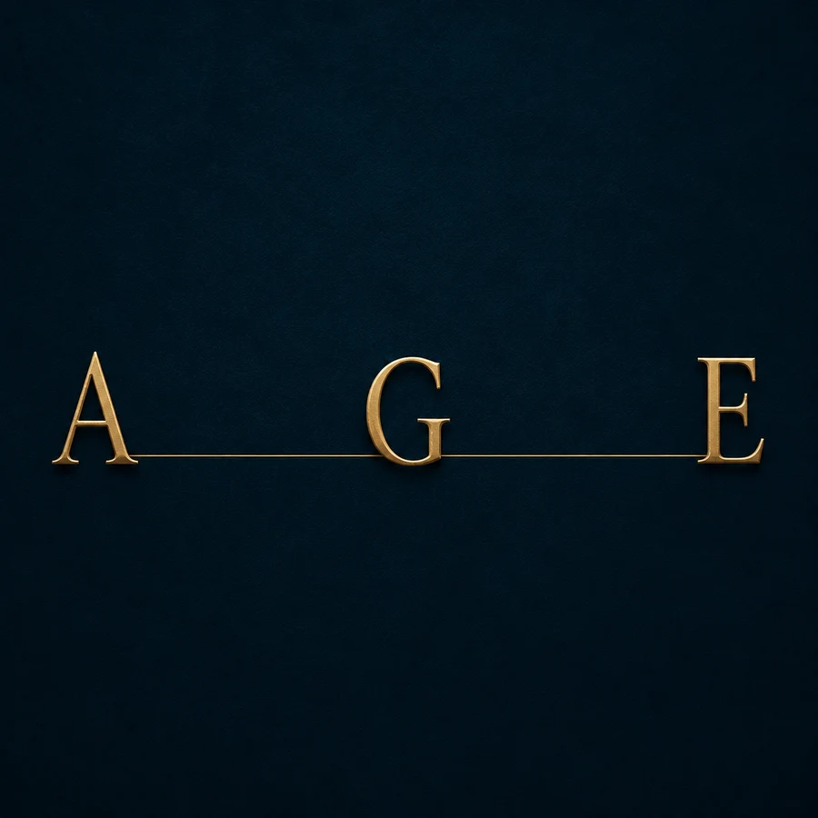
ANSWERmiddle age spread
PATTERN6 3 6
CLUES
The letters still make one short word.
Their spacing has expanded dramatically.
Notice both the word and where the expansion occurs.
WHERE IT CAME FROMThis humorous expression became common in the 1900s. “Spread” refers to the weight people may gain around the waist during middle age, not to a formal medical condition.
Puzzle 108Easy
Find the hidden phrase
FORTUNE
ANSWERsmall fortune
PATTERN5 7
CLUES
Compare the word with the empty space.
It is much smaller than expected.
Describe its size before reading it.
WHERE IT CAME FROMCalling a large amount “a fortune” has been common for centuries. “A small fortune” is deliberately ironic: the amount is smaller than a true fortune but still surprisingly expensive or valuable.
Puzzle 109Easy
Find the hidden phrase
ANSWERbig cheese
PATTERN3 6
CLUES
Compare the food with the nearby furniture.
Its scale is comically exaggerated.
The phrase can describe an important person.
WHERE IT CAME FROM“Big cheese” became American slang for an important person in the early 1900s. Its deeper origin is disputed; the popular claim that it comes directly from the Hindi or Urdu word chiz is possible but unproven.
Puzzle 110Easy
Find the hidden phrase
ANSWERmoney talks
PATTERN5 5
CLUES
The money itself has a real open mouth.
Visible sound waves show that sound is coming from it.
Name the object before the action.
WHERE IT CAME FROMThe proverb rests on an old observation that wealth has influence. Versions of “money talks” appeared in English centuries ago, long before it became a common modern catchphrase.
Puzzle 111Easy
Find the hidden phrase
ANSWERcash flow
PATTERN4 4
CLUES
Follow the direction of the banknotes.
They move along something normally filled with water.
Combine the money with the movement.
WHERE IT CAME FROM“Cash flow” began as a business and accounting term in the 1900s. It pictures money moving into and out of an organisation like a current of water.
Puzzle 112Easy
Find the hidden phrase
ANSWERnest egg
PATTERN4 3
CLUES
Identify the single golden object.
It is naturally seated inside a woven structure made from twigs.
The phrase can mean savings kept for the future.
WHERE IT CAME FROMPoultry keepers once left a real or artificial egg in a nest to encourage a hen to lay more. By the 1600s, “nest egg” had become a metaphor for savings kept to grow over time.
Puzzle 113Easy
Find the hidden phrase
ANSWERbreak the bank
PATTERN5 3 4
CLUES
A tool is about to damage a building.
Identify the type of building.
Read the action before the object.
WHERE IT CAME FROMThe phrase comes from gambling houses: a player who won more money than the house could pay could literally break the bank. It later broadened to mean exhausting anyone’s supply of money.
Puzzle 114Medium
Find the hidden phrase
ANSWERpie in the sky
PATTERN3 2 3 3
CLUES
The food is nowhere near a kitchen table.
Look at the clouds surrounding it.
Name the food, then its location.
WHERE IT CAME FROMThe phrase comes from labour activist Joe Hill’s 1911 song “The Preacher and the Slave.” Its promise of “pie in the sky” mocked rewards offered only in a distant afterlife instead of help in the present.
Puzzle 115Easy
Find the hidden phrase
ANSWERpiece of cake
PATTERN5 2 4
CLUES
The dessert has been constructed unusually.
One interlocking part has been removed.
Name that part before the dessert.
WHERE IT CAME FROM“A piece of cake” became American slang for an easy task in the 1900s. Cake already represented something pleasant and easily enjoyed; the exact person who first made the comparison is unknown.
Puzzle 116Easy
Find the hidden phrase
ANSWERneedle in a haystack
PATTERN6 2 1 8
CLUES
Search the huge golden mound carefully.
One tiny sewing tool is hidden among similar thin shapes.
The phrase describes something extremely difficult to find.
WHERE IT CAME FROMThe comparison was already familiar in English by the 1500s. A tiny needle hidden in a mass of hay became the perfect image for something almost impossible to locate.
Puzzle 117Easy
Find the hidden phrase
ANSWERwolf in sheep's clothing
PATTERN4 2 6 8
CLUES
The animal underneath is not what its coat suggests.
Its ears, face, paws and tail betray the disguise.
The phrase describes someone dangerous pretending to be harmless.
WHERE IT CAME FROMThe wording comes from the Bible. In Matthew 7:15, false prophets are described as appearing in sheep’s clothing while inwardly being ravenous wolves.
Puzzle 118Easy
Find the hidden phrase
ANSWERskeleton in the closet
PATTERN8 2 3 6
CLUES
Tap the piece of furniture to look inside.
Something bony is concealed behind its doors.
The phrase means a hidden and embarrassing secret.
WHERE IT CAME FROMThe expression became popular in the 1800s for a shameful family secret kept hidden from outsiders. A closet provided the imagined hiding place, while a skeleton represented something long concealed.
Puzzle 119Medium
Find the hidden phrase
ANSWERburning the candle at both ends
PATTERN7 3 6 2 4 4
CLUES
The candle is burning in an impossible way.
Count how many ends have flames.
The phrase describes exhausting yourself by doing too much.
WHERE IT CAME FROMThe image comes from lighting both ends of a candle, which produces more light briefly but uses it up twice as fast. The saying is older, but Edna St. Vincent Millay’s 1920 poem made the image especially famous.
Puzzle 120Medium
Find the hidden phrase
ANSWERput the cart before the horse
PATTERN3 3 4 6 3 5
CLUES
The two farm objects are in the wrong order.
The vehicle appears ahead of the animal meant to pull it.
The phrase warns against doing things backwards.
WHERE IT CAME FROMEnglish versions of this proverb have circulated since at least the 1500s. Reversing a horse and cart represents doing tasks in the wrong order and expecting the arrangement to work.
Puzzle 121Easy
Find the hidden phrase
ANSWERapple of my eye
PATTERN5 2 2 3
CLUES
Look inside the eye.
Its pupil has been replaced by a familiar fruit.
The phrase describes someone greatly cherished.
WHERE IT CAME FROMThe “apple” of the eye was an old name for the pupil, once imagined as a small round object. Biblical translations helped preserve the phrase as a term for someone precious and carefully protected.
Puzzle 122Easy
Find the hidden phrase
ANSWERchip on your shoulder
PATTERN4 2 4 8
CLUES
A small snack is resting somewhere on a person.
Focus on the upper side of the torso.
The phrase describes a lasting grievance.
WHERE IT CAME FROMThis American expression appeared in the 1800s. It is often linked to a challenge in which someone carried a wood chip on the shoulder and dared others to knock it off, though the exact history is not completely settled.
Puzzle 123Easy
Find the hidden phrase
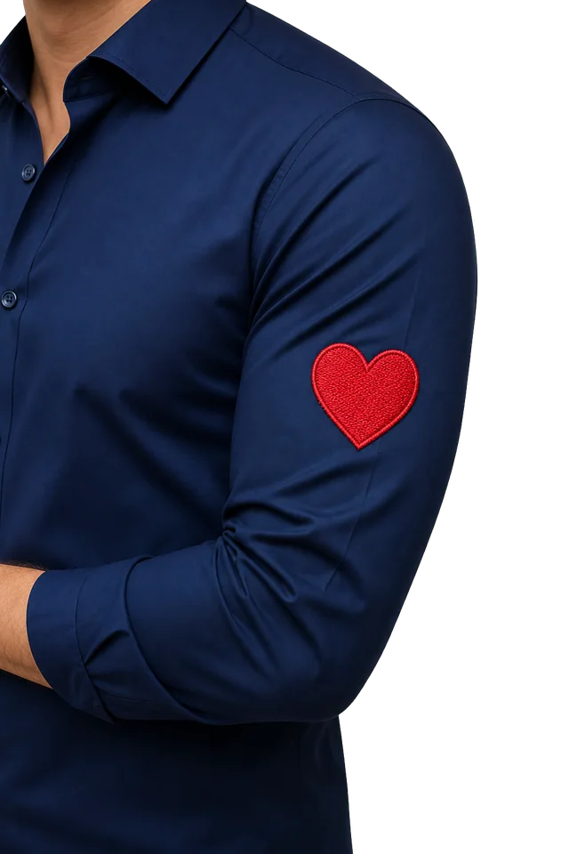
ANSWERheart on your sleeve
PATTERN5 2 4 6
CLUES
The emotion symbol is worn openly.
It appears on one part of a shirt rather than inside the chest.
The phrase means showing feelings openly.
WHERE IT CAME FROMThe heart has long represented emotion, while a sleeve leaves something plainly visible. Shakespeare used the full image in Othello, where Iago speaks of wearing his heart upon his sleeve.
Puzzle 124Easy
Find the hidden phrase
ANSWERtongue tied
PATTERN6 4
CLUES
Identify the body part.
A knot prevents it from moving freely.
The phrase describes being unable to find the right words.
WHERE IT CAME FROMThe phrase makes hesitation physical: a tied tongue cannot move freely enough to speak. English has described people as tongue-tied for centuries, including in early modern literature.
Puzzle 125Easy
Find the hidden phrase
ANSWERfoot in your mouth
PATTERN4 2 4 5
CLUES
The body part is somewhere it should never be.
Its container is used for speaking and eating.
The phrase describes saying something embarrassing.
WHERE IT CAME FROMThis American expression became common in the 1900s. It pictures an embarrassing remark as a physical blunder so awkward that the speaker has somehow put a foot into their own mouth.
Puzzle 126Easy
Find the hidden phrase
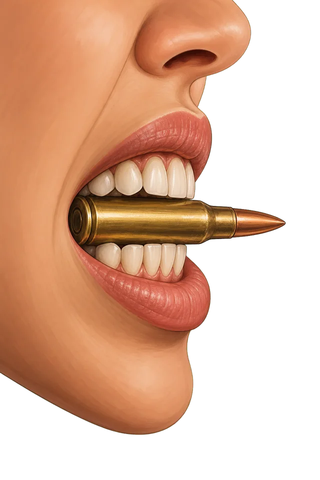
ANSWERbite the bullet
PATTERN4 3 6
CLUES
One object is normally used for chewing.
It is clamped onto something made of metal.
The phrase means facing something difficult bravely.
WHERE IT CAME FROMSoldiers were recorded chewing bullets to avoid crying out during punishment, and later stories linked bullets with enduring battlefield pain. By the late 1800s the phrase meant facing hardship with courage.
Puzzle 127Easy
Find the hidden phrase
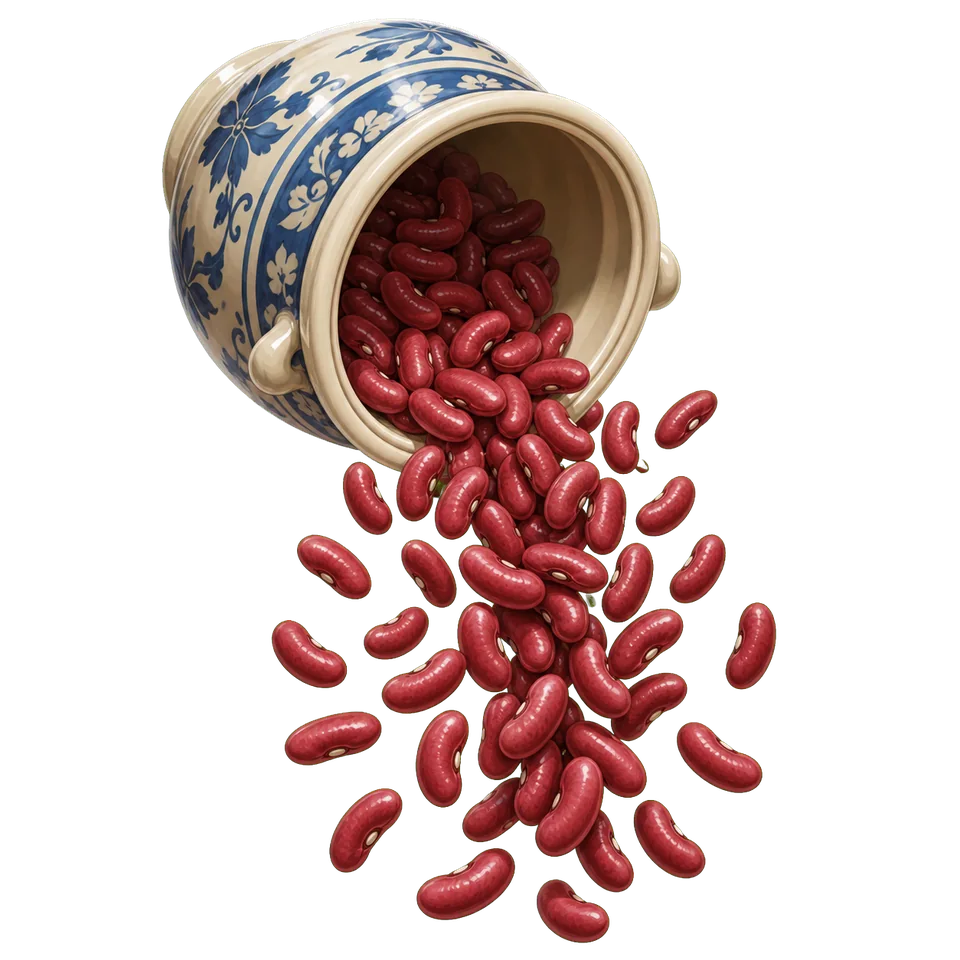
ANSWERspill the beans
PATTERN5 3 5
CLUES
The container has fallen sideways.
Small food items are escaping from it.
The phrase means revealing secret information.
WHERE IT CAME FROM“Spill the beans” is American slang from the early 1900s. The popular ancient-Greek voting story lacks evidence; the modern sense grew from “spill” already meaning to let information out.
Puzzle 128Easy
Find the hidden phrase
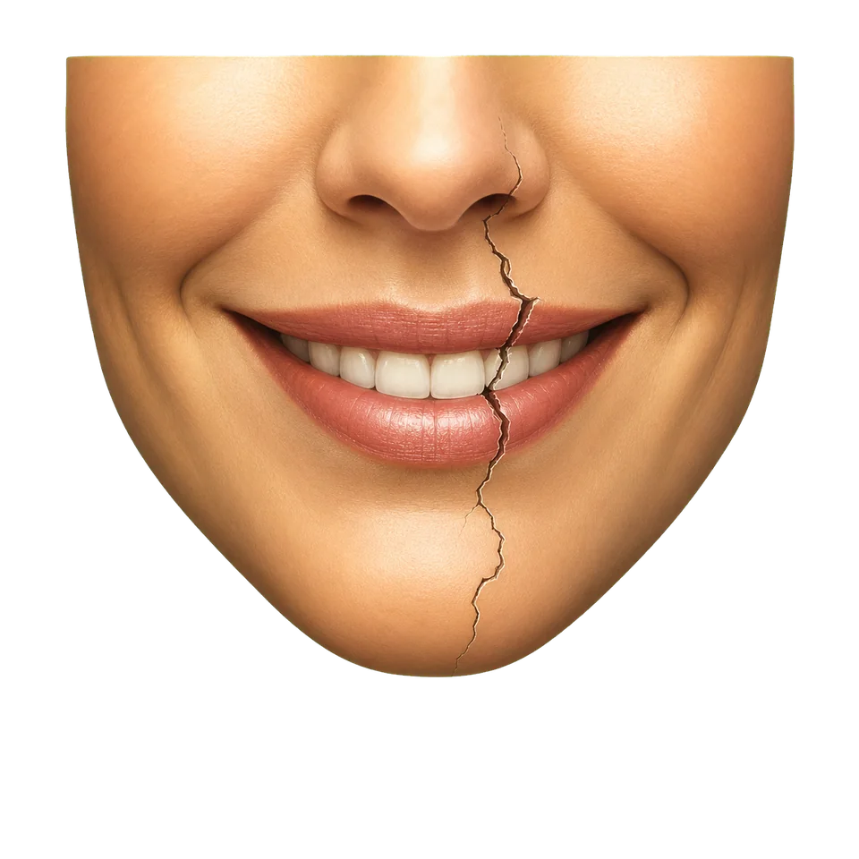
ANSWERcrack a smile
PATTERN5 1 5
CLUES
The expression is positive.
A jagged break runs through it.
Read the damage before the expression.
WHERE IT CAME FROM“Crack” can mean forcing something closed to open. By the 1800s, writers were using the image for finally producing a smile on an otherwise serious face.
Puzzle 129Easy
Find the hidden phrase
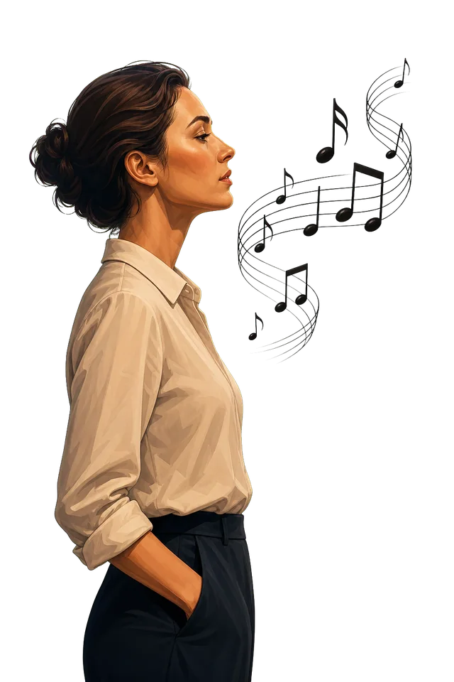
ANSWERface the music
PATTERN4 3 5
CLUES
Notice which direction the face is looking.
It is confronting a group of notes.
The phrase means accepting unpleasant consequences.
WHERE IT CAME FROMThis American expression became common in the early 1900s. Stories connecting it to military dismissal ceremonies are widely repeated but poorly supported, so its exact origin remains uncertain.
Puzzle 130Medium
Find the hidden phrase
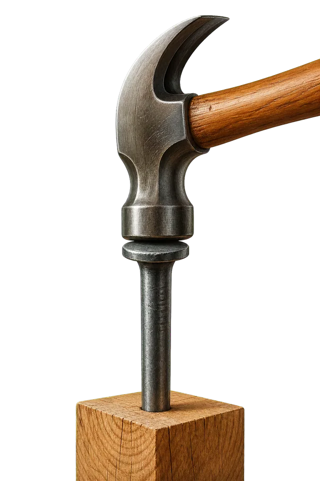
ANSWERhit the nail on the head
PATTERN3 3 4 2 3 4
CLUES
A fastener is positioned very precisely.
It sits on top of the body part used for thinking.
The phrase means getting something exactly right.
WHERE IT CAME FROMThe image comes directly from accurate carpentry: a well-aimed hammer strikes the nail squarely on its head. English has used it figuratively for identifying the exact point since at least the 1500s.
Puzzle 131Easy
Find the hidden phrase
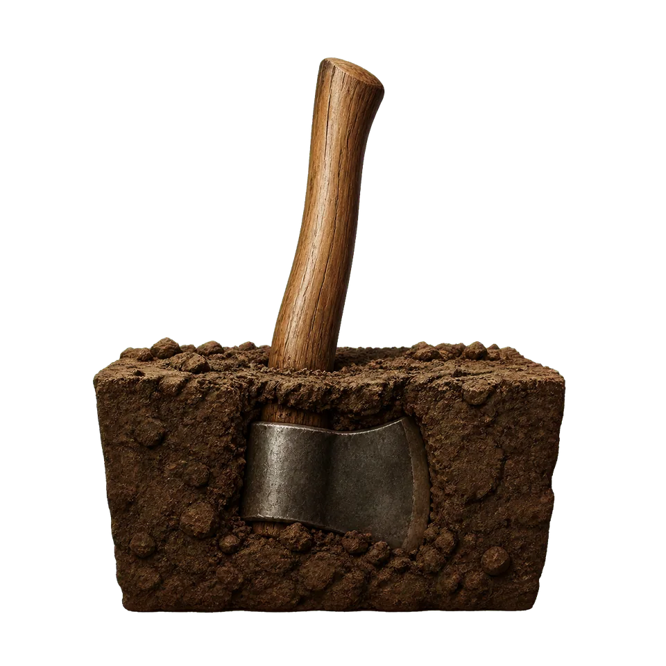
ANSWERbury the hatchet
PATTERN4 3 7
CLUES
Most of the tool is below ground level.
Identify the chopping tool.
The phrase means ending a disagreement.
WHERE IT CAME FROMThe saying is linked to Indigenous North American peace-making traditions in which weapons were put away or buried. English settlers recorded versions of the image in the 1600s, though details vary among nations and accounts.
Puzzle 132Easy
Find the hidden phrase
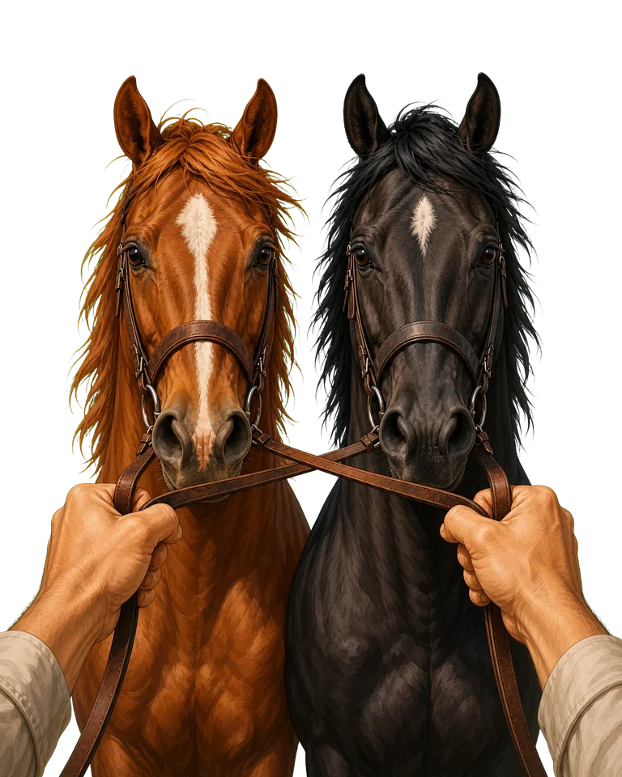
ANSWERhold your horses
PATTERN4 4 6
CLUES
The hands are preventing an animal from moving.
The animal is normally ridden.
The phrase asks someone to wait.
WHERE IT CAME FROMThe phrase comes from controlling a team of horses before they move too soon. It became popular American advice in the 1800s: pause, restrain your excitement and wait.
Puzzle 133Easy
Find the hidden phrase
ANSWERkick the bucket
PATTERN4 3 6
CLUES
A leg is making contact with a container.
The container has a handle.
Read the action before the object.
WHERE IT CAME FROM“Kick the bucket” was recorded as slang for dying by the late 1700s. Its exact origin is debated; one strong possibility uses an older meaning of “bucket,” a beam from which slaughtered animals were hung.
Puzzle 134Medium
Find the hidden phrase
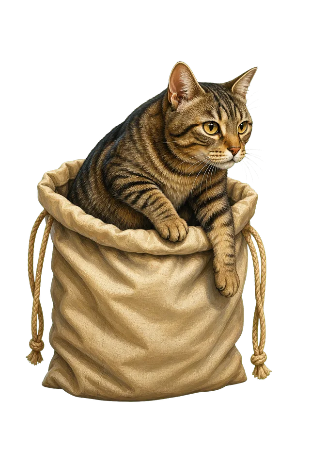
ANSWERlet the cat out of the bag
PATTERN3 3 3 3 2 3 3
CLUES
An animal is escaping from a container.
The container is a bag.
The phrase means revealing a secret.
WHERE IT CAME FROMThe phrase was in print by the 1700s, but its source is not certain. The market-swindle story—revealing a cat substituted for a pig in a bag—is plausible, while the naval-whip explanation fits the meaning less well.
Puzzle 135Medium
Find the hidden phrase
ANSWERbarking up the wrong tree
PATTERN7 2 3 5 4
CLUES
The dog is focused on one tree.
The animal it seeks is hiding in the other tree.
The phrase means following a mistaken line of thought.
WHERE IT CAME FROMThis American frontier expression comes from hunting dogs following an animal’s scent to a tree. If the quarry had escaped elsewhere, the dogs were literally barking at the wrong tree.
Puzzle 136Medium
Find the hidden phrase
BEATBEATBEATBEAT
ANSWERbeat around the bush
PATTERN4 6 3 4
CLUES
The same action word circles an object.
Nothing goes directly through the centre.
The phrase means avoiding the main point.
WHERE IT CAME FROMHunters and beaters disturb bushes to drive hidden birds or animals into the open. “Beating around the bush” shifted the action away from the target and became a metaphor for avoiding the main point.
Puzzle 137Easy
Find the hidden phrase
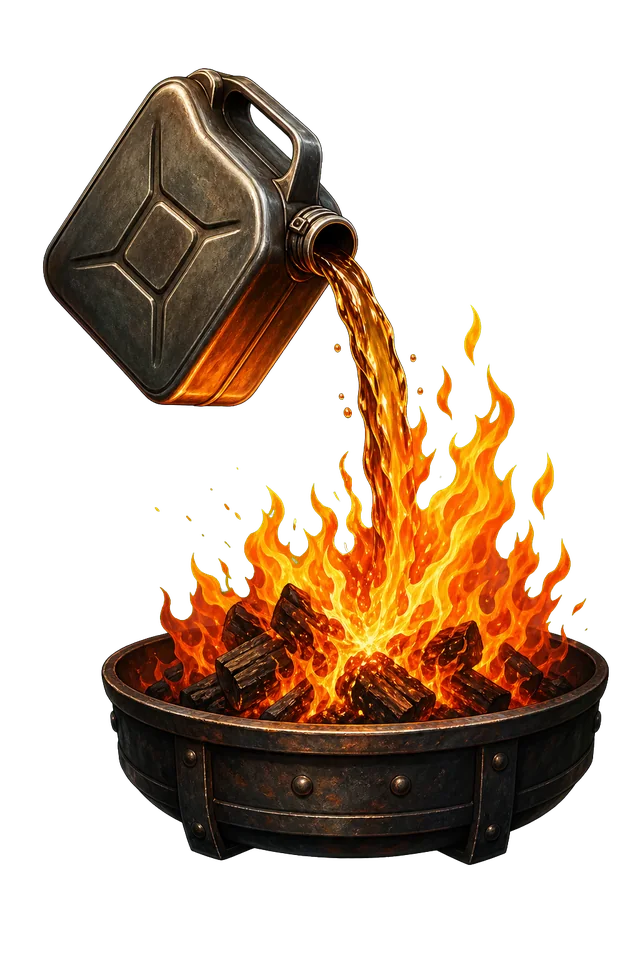
ANSWERadd fuel to the fire
PATTERN3 4 2 3 4
CLUES
One substance is moving toward flames.
That substance will make the flames stronger.
The phrase means making a bad situation worse.
WHERE IT CAME FROMFire grows when more fuel is added. That simple physical fact has long served as a metaphor for making anger, conflict or another bad situation more intense.
Puzzle 138Easy
Find the hidden phrase
ANSWERburn your bridges
PATTERN4 4 7
CLUES
The structure connects two sides.
Fire is destroying the route back.
The phrase means permanently damaging a relationship or option.
WHERE IT CAME FROMArmies have sometimes destroyed bridges after crossing them to prevent pursuit. Figuratively, burning your bridges removes any route back and makes a decision difficult or impossible to reverse.
Puzzle 139Easy
Find the hidden phrase
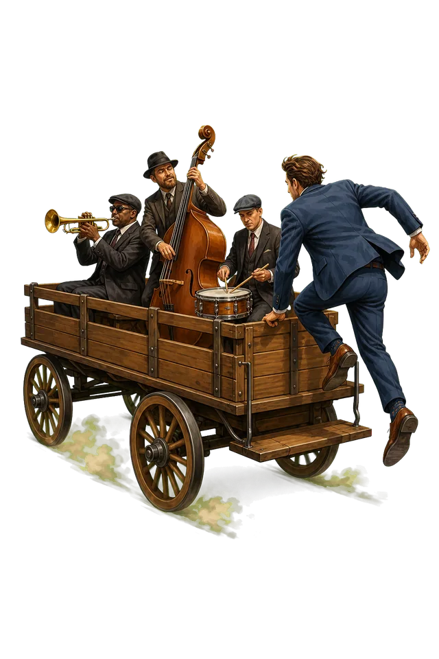
ANSWERjump on the bandwagon
PATTERN4 2 3 9
CLUES
Several instruments belong to one group.
That group is riding on a wheeled vehicle.
The phrase means joining something because it is popular.
WHERE IT CAME FROMA bandwagon originally carried the band in an American circus parade. Politicians adopted the eye-catching wagons during the late 1800s, and climbing aboard became a metaphor for joining a cause once it looked popular.
Puzzle 140Easy
Find the hidden phrase
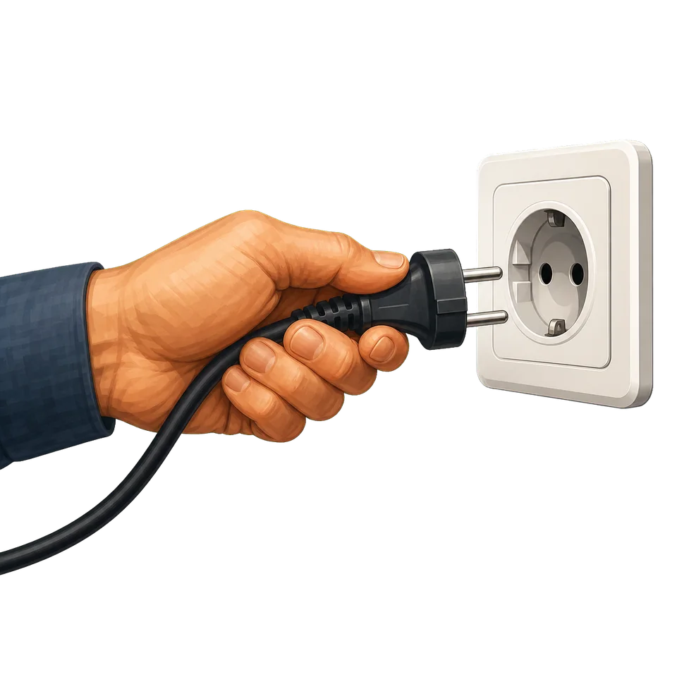
ANSWERpull the plug
PATTERN4 3 4
CLUES
The hand is removing something electrical.
An arrow shows it leaving its connection.
The phrase means stopping an activity completely.
WHERE IT CAME FROMPulling a plug can drain a container or disconnect electrical equipment. During the 1900s, the phrase broadened to mean stopping a project, system or life-support process.
Puzzle 141Easy
Find the hidden phrase
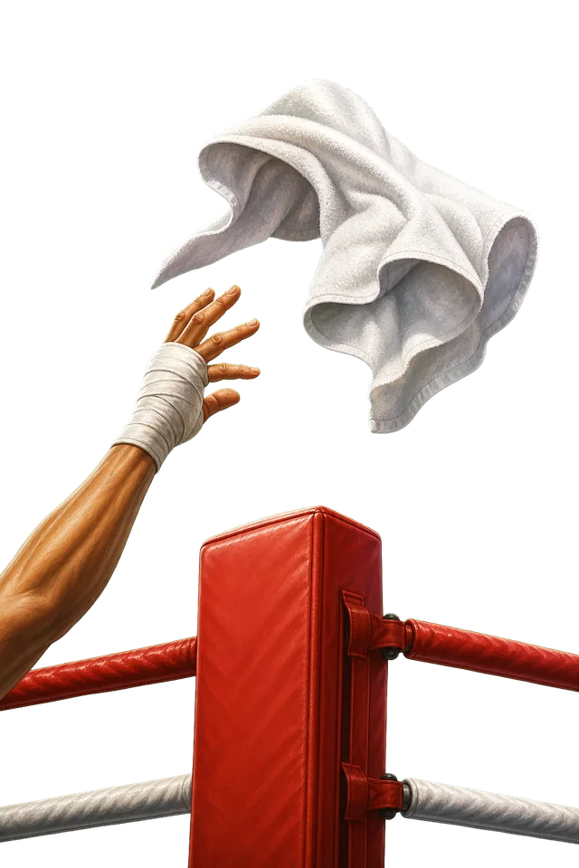
ANSWERthrow in the towel
PATTERN5 2 3 5
CLUES
The rectangular cloth is moving through the air.
It has been tossed rather than folded.
The phrase means giving up.
WHERE IT CAME FROMThis comes from boxing. A trainer could throw a towel or sponge into the ring to signal that their fighter was giving up, protecting them from further punishment.
Puzzle 142Medium
Find the hidden phrase
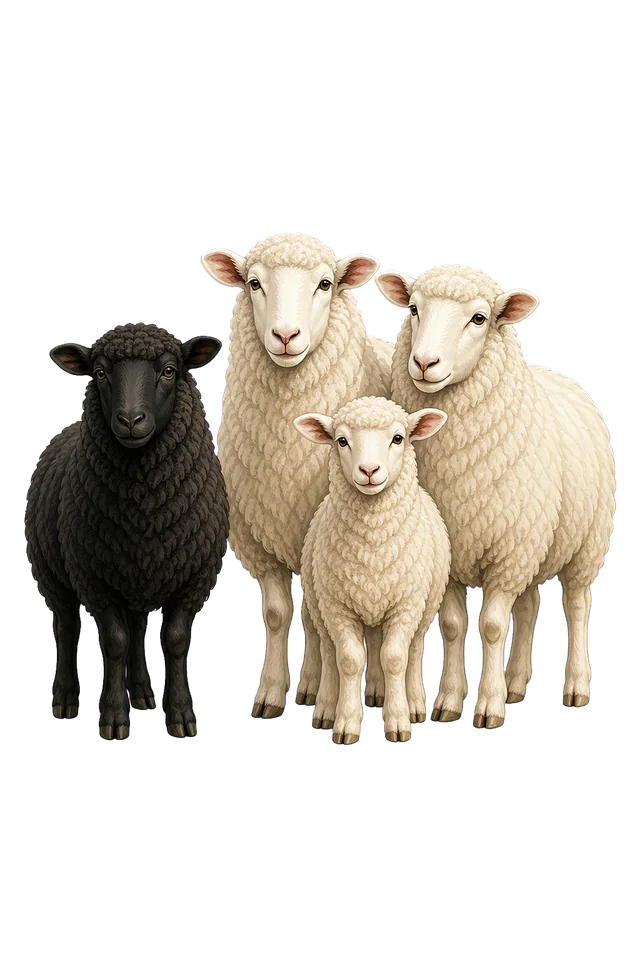
ANSWERblack sheep of the family
PATTERN5 5 2 3 6
CLUES
Compare the animals’ colours.
One member of the group is visibly different.
The phrase describes an unconventional family member.
WHERE IT CAME FROMBlack wool was less easily dyed and therefore once considered less valuable than white wool. By the 1700s, a “black sheep” meant the disreputable or troublesome member of a group or family.
Puzzle 143Easy
Find the hidden phrase
ANSWERred herring
PATTERN3 7
CLUES
Identify the colour.
The shape represents a fish.
The phrase means a misleading clue.
WHERE IT CAME FROMThe modern figurative use comes from an 1807 political story by William Cobbett, who described a smoked red herring dragging attention onto a false trail. Claims that hunters routinely used herrings this way are doubtful.
Puzzle 144Medium
Find the hidden phrase
ANSWERgreen with envy
PATTERN5 4 4
CLUES
Read the emotion word.
Its colour supplies the missing description.
The phrase describes strong jealousy.
WHERE IT CAME FROMEuropean writers connected greenish skin with sickness, jealousy and troubled emotion for centuries. Shakespeare helped make the colour famous by calling jealousy the “green-eyed monster” in Othello.
Puzzle 145Easy
Find the hidden phrase
ANSWERwhite lie
PATTERN5 3
CLUES
Read the short word.
Its colour is the other half of the answer.
The phrase means a harmless untruth.
WHERE IT CAME FROMWhite traditionally suggested innocence or harmlessness. By the 1700s, a “white lie” meant a minor or well-intentioned untruth, contrasted with a darker and more malicious deception.
Puzzle 146Easy
Find the hidden phrase
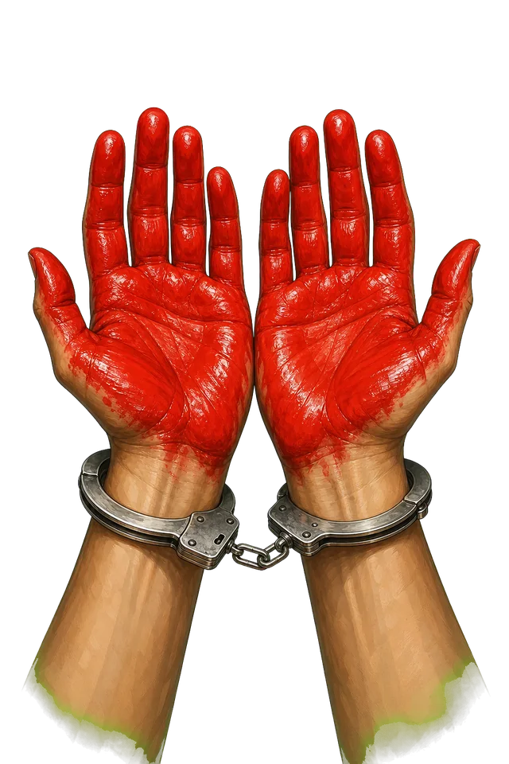
ANSWERcaught red handed
PATTERN6 3 6
CLUES
Look at both the colour and the body parts.
A border suggests they have been caught.
The phrase means being discovered during wrongdoing.
WHERE IT CAME FROMThe phrase originally referred to being caught with blood still on one’s hands after a crime. Forms of “red hand” appear in Scottish legal and historical writing centuries before the modern wording settled.
Puzzle 147Easy
Find the hidden phrase
ANSWERblind spot
PATTERN5 4
CLUES
One symbol represents sight.
A dark bar prevents it from seeing the nearby dot.
The phrase describes something overlooked.
WHERE IT CAME FROMA blind spot is literally the point in the eye’s visual field where the optic nerve leaves the retina. The scientific term later became a metaphor for something a person repeatedly fails to notice.
Puzzle 148Medium
Find the hidden phrase
★⌛
ANSWERwindow of opportunity
PATTERN6 2 11
CLUES
A valuable chance is visible, but only through one opening.
The hourglass says the opening will not last.
The answer describes a brief chance to act.
WHERE IT CAME FROMA window opens for only a limited time before closing. The modern business and political phrase turns that brief opening into a chance that must be taken while it remains available.
Puzzle 149Easy
Find the hidden phrase
ANSWERkey to success
PATTERN3 2 7
CLUES
The object can unlock something.
Its target is a positive outcome.
Combine the object with the target.
WHERE IT CAME FROMKeys open locks, so they have symbolised access and solutions for centuries. Calling something “the key to success” means it unlocks the desired result.
Puzzle 150Easy
Find the hidden phrase
ANSWERstepping stone
PATTERN8 5
CLUES
Follow the footprints.
They move across separate rocks.
Name the action before the object.
WHERE IT CAME FROMStepping stones are real stones placed so people can cross shallow water or difficult ground. Their useful intermediate role made them a natural metaphor for a stage leading toward a larger goal.
Puzzle 151Easy
Find the hidden phrase
ANSWERfork in the road
PATTERN4 2 3 4
CLUES
Follow the road from the bottom.
Its single route divides into several parallel tips.
The phrase describes a point requiring a choice.
WHERE IT CAME FROMA fork is a place where one road divides into separate routes. It has long served as an image for a decision where choosing one direction means leaving another behind.
Puzzle 152Easy
Find the hidden phrase
ANSWERuphill battle
PATTERN6 6
CLUES
The word names a difficult struggle.
Its path slopes sharply upward.
The phrase describes a very difficult task.
WHERE IT CAME FROMFighting uphill puts an army at a physical disadvantage against opponents above. The military image broadened into a metaphor for any difficult struggle against unfavourable conditions.
Puzzle 153Easy
Find the hidden phrase
ANSWERwalking a tightrope
PATTERN7 1 9
CLUES
The footprints follow a very narrow support.
A fall would be dangerous.
The phrase describes managing a risky situation.
WHERE IT CAME FROMTightrope walkers must move carefully because a small mistake can be disastrous. The circus act became a metaphor for managing a risky situation with little room for error.
Puzzle 154Easy
Find the hidden phrase
ACT
ANSWERbalancing act
PATTERN9 3
CLUES
The word is resting on a pivot.
Both sides are held level.
The phrase describes managing competing demands.
WHERE IT CAME FROMThe phrase comes from performers who balance objects or themselves. It became a metaphor for keeping competing duties, interests or pressures under control at the same time.
Puzzle 155Easy
Find the hidden phrase
ANSWERtip of the iceberg
PATTERN3 2 3 7
CLUES
Compare what is above the water with what is below.
Only a tiny portion can be seen.
The phrase describes a small visible part of a much larger problem.
WHERE IT CAME FROMOnly a small part of a floating iceberg is visible above water. During the 1900s this became a familiar metaphor for evidence that reveals only a much larger hidden problem.
Puzzle 156Easy
Find the hidden phrase
ANSWERcalm before the storm
PATTERN4 6 3 5
CLUES
Read the weather from left to right.
Peace and stillness come first; violent weather follows.
The phrase describes a quiet period before trouble.
WHERE IT CAME FROMSailors and weather-watchers have long noticed that an eerie stillness may arrive before severe weather. The observation became a metaphor for a peaceful pause before trouble or intense activity.
Puzzle 157Easy
Find the hidden phrase
ANSWEReye of the storm
PATTERN3 2 3 5
CLUES
The centre contains an organ of sight.
Everything around it swirls like violent weather.
Name the centre before the weather.
WHERE IT CAME FROMThe eye is the relatively calm centre of a strong tropical cyclone, surrounded by the eyewall’s violent winds. Meteorology supplied a vivid phrase for calm located inside turmoil.
Puzzle 158Easy
Find the hidden phrase
ANSWERon cloud nine
PATTERN2 5 4
CLUES
Count the rising shapes carefully.
Someone is celebrating on the highest one.
The phrase means feeling extremely happy.
WHERE IT CAME FROM“On cloud nine” became American slang for extreme happiness in the mid-1900s. Many numbered-cloud explanations have been proposed, but none has enough evidence to settle its exact origin.
Puzzle 159Easy
Find the hidden phrase
ANSWERrain on your parade
PATTERN4 2 4 6
CLUES
A celebration is moving below.
Bad weather is falling directly onto it.
The phrase means spoiling someone’s enjoyment.
WHERE IT CAME FROMA parade represents celebration and public happiness; rain can spoil it. The American expression became common in the 1900s for someone who ruins another person’s pleasure or plans.
Puzzle 160Easy
Find the hidden phrase
ANSWERout on a limb
PATTERN3 2 1 4
CLUES
The figure is far from the trunk.
Only a narrow branch supports them.
The phrase describes taking a risky position.
WHERE IT CAME FROMA person climbing away from a tree’s trunk onto a limb has less support and greater risk. By the 1800s, going “out on a limb” meant taking a vulnerable position without much backing.
Puzzle 161Easy
Find the hidden phrase
ANSWERbranching out
PATTERN9 3
CLUES
One route begins at the base.
It divides and spreads in several outward directions.
The phrase means expanding into new areas.
WHERE IT CAME FROMA growing tree sends branches away from its central trunk. The natural image became a metaphor for expanding into new activities, places or subjects.
Puzzle 162Easy
Find the hidden phrase
ANSWERroot of the problem
PATTERN4 2 3 7
CLUES
Look below the ground rather than at the tree.
The difficulty is embedded in its central foundation.
The phrase means the fundamental cause of an issue.
WHERE IT CAME FROMRoots are hidden foundations from which a plant grows. English has long used them metaphorically for the deepest underlying cause of a problem rather than its visible symptoms.
Puzzle 163Easy
Find the hidden phrase
ANSWERfamily tree
PATTERN6 4
CLUES
The branches hold portraits rather than fruit.
The people belong to several generations.
Combine the relationship with the plant.
WHERE IT CAME FROMGenealogies have been drawn as branching trees since the Middle Ages. Ancestors form the trunk or roots while descendants spread into branches, creating the modern family tree.
Puzzle 164Medium
Find the hidden phrase
ANSWERturn over a new leaf
PATTERN4 4 1 3 4
CLUES
The first leaf is old and brown.
A turning arrow leads to a fresh green replacement.
The phrase means making a positive new start.
WHERE IT CAME FROM“Leaf” is an old word for a page of a book. Turning over a new leaf therefore meant beginning on a fresh page, and by the 1500s it was being used for changing one’s behaviour.
Puzzle 165Easy
Find the hidden phrase
ANSWERover the moon
PATTERN4 3 4
CLUES
The small figure is travelling in a high arc.
It passes above a celestial object.
The phrase means being delighted.
WHERE IT CAME FROMThe Moon is an impossibly high target, so being “over the moon” exaggerates happiness beyond ordinary limits. The image was familiar from nursery-rhyme tradition before its modern emotional use became widespread.
Puzzle 166Easy
Find the hidden phrase
ANSWERfine print
PATTERN4 5
CLUES
Name the visible words or objects, then describe their most unusual relationship.
Literal observation: PRINT shown in exceptionally fine, compact lettering. Focus especially on “PRINT”.
The answer is 2 words and its initials are F–P.
WHERE IT CAME FROMThe phrase comes from contracts and advertisements set in very small type. Important restrictions could be physically harder to notice, so “fine print” became shorthand for easily missed conditions.
Puzzle 167Easy
Find the hidden phrase
ANSWERcross purposes
PATTERN5 8
CLUES
Count the repeated elements carefully; the number or repetition is part of the phrase.
Literal observation: Two PURPOSE arrows travel across one another in conflicting directions. Focus especially on “PURPOSES”.
The answer is 2 words and its initials are C–P.
WHERE IT CAME FROMTo be “at cross purposes” means people’s aims point across rather than alongside one another. The English expression has described conflicting intentions and misunderstandings since the 1600s.
Puzzle 168Easy
Find the hidden phrase
ANSWERdouble cross
PATTERN6 5
CLUES
Count the repeated elements carefully; the number or repetition is part of the phrase.
Literal observation: CROSS shown twice. Focus especially on “DOUBLE”.
The answer is 2 words and its initials are D–C.
WHERE IT CAME FROM“Double-cross” became underworld and sporting slang for betrayal in the 1800s. Several elaborate origin stories exist, but the evidence does not identify one certain event or system that created it.
Puzzle 169Medium
Find the hidden phrase
ANSWERtoe the line
PATTERN3 3 4
CLUES
Name the visible words or objects, then describe their most unusual relationship.
Literal observation: TOE placed precisely against a line. Focus especially on “LINE”.
The answer is 3 words and its initials are T–T–L.
WHERE IT CAME FROMThe phrase comes from placing one’s toes exactly against a marked starting or formation line. It means obeying a standard or rule; “tow the line” is a later misspelling.
Puzzle 170Medium
Find the hidden phrase
ANSWERline of duty
PATTERN4 2 4
CLUES
Name the visible words or objects, then describe their most unusual relationship.
Literal observation: DUTY arranged along a line. Focus especially on “LINE”.
The answer is 3 words and its initials are L–O–D.
WHERE IT CAME FROM“Duty” has long meant an obligation attached to a role or office. The “line of duty” became official language for actions carried out as part of military, police or other public service.
Puzzle 171Easy
Find the hidden phrase
ANSWERunder cover
PATTERN5 5
CLUES
Start with the vertical relationship: what is above, below, on or under something else?
Literal observation: UNDER positioned beneath COVER. Focus especially on “UNDER”.
The answer is 2 words and its initials are U–C.
WHERE IT CAME FROMCover can hide what lies beneath it. “Undercover” developed in the 1800s for secret work performed behind a concealed identity, especially by police and investigators.
Puzzle 172Easy
Find the hidden phrase
ANSWERupper case
PATTERN5 4
CLUES
Name the visible words or objects, then describe their most unusual relationship.
Literal observation: CASE placed at the very top. Focus especially on “UPPER”.
The answer is 2 words and its initials are U–C.
WHERE IT CAME FROMThis comes from early printing. Capital letters were traditionally stored in the upper of two type cases, while small letters were kept in the lower case.
Puzzle 173Medium
Find the hidden phrase
ANSWERfive star treatment
PATTERN4 4 9
CLUES
Start with the vertical relationship: what is above, below, on or under something else?
Literal observation: TREATMENT presented beneath five stars. Focus especially on “TREATMENT”.
The answer is 3 words and its initials are F–S–T.
WHERE IT CAME FROMStar ratings became a popular way to rank hotels, restaurants and services during the 1900s. Five stars came to represent the highest standard and exceptionally attentive treatment.
Puzzle 174Easy
Find the hidden phrase
ANSWERbelow average
PATTERN5 7
CLUES
Start with the vertical relationship: what is above, below, on or under something else?
Literal observation: BELOW positioned under AVERAGE. Focus especially on “AVERAGE”.
The answer is 2 words and its initials are B–A.
WHERE IT CAME FROM“Average” became a mathematical term for a central or typical value. Something below average falls beneath that benchmark, so the phrase naturally expanded into everyday comparison.
Puzzle 175Easy
Find the hidden phrase
ANSWERback order
PATTERN4 5
CLUES
Count the repeated elements carefully; the number or repetition is part of the phrase.
Literal observation: ORDER written backwards. Focus especially on “ORDER”.
The answer is 2 words and its initials are B–O.
WHERE IT CAME FROMThis is a commercial term for an item requested by a customer but not currently available. The order stays recorded “back” in the seller’s system until stock arrives.
Puzzle 176Easy
Find the hidden phrase
ANSWERlooking back
PATTERN7 4
CLUES
Name the visible words or objects, then describe their most unusual relationship.
Literal observation: LOOKING reversed and pointing back. Focus especially on “LOOKING”.
The answer is 2 words and its initials are L–B.
WHERE IT CAME FROMLooking back is a literal physical action that became a metaphor for remembering or reviewing the past. It has no single known inventor.
Puzzle 177Medium
Find the hidden phrase
ANSWERrepeat after me
PATTERN6 5 2
CLUES
Reading order matters here. Notice which element comes first, last, before or after another.
Literal observation: ME speaks first and three fading echoes repeat after it. Focus especially on “REPEAT”.
The answer is 3 words and its initials are R–A–M.
WHERE IT CAME FROMThis is an ordinary sequence instruction: one person speaks first and another repeats afterward. Its familiar wording has no single traceable origin.
Puzzle 178Easy
Find the hidden phrase
ANSWERabove average
PATTERN5 7
CLUES
Start with the vertical relationship: what is above, below, on or under something else?
Literal observation: ABOVE positioned over AVERAGE. Focus especially on “AVERAGE”.
The answer is 2 words and its initials are A–A.
WHERE IT CAME FROMJust as below average means lower than a benchmark, above average means higher than the mathematical or expected norm. It is a direct comparison rather than a separately coined idiom.
Puzzle 179Easy
Find the hidden phrase
ANSWERhead in the sand
PATTERN4 2 3 4
CLUES
Start by deciding what is inside, around or in the middle of something else.
Literal observation: HEAD buried within SAND. Focus especially on “HEAD”.
The answer is 4 words and its initials are H–I–T–S.
WHERE IT CAME FROMThe phrase refers to the old belief that an ostrich hides its head in sand when frightened. Ostriches do not actually escape danger this way, but the mistaken image became a metaphor for refusing to face facts.
Puzzle 180Medium
Find the hidden phrase
ANSWERnowhere to be found
PATTERN7 2 2 5
CLUES
Count the repeated elements carefully; the number or repetition is part of the phrase.
Literal observation: A magnifying glass searches an empty map where every location marker has vanished. Focus especially on “NOWHERE”.
The answer is 4 words and its initials are N–T–B–F.
WHERE IT CAME FROMThis is an emphatic extension of “nowhere,” meaning in no identifiable place. It developed naturally as a way to say that a missing person or object cannot be located.
Puzzle 181Easy
Find the hidden phrase
ANSWERno turning back
PATTERN2 7 4
CLUES
Name the visible words or objects, then describe their most unusual relationship.
Literal observation: BACK blocked from turning. Focus especially on “TURNING”.
The answer is 3 words and its initials are N–T–B.
WHERE IT CAME FROMTurning back means reversing one’s direction or decision. Saying there is “no turning back” removes that option and marks a choice as irreversible.
Puzzle 182Easy
Find the hidden phrase
ANSWERspace invader
PATTERN5 7
CLUES
Name the visible words or objects, then describe their most unusual relationship.
Literal observation: INVADER filled with extra space. Focus especially on “INVADER”.
The answer is 2 words and its initials are S–I.
WHERE IT CAME FROM“Space invader” combines the older science-fiction idea of invaders from space with the title of Taito’s hugely influential 1978 arcade game Space Invaders. It can also jokingly describe someone occupying another person’s space.
Puzzle 183Easy
Find the hidden phrase
ANSWERfalling apart
PATTERN7 5
CLUES
Count the repeated elements carefully; the number or repetition is part of the phrase.
Literal observation: The letters of APART separate and fall away in different directions. Focus especially on “FALLING”.
The answer is 2 words and its initials are F–A.
WHERE IT CAME FROMPhysical objects fall apart when their pieces separate. English extended the image to relationships, plans and emotions that lose their structure or stability.
Puzzle 184Medium
Find the hidden phrase
ANSWERa step ahead
PATTERN1 4 5
CLUES
Colour and contrast are deliberate clues, not decoration.
Literal observation: One bright footprint leads a pack by exactly one pace. Focus especially on “AHEAD”.
The answer is 3 words and its initials are A–S–A.
WHERE IT CAME FROMA person one step ahead is literally slightly farther along a path. The travelling image became a metaphor for having a small advantage in knowledge, preparation or progress.
Puzzle 185Medium
Find the hidden phrase
ANSWERone step behind
PATTERN3 4 6
CLUES
Reading order matters here. Notice which element comes first, last, before or after another.
Literal observation: Exactly one footprint trails behind the others on a marked path. Focus especially on “BEHIND”.
The answer is 3 words and its initials are O–S–B.
WHERE IT CAME FROMThis is the reverse of being a step ahead. It describes someone following just behind another person’s progress, plans or understanding.
Puzzle 186Medium
Find the hidden phrase
ANSWERno strings attached
PATTERN2 7 8
CLUES
Count the repeated elements carefully; the number or repetition is part of the phrase.
Literal observation: Two gift tags float separately with their strings visibly cut. Focus especially on “ATTACHED”.
The answer is 3 words and its initials are N–S–A.
WHERE IT CAME FROMStrings can tether an object or let someone control it like a puppet. “No strings attached” became a common way to promise that an offer carries no hidden control, obligation or condition.
Puzzle 187Medium
Find the hidden phrase
ANSWERmissing the point
PATTERN7 3 5
CLUES
Reading order matters here. Notice which element comes first, last, before or after another.
Literal observation: POINT with its final letter missing. Focus especially on “MISSING”.
The answer is 3 words and its initials are M–T–P.
WHERE IT CAME FROMA “point” can be both a small mark and the central meaning of an argument. Missing the point therefore became a compact way to describe failing to understand what matters most.
Puzzle 188Easy
Find the hidden phrase
ANSWERmixed blessing
PATTERN5 8
CLUES
Name the visible words or objects, then describe their most unusual relationship.
Literal observation: The letters of BLESSING mixed up. Focus especially on “BLESSING”.
The answer is 2 words and its initials are M–B.
WHERE IT CAME FROMA blessing is normally wholly good, but real benefits can bring disadvantages with them. “Mixed blessing” became established in the 1800s for something containing both welcome and unwelcome results.
Puzzle 189Easy
Find the hidden phrase
ANSWERa close call
PATTERN1 5 4
CLUES
Count the repeated elements carefully; the number or repetition is part of the phrase.
Literal observation: Two CALL words pressed close together. Focus especially on “CLOSE”.
The answer is 3 words and its initials are A–C–C.
WHERE IT CAME FROMA “close call” is a danger or failure avoided by a very narrow margin. The expression became common in the 1800s, although whether “call” came from judging, signalling or another use is not certain.
Puzzle 190Easy
Find the hidden phrase
ANSWERpandora's box
PATTERN8 3
CLUES
Name the visible words or objects, then describe their most unusual relationship.
Literal observation: An ornate ancient box opens and releases mysterious glowing shapes. Focus especially on “PANDORA”.
The answer is 3 words and its initials are P–S–B.
WHERE IT CAME FROMPandora appears in ancient Greek mythology. In Hesiod’s telling she opens a sealed jar—not a box—and releases hardships into the world; later translations and artworks turned the container into the familiar “Pandora’s box.”
Puzzle 191Medium
Find the hidden phrase
ANSWERbull in a china shop
PATTERN4 2 1 5 4
CLUES
Start by deciding what is inside, around or in the middle of something else.
Literal observation: A realistic bull inside a delicate china shop. Focus especially on “CHINA”.
The answer is 5 words and its initials are B–I–A–C–S.
WHERE IT CAME FROMThe comparison appeared in English during the 1800s. A large bull surrounded by fragile china became an obvious picture of a clumsy person causing damage in a delicate situation.
Puzzle 192Easy
Find the hidden phrase
ANSWERcrocodile tears
PATTERN9 5
CLUES
Name the visible words or objects, then describe their most unusual relationship.
Literal observation: A crocodile shedding conspicuous tears. Focus especially on “CROCODILE”.
The answer is 2 words and its initials are C–T.
WHERE IT CAME FROMAncient and medieval writers repeated a belief that crocodiles wept while killing or eating their prey. The false natural-history story produced “crocodile tears” for an insincere display of sorrow.
Puzzle 193Easy
Find the hidden phrase
ANSWERsnake in the grass
PATTERN5 2 3 5
CLUES
Name the visible words or objects, then describe their most unusual relationship.
Literal observation: A snake concealed in dense grass. Focus especially on “SNAKE”.
The answer is 4 words and its initials are S–I–T–G.
WHERE IT CAME FROMA hidden snake has represented treachery since ancient literature. The grass conceals the danger until it strikes, making the phrase a warning about a deceitful person who appears harmless.
Puzzle 194Easy
Find the hidden phrase
ANSWERfly on the wall
PATTERN3 2 3 4
CLUES
Name the visible words or objects, then describe their most unusual relationship.
Literal observation: A realistic fly perched on a wall. Focus especially on “WALL”.
The answer is 4 words and its initials are F–O–T–W.
WHERE IT CAME FROMA fly can remain unnoticed while seeing and hearing everything in a room. The phrase became common in the 1900s as a wish to observe a private event without taking part or being detected.
Puzzle 195Easy
Find the hidden phrase
ANSWERbird's eye view
PATTERN5 3 4
CLUES
Name the visible words or objects, then describe their most unusual relationship.
Literal observation: An eagle eye reflecting an aerial landscape. Focus especially on “BIRD”.
The answer is 4 words and its initials are B–S–E–V.
WHERE IT CAME FROMBirds see the ground from high above, so a bird’s-eye view means an elevated overview. Mapmakers and artists used the term before aircraft made the perspective an everyday reality.
Puzzle 196Easy
Find the hidden phrase
ANSWERcat got your tongue
PATTERN3 3 4 6
CLUES
Name the visible words or objects, then describe their most unusual relationship.
Literal observation: A cat physically holding a tongue-shaped speech ribbon. Focus especially on “TONGUE”.
The answer is 4 words and its initials are C–G–Y–T.
WHERE IT CAME FROMThis teasing question was in use by the 1800s, but its exact origin is unknown. Stories involving punishment with cat-o’-nine-tails whips or cats stealing tongues have no convincing evidence.
Puzzle 197Easy
Find the hidden phrase
ANSWERbutterflies in your stomach
PATTERN11 2 4 7
CLUES
Start by deciding what is inside, around or in the middle of something else.
Literal observation: Butterflies fluttering inside the stomach area. Focus especially on “BUTTERFLIES”.
The answer is 4 words and its initials are B–I–Y–S.
WHERE IT CAME FROMNervousness can create real fluttering sensations in the abdomen. In the early 1900s, English speakers began comparing that feeling to butterflies moving inside the stomach.
Puzzle 198Easy
Find the hidden phrase
ANSWERants in your pants
PATTERN4 2 4 5
CLUES
Name the visible words or objects, then describe their most unusual relationship.
Literal observation: Ants crawling through a pair of trousers. Focus especially on “PANTS”.
The answer is 4 words and its initials are A–I–Y–P.
WHERE IT CAME FROMAnts are small, restless and constantly moving. By the 1800s, imagining them inside someone’s clothing had become a humorous description of fidgeting and being unable to sit still.
Puzzle 199Medium
Find the hidden phrase
ANSWERearly bird catches the worm
PATTERN5 4 7 3 4
CLUES
Name the visible words or objects, then describe their most unusual relationship.
Literal observation: A bird catching a worm at sunrise. Focus especially on “CATCHES”.
The answer is 5 words and its initials are E–B–C–T–W.
WHERE IT CAME FROMThe proverb was recorded in English in the 1600s, including in John Ray’s collection of proverbs. A bird that begins hunting early has the best chance of finding the worm first.
Puzzle 200Easy
Find the hidden phrase
ANSWERnight owl
PATTERN5 3
CLUES
Reading order matters here. Notice which element comes first, last, before or after another.
Literal observation: An owl perched before a crescent moon. Focus especially on “NIGHT”.
The answer is 2 words and its initials are N–O.
WHERE IT CAME FROMOwls are active at night, so English speakers naturally used “night owl” for a person who stays awake or works late. The comparison has been used for several centuries.
Puzzle 201Easy
Find the hidden phrase
ANSWERbusy as a bee
PATTERN4 2 1 3
CLUES
Name the visible words or objects, then describe their most unusual relationship.
Literal observation: A bee energetically working across honeycomb. Focus especially on “BUSY”.
The answer is 4 words and its initials are B–A–A–B.
WHERE IT CAME FROMBees appear constantly occupied as they fly between flowers and a hive. English has used their activity as a model of human busyness for centuries; no single person is known to have coined the comparison.
Puzzle 202Medium
Find the hidden phrase
ANSWERlike a duck to water
PATTERN4 1 4 2 5
CLUES
Name the visible words or objects, then describe their most unusual relationship.
Literal observation: A duck gliding effortlessly into water. Focus especially on “WATER”.
The answer is 5 words and its initials are L–A–D–T–W.
WHERE IT CAME FROMA duck is naturally at ease swimming almost as soon as it enters water. By the 1800s, English speakers were using that effortless adjustment as a comparison for taking naturally to a new activity.
Puzzle 203Medium
Find the hidden phrase
ANSWERtake the bull by the horns
PATTERN4 3 4 2 3 5
CLUES
Count the repeated elements carefully; the number or repetition is part of the phrase.
Literal observation: Two hands firmly gripping a bull by both horns. Focus especially on “HORNS”.
The answer is 6 words and its initials are T–T–B–B–T–H.
WHERE IT CAME FROMSeizing a bull by its horns is an image of confronting the most dangerous part of a problem directly. Versions of the expression circulated in Europe before becoming established in English during the 1700s.
Puzzle 204Easy
Find the hidden phrase
ANSWERfeather in your cap
PATTERN7 2 4 3
CLUES
Name the visible words or objects, then describe their most unusual relationship.
Literal observation: A feather physically tucked into a cap band. Focus especially on “FEATHER”.
The answer is 4 words and its initials are F–I–Y–C.
WHERE IT CAME FROMFeathers were historically worn as decorations and sometimes as marks of honour or achievement. Adding one to a cap therefore became a natural metaphor for gaining another distinction.
Puzzle 205Medium
Find the hidden phrase
ANSWERpull a rabbit out of a hat
PATTERN4 1 6 3 2 1 3
CLUES
Name the visible words or objects, then describe their most unusual relationship.
Literal observation: A magician pulling a rabbit from a top hat. Focus especially on “RABBIT”.
The answer is 7 words and its initials are P–A–R–O–O–A–H.
WHERE IT CAME FROMProducing a rabbit from an apparently empty hat became a famous stage-magic effect in the 1800s. The trick supplied a metaphor for creating a surprising solution from seemingly nowhere.
Puzzle 206Easy
Find the hidden phrase
ANSWERwild goose chase
PATTERN4 5 5
CLUES
Name the visible words or objects, then describe their most unusual relationship.
Literal observation: A person urgently chasing a fleeing wild goose. Focus especially on “GOOSE”.
The answer is 3 words and its initials are W–G–C.
WHERE IT CAME FROMShakespeare used “wild-goose chase” in Romeo and Juliet, referring to a kind of erratic horse race rather than hunting birds. It later came to mean a hopeless or pointless pursuit.
Puzzle 207Easy
Find the hidden phrase
ANSWERsitting duck
PATTERN7 4
CLUES
Name the visible words or objects, then describe their most unusual relationship.
Literal observation: A duck literally seated on a wooden chair. Focus especially on “SITTING”.
The answer is 2 words and its initials are S–D.
WHERE IT CAME FROMA sitting duck is stationary and therefore an easy target for a hunter. The American expression became common in the 1900s for any person or thing left exposed and defenceless.
Puzzle 208Easy
Find the hidden phrase
ANSWERmonkey on your back
PATTERN6 2 4 4
CLUES
Name the visible words or objects, then describe their most unusual relationship.
Literal observation: A monkey clinging to a walking person’s back. Focus especially on “MONKEY”.
The answer is 4 words and its initials are M–O–Y–B.
WHERE IT CAME FROMA monkey clinging to someone’s back became slang for a persistent burden, especially addiction, in the 1800s and 1900s. Its precise first source is uncertain.
Puzzle 209Easy
Find the hidden phrase
ANSWERlion's share
PATTERN5 5
CLUES
Compare the size, weight or thickness of the elements rather than reading them normally.
Literal observation: A lion beside an enormous share and a tiny remainder. Focus especially on “SHARE”.
The answer is 3 words and its initials are L–S–S.
WHERE IT CAME FROMThe expression comes from ancient fables in which a lion claims most or all of a shared prize because it is the strongest animal. “The lion’s share” therefore means the largest portion.
Puzzle 210Medium
Find the hidden phrase
ANSWERhorse of a different colour
PATTERN5 2 1 9 6
CLUES
Count the repeated elements carefully; the number or repetition is part of the phrase.
Literal observation: One vivid blue horse among three brown horses. Focus especially on “DIFFERENT”.
The answer is 5 words and its initials are H–O–A–D–C.
WHERE IT CAME FROMColour has long been used to distinguish one horse from another. Older forms such as “a horse of another colour” gradually settled into a phrase meaning an entirely different matter.
Puzzle 211Medium
Find the hidden phrase
ANSWERfirst things first
PATTERN5 6 5
CLUES
Reading order matters here. Notice which element comes first, last, before or after another.
Literal observation: A number-one badge is positioned before a collection of assorted things. Focus especially on “THINGS”.
The answer is 3 words and its initials are F–T–F.
WHERE IT CAME FROMThe wording is a compact rule about priorities: deal with the most important or earliest matter before everything else. It developed as proverbial advice rather than from one known event.
Puzzle 212Medium
Find the hidden phrase
ANSWERlast but not least
PATTERN4 3 3 5
CLUES
Reading order matters here. Notice which element comes first, last, before or after another.
Literal observation: The final object in a sequence is much larger and brighter than all those before it. Focus especially on “LEAST”.
The answer is 4 words and its initials are L–B–N–L.
WHERE IT CAME FROMThis expression reassures the final item or person in a list that being mentioned last does not make them less important. It is an old piece of rhetorical wordplay rather than a literal ranking system.
Puzzle 213Easy
Find the hidden phrase
ANSWERzero tolerance
PATTERN4 9
CLUES
Count the repeated elements carefully; the number or repetition is part of the phrase.
Literal observation: A precision gauge measures absolutely no allowable gap between two blocks. Focus especially on “TOLERANCE”.
The answer is 2 words and its initials are Z–T.
WHERE IT CAME FROM“Zero tolerance” became prominent in American policy language during the late 1900s, especially for rules allowing no exceptions. It then spread into schools, workplaces and everyday speech.
Puzzle 214Medium
Find the hidden phrase
ANSWERthe last straw
PATTERN3 4 5
CLUES
Reading order matters here. Notice which element comes first, last, before or after another.
Literal observation: One final straw descends toward the overloaded back of a camel. Focus especially on “STRAW”.
The answer is 3 words and its initials are T–L–S.
WHERE IT CAME FROMThe saying grew from older proverbs about a final small load breaking an overburdened animal’s back. The familiar camel-and-straw wording became widespread in the 1800s.
Puzzle 215Medium
Find the hidden phrase
ANSWERthe final countdown
PATTERN3 5 9
CLUES
Reading order matters here. Notice which element comes first, last, before or after another.
Literal observation: A launch display counts down to one final illuminated signal. Focus especially on “COUNTDOWN”.
The answer is 3 words and its initials are T–F–C.
WHERE IT CAME FROMCountdowns became strongly associated with rocket launches through broadcasting and the space age. Calling one “final” heightens the last sequence before an important ending; the 1986 Europe song later made the wording especially famous.
Puzzle 216Medium
Find the hidden phrase
ANSWERagainst the clock
PATTERN7 3 5
CLUES
Name the visible words or objects, then describe their most unusual relationship.
Literal observation: A runner races directly against an oncoming clock as an opponent. Focus especially on “AGAINST”.
The answer is 3 words and its initials are A–T–C.
WHERE IT CAME FROMA clock turns a deadline into a visible opponent that cannot be stopped. Racing or working “against the clock” became common as timed sport, work and transport expanded in the 1800s and 1900s.
Puzzle 217Medium
Find the hidden phrase
ANSWERin the nick of time
PATTERN2 3 4 2 4
CLUES
Reading order matters here. Notice which element comes first, last, before or after another.
Literal observation: A tiny nick appears at the very last minute on an analogue clock. Focus especially on “NICK”.
The answer is 5 words and its initials are I–T–N–O–T.
WHERE IT CAME FROMA “nick” can mean a precisely cut notch or exact point. Arriving “in the nick of time” has meant arriving at the critical moment since at least the 1600s.
Puzzle 218Easy
Find the hidden phrase
ANSWERsplit second
PATTERN5 6
CLUES
Look for a word or object that has been split, opened, separated or made incomplete.
Literal observation: The word SECOND split cleanly in two. Focus especially on “SECOND”.
The answer is 2 words and its initials are S–S.
WHERE IT CAME FROMA second is already a short unit of time, so splitting it creates an even briefer instant. The expression became common alongside increasingly precise mechanical timekeeping.
Puzzle 219Easy
Find the hidden phrase
ANSWERthe third degree
PATTERN3 5 6
CLUES
Name the visible words or objects, then describe their most unusual relationship.
Literal observation: DEGREE shown for the third time. Focus especially on “DEGREE”.
The answer is 3 words and its initials are T–T–D.
WHERE IT CAME FROMAmerican slang connected “the third degree” with severe questioning in the late 1800s. It is often linked to the third degree of Freemasonry, but the exact path into interrogation slang is not certain.
Puzzle 220Medium
Find the hidden phrase
ANSWERthe four corners of the earth
PATTERN3 4 7 2 3 5
CLUES
Count the repeated elements carefully; the number or repetition is part of the phrase.
Literal observation: Four separate sheets of paper each hold one corner piece of the Earth. Focus especially on “CORNERS”.
The answer is 6 words and its initials are T–F–C–O–T–E.
WHERE IT CAME FROM“The four corners of the earth” appears in ancient religious writing, including the Bible. The corners represent the world’s furthest directions or extremities, not a modern scientific claim that Earth is square.
Puzzle 221Easy
Find the hidden phrase
ANSWERblank cheque
PATTERN5 6
CLUES
Name the visible words or objects, then describe their most unusual relationship.
Literal observation: A detailed bank cheque has empty payee, amount and signature lines. Focus especially on “CHEQUE”.
The answer is 2 words and its initials are B–C.
WHERE IT CAME FROMA signed cheque with its amount left blank lets another person fill in the sum. That literal financial authority became a metaphor for giving someone unrestricted permission or resources.
Puzzle 222Easy
Find the hidden phrase
ANSWERpaper trail
PATTERN5 5
CLUES
Count the repeated elements carefully; the number or repetition is part of the phrase.
Literal observation: PAPER copies forming a trail. Focus especially on “PAPER”.
The answer is 2 words and its initials are P–T.
WHERE IT CAME FROMPaperwork leaves documents that can be followed from one action or transaction to the next. “Paper trail” became especially common in the 1900s as governments and businesses kept larger formal records.
Puzzle 223Easy
Find the hidden phrase
ANSWERred tape
PATTERN3 4
CLUES
Colour and contrast are deliberate clues, not decoration.
Literal observation: The word TAPE presented as a red barrier. Focus especially on “TAPE”.
The answer is 2 words and its initials are R–T.
WHERE IT CAME FROMLegal and government papers were once tied into bundles with red cloth tape. By the 1700s, the visible binding had become a metaphor for obstructive official procedure and bureaucracy.
Puzzle 224Easy
Find the hidden phrase
ANSWERgreen light
PATTERN5 5
CLUES
Start with the vertical relationship: what is above, below, on or under something else?
Literal observation: LIGHT beneath a green signal. Focus especially on “GREEN”.
The answer is 2 words and its initials are G–L.
WHERE IT CAME FROMModern traffic signals use green to authorise movement. During the 1900s, receiving “the green light” naturally broadened into receiving permission to begin any project or action.
Puzzle 225Easy
Find the hidden phrase
ANSWERgrey area
PATTERN4 4
CLUES
Name the visible words or objects, then describe their most unusual relationship.
Literal observation: AREA surrounded by a grey field. Focus especially on “GREY”.
The answer is 2 words and its initials are G–A.
WHERE IT CAME FROMGrey lies between black and white, colours often used for clear opposites. A “grey area” therefore became a place where rules, facts or moral choices are uncertain rather than definite.
Puzzle 226Easy
Find the hidden phrase
ANSWERblue blood
PATTERN4 5
CLUES
Colour and contrast are deliberate clues, not decoration.
Literal observation: A single blood drop and the word BLOOD are rendered in unmistakable royal blue. Focus especially on “BLOOD”.
The answer is 2 words and its initials are B–B.
WHERE IT CAME FROMThe idea came into English from Spanish “sangre azul,” or blue blood, for aristocratic ancestry. Pale skin could make blue veins especially visible, helping associate the colour with privileged families.
Puzzle 227Easy
Find the hidden phrase
ANSWERpurple patch
PATTERN6 5
CLUES
Start by deciding what is inside, around or in the middle of something else.
Literal observation: PATCH contained inside a purple patch. Focus especially on “PURPLE”.
The answer is 2 words and its initials are P–P.
WHERE IT CAME FROMThe image goes back to the Roman poet Horace, who criticised a showy purple patch sewn onto an otherwise plain work. English later used “purple patch” for an unusually brilliant passage or successful period.
Puzzle 228Easy
Find the hidden phrase
ANSWERan open book
PATTERN2 4 4
CLUES
Count the repeated elements carefully; the number or repetition is part of the phrase.
Literal observation: BOOK opened into two separated halves. Focus especially on “OPEN”.
The answer is 3 words and its initials are A–O–B.
WHERE IT CAME FROMAn open book exposes every page to view. By the 1800s, the object had become a metaphor for a person whose thoughts, character or history are easy to read.
Puzzle 229Easy
Find the hidden phrase
ANSWERa closed book
PATTERN1 6 4
CLUES
Start by deciding what is inside, around or in the middle of something else.
Literal observation: BOOK tightly enclosed and shut. Focus especially on “CLOSED”.
The answer is 3 words and its initials are A–C–B.
WHERE IT CAME FROMA closed book hides its pages and cannot be read. The phrase became the natural opposite of “an open book,” describing a subject or person that remains mysterious.
Puzzle 230Easy
Find the hidden phrase
ANSWERbookworm
PATTERN8
CLUES
Start by deciding what is inside, around or in the middle of something else.
Literal observation: A small worm tunnels physically through the middle of BOOK. Focus especially on “BOOKWORM”.
The answer is 1 words and its initials are B.
WHERE IT CAME FROMSmall insects and larvae really do damage old books, although “bookworm” also described an intensely devoted reader by the 1500s. The humorous double meaning has survived ever since.
Puzzle 231Easy
Find the hidden phrase
ANSWERpage turner
PATTERN4 6
CLUES
Name the visible words or objects, then describe their most unusual relationship.
Literal observation: PAGE visibly turning. Focus especially on “TURNER”.
The answer is 2 words and its initials are P–T.
WHERE IT CAME FROMPublishers and reviewers began calling gripping books “page-turners” during the 1900s. The name pictures a reader so absorbed that they keep turning pages rapidly.
Puzzle 232Easy
Find the hidden phrase
ANSWERchapter and verse
PATTERN7 3 5
CLUES
Name the visible words or objects, then describe their most unusual relationship.
Literal observation: A numbered chapter and its numbered verses appear together on a book page. Focus especially on “CHAPTER”.
The answer is 3 words and its initials are C–A–V.
WHERE IT CAME FROMChapters and verses provide exact locations in the Bible and other structured texts. Giving something “chapter and verse” therefore came to mean supplying complete, precise supporting detail.
Puzzle 233Easy
Find the hidden phrase
ANSWERread the room
PATTERN4 3 4
CLUES
Start by deciding what is inside, around or in the middle of something else.
Literal observation: READ positioned inside a room. Focus especially on “READ”.
The answer is 3 words and its initials are R–T–R.
WHERE IT CAME FROMTo “read” can mean interpreting people as well as printed words. The modern advice to “read the room” asks someone to notice a group’s mood before deciding how to behave.
Puzzle 234Easy
Find the hidden phrase
ANSWERdraw a blank
PATTERN4 1 5
CLUES
Name the visible words or objects, then describe their most unusual relationship.
Literal observation: DRAW points to an empty blank. Focus especially on “BLANK”.
The answer is 3 words and its initials are D–A–B.
WHERE IT CAME FROMOld lotteries included tickets that carried no prize or information—a blank could literally be drawn. The phrase broadened into being unable to find an answer or remember something.
Puzzle 235Easy
Find the hidden phrase
ANSWERfill in the blanks
PATTERN4 2 3 6
CLUES
Name the visible words or objects, then describe their most unusual relationship.
Literal observation: FILL inserted into incomplete BLANKS. Focus especially on “BLANKS”.
The answer is 4 words and its initials are F–I–T–B.
WHERE IT CAME FROMForms and exercises often leave empty spaces for missing information. “Fill in the blanks” moved naturally from that literal instruction to supplying missing parts of a story or explanation.
Puzzle 236Easy
Find the hidden phrase
ANSWERbridge the gap
PATTERN6 3 3
CLUES
Count the repeated elements carefully; the number or repetition is part of the phrase.
Literal observation: BRIDGE spanning the space between two GAP words. Focus especially on “BRIDGE”.
The answer is 3 words and its initials are B–T–G.
WHERE IT CAME FROMA bridge physically connects two sides separated by a gap. The engineering image became an everyday metaphor for overcoming a difference in knowledge, distance or opinion.
Puzzle 237Medium
Find the hidden phrase
ANSWERthe road less travelled
PATTERN3 4 4 9
CLUES
Follow the movement or direction shown before naming the objects.
Literal observation: One ROAD travels away from the busy route. Focus especially on “TRAVELLED”.
The answer is 4 words and its initials are T–R–L–T.
WHERE IT CAME FROMThe familiar wording echoes Robert Frost’s 1915 poem “The Road Not Taken,” which describes taking the road “less traveled by.” Popular culture later simplified and reinterpreted the poem’s more ambiguous choice.
Puzzle 238Easy
Find the hidden phrase
ANSWERend of the road
PATTERN3 2 3 4
CLUES
Name the visible words or objects, then describe their most unusual relationship.
Literal observation: A road stopping at a definite end. Focus especially on “ROAD”.
The answer is 4 words and its initials are E–O–T–R.
WHERE IT CAME FROMA road eventually stops at its destination or boundary. “The end of the road” therefore became a metaphor for reaching the point where progress, options or a relationship can go no farther.
Puzzle 239Medium
Find the hidden phrase
ANSWERa bumpy road
PATTERN1 5 4
CLUES
Start with the vertical relationship: what is above, below, on or under something else?
Literal observation: ROAD arranged over uneven bumps. Focus especially on “BUMPY”.
The answer is 3 words and its initials are A–B–R.
WHERE IT CAME FROMTravel on an uneven road is uncomfortable and unpredictable. The literal experience became an obvious metaphor for a difficult period filled with setbacks.
Puzzle 240Medium
Find the hidden phrase
ANSWERthe middle of the road
PATTERN3 6 2 3 4
CLUES
Start by deciding what is inside, around or in the middle of something else.
Literal observation: MIDDLE positioned inside ROAD. Focus especially on “MIDDLE”.
The answer is 5 words and its initials are T–M–O–T–R.
WHERE IT CAME FROMThe physical middle of a road lies between its two edges. During the 1900s, “middle of the road” also became political and cultural language for a moderate, non-extreme position.
Puzzle 241Easy
Find the hidden phrase
ANSWERoff the beaten track
PATTERN3 3 6 5
CLUES
Count the repeated elements carefully; the number or repetition is part of the phrase.
Literal observation: OFF separated from a repeatedly beaten TRACK. Focus especially on “BEATEN”.
The answer is 4 words and its initials are O–T–B–T.
WHERE IT CAME FROMA beaten track is a path worn clear by many travellers or animals. Going off it means leaving the familiar route, which produced the figurative sense of doing something unusual or less explored.
Puzzle 242Medium
Find the hidden phrase
ANSWERin for the long haul
PATTERN2 3 3 4 4
CLUES
Name the visible words or objects, then describe their most unusual relationship.
Literal observation: HAUL extended across an unusually long distance. Focus especially on “LONG”.
The answer is 5 words and its initials are I–F–T–L–H.
WHERE IT CAME FROMTo haul is to pull or transport a load, often over distance. “The long haul” developed in transport and labour before becoming a metaphor for sustained effort over a lengthy period.
Puzzle 243Medium
Find the hidden phrase
ANSWERtake a shortcut
PATTERN4 1 8
CLUES
Name the visible words or objects, then describe their most unusual relationship.
Literal observation: CUT taking a short route through SHORT. Focus especially on “SHORTCUT”.
The answer is 3 words and its initials are T–A–S.
WHERE IT CAME FROMA shortcut is literally a route shorter than the usual one. The word dates back centuries and later expanded to any quicker method of reaching a result.
Puzzle 244Easy
Find the hidden phrase
ANSWERdead end
PATTERN4 3
CLUES
Name the visible words or objects, then describe their most unusual relationship.
Literal observation: A road terminates abruptly at a skull-marked barrier. Focus especially on “DEAD”.
The answer is 2 words and its initials are D–E.
WHERE IT CAME FROMA dead-end road offers no route onward. By the early 1900s, the traffic term was also describing jobs, plans and situations with no possibility of progress.
Puzzle 245Easy
Find the hidden phrase
ANSWERspeak of the devil
PATTERN5 2 3 5
CLUES
Count the repeated elements carefully; the number or repetition is part of the phrase.
Literal observation: Spoken sound unexpectedly summons a small horned shadow. Focus especially on “SPEAK”.
The answer is 4 words and its initials are S–O–T–D.
WHERE IT CAME FROMThe older proverb warned, “Speak of the devil and he will appear.” It reflected the superstitious idea that naming an evil presence might summon it; modern use is usually humorous when someone arrives just after being mentioned.
Puzzle 246Medium
Find the hidden phrase
ANSWERat the eleventh hour
PATTERN2 3 8 4
CLUES
Name the visible words or objects, then describe their most unusual relationship.
Literal observation: A clock poised precisely at the eleventh hour. Focus especially on “ELEVENTH”.
The answer is 4 words and its initials are A–T–E–H.
WHERE IT CAME FROMThe expression comes from the biblical parable in Matthew 20, where labourers hired at the eleventh hour still receive wages. It came to mean the latest possible moment before an opportunity ends.
Puzzle 247Easy
Find the hidden phrase
ANSWERbehind the times
PATTERN6 3 5
CLUES
Reading order matters here. Notice which element comes first, last, before or after another.
Literal observation: BEHIND trailing the word TIMES. Focus especially on “BEHIND”.
The answer is 3 words and its initials are B–T–T.
WHERE IT CAME FROM“The times” can mean current fashions, ideas and developments. Someone behind them is figuratively lagging behind the present age.
Puzzle 248Easy
Find the hidden phrase
ANSWERtwo timing
PATTERN3 6
CLUES
Count the repeated elements carefully; the number or repetition is part of the phrase.
Literal observation: TIMING appearing twice. Focus especially on “TIMING”.
The answer is 2 words and its initials are T–T.
WHERE IT CAME FROM“Two-time” became American slang for deceiving someone, especially by maintaining two romantic relationships at once. It was established in popular speech by the early 1900s.
Puzzle 249Medium
Find the hidden phrase
DAYDAY
ANSWERday in day out
PATTERN3 2 3 3
CLUES
Start by deciding what is inside, around or in the middle of something else.
Literal observation: One DAY inside while another is out. Focus especially on “DAY”.
The answer is 4 words and its initials are D–I–D–O.
WHERE IT CAME FROMPlacing DAY first inside and then outside creates a repeated cycle. The expression has long meant continuously, every day, with little variation.
Puzzle 250Easy
Find the hidden phrase
ANSWERweek in week out
PATTERN4 2 4 3
CLUES
Start by deciding what is inside, around or in the middle of something else.
Literal observation: One WEEK inside while another is out. Focus especially on “WEEK”.
The answer is 4 words and its initials are W–I–W–O.
WHERE IT CAME FROMThis is the weekly counterpart of “day in, day out.” It emphasises something continuing through one week after another without a break.
Name the visible words or objects, then describe their most unusual relationship.
Literal observation: A whole month represented only by Sundays. Focus especially on “SUNDAYS”.
The answer is 4 words and its initials are A–M–O–S.
WHERE IT CAME FROMA month made entirely of Sundays would feel impossibly long because Sundays arrive only once each week. The exaggerated expression has described a very long time since at least the 1800s.
Puzzle 252Easy
Find the hidden phrase
NOWPASTORIGIN
⌁
YEAR
LOCK 1 OF 3Trace the timeline back towards its beginning.
ANSWERthe year dot
PATTERN3 4 3
CLUES
Compare the size, weight or thickness of the elements rather than reading them normally.
Literal observation: YEAR reduced to a tiny dot. Focus especially on “YEAR”.
The answer is 3 words and its initials are T–Y–D.
WHERE IT CAME FROM“The year dot” is chiefly British and Australian informal language for the earliest imaginable time. The dot acts like the zero point at the beginning of a timeline.
Puzzle 253Medium
Find the hidden phrase
ONCE
LOCK 1 OF 3Search the storybook for the missing piece.
ANSWERonce upon a time
PATTERN4 4 1 4
CLUES
Name the visible words or objects, then describe their most unusual relationship.
Literal observation: ONCE positioned upon TIME. Focus especially on “ONCE”.
The answer is 4 words and its initials are O–U–A–T.
WHERE IT CAME FROMStorytellers have opened tales with versions of “once upon a time” since the Middle Ages. It deliberately places the story in an unspecified and often magical past.
Puzzle 254Medium
Find the hidden phrase
ANSWERtime on your hands
PATTERN4 2 4 5
CLUES
Name the visible words or objects, then describe their most unusual relationship.
Literal observation: TIME resting on a pair of hands. Focus especially on “HANDS”.
The answer is 4 words and its initials are T–O–Y–H.
WHERE IT CAME FROMA clock has hands, creating an easy visual pun with human hands. The phrase can also suggest spare time available for someone to use.
Puzzle 255Easy
Find the hidden phrase
ANSWERbeat the clock
PATTERN4 3 5
CLUES
Reading order matters here. Notice which element comes first, last, before or after another.
Literal observation: BEAT racing ahead of a clock. Focus especially on “CLOCK”.
The answer is 3 words and its initials are B–T–C.
WHERE IT CAME FROMTimed contests encouraged people to imagine finishing before a clock could defeat them. “Beat the clock” became especially common through racing, games and deadline-driven work in the 1900s.
Puzzle 256Medium
Find the hidden phrase
ANSWERa cloud on the horizon
PATTERN1 5 2 3 7
CLUES
Colour and contrast are deliberate clues, not decoration.
Literal observation: A dark cloud sitting directly on a distant horizon. Focus especially on “HORIZON”.
The answer is 5 words and its initials are A–C–O–T–H.
WHERE IT CAME FROMA dark cloud visible at the horizon can warn that bad weather is approaching. The observation became a metaphor for a future problem that is beginning to appear.
Puzzle 257Medium
Find the hidden phrase
ANSWERthe writing on the wall
PATTERN3 7 2 3 4
CLUES
Name the visible words or objects, then describe their most unusual relationship.
Literal observation: Mysterious writing physically appearing on an old wall. Focus especially on “WRITING”.
The answer is 5 words and its initials are T–W–O–T–W.
WHERE IT CAME FROMThe phrase comes from the biblical Book of Daniel. Mysterious writing appears on King Belshazzar’s wall and foretells the fall of his kingdom, so the image now means a clear warning of approaching trouble.
Puzzle 258Medium
Find the hidden phrase
ANSWERborn with a silver spoon
PATTERN4 4 1 6 5
CLUES
Colour and contrast are deliberate clues, not decoration.
Literal observation: A newborn baby holding a genuine silver spoon. Focus especially on “SILVER”.
The answer is 5 words and its initials are B–W–A–S–S.
WHERE IT CAME FROMBeing “born with a silver spoon in one’s mouth” was recorded by the 1700s. Silver tableware represented a wealthy household, so the spoon became shorthand for privilege inherited from birth.
Puzzle 259Easy
Find the hidden phrase
ANSWERgolden handshake
PATTERN6 9
CLUES
Count the repeated elements carefully; the number or repetition is part of the phrase.
Literal observation: Two polished golden hands completing a handshake. Focus especially on “HANDSHAKE”.
The answer is 2 words and its initials are G–H.
WHERE IT CAME FROM“Golden handshake” emerged in 20th-century business language for a generous payment made when an executive leaves a company. Gold suggests exceptional financial value, while the handshake represents the agreement.
Puzzle 260Medium
Find the hidden phrase
ANSWERrule with an iron fist
PATTERN4 4 2 4 4
CLUES
Name the visible words or objects, then describe their most unusual relationship.
Literal observation: A powerful clenched fist forged entirely from iron. Focus especially on “RULE”.
The answer is 5 words and its initials are R–W–A–I–F.
WHERE IT CAME FROMAn iron fist combines the human symbol of control with a metal associated with strength. Ruling with one means exercising authority harshly and without flexibility.
Puzzle 261Easy
Find the hidden phrase
ANSWERnerves of steel
PATTERN6 2 5
CLUES
Name the visible words or objects, then describe their most unusual relationship.
Literal observation: A human nervous system formed from steel cables. Focus especially on “NERVES”.
The answer is 3 words and its initials are N–O–S.
WHERE IT CAME FROMSteel is strong, resilient and difficult to bend. Comparing nerves to steel became a compact way to praise someone who remains calm and courageous under pressure.
Puzzle 262Easy
Find the hidden phrase
ANSWERglass ceiling
PATTERN5 7
CLUES
Name the visible words or objects, then describe their most unusual relationship.
Literal observation: A professional physically blocked by a transparent glass ceiling. Focus especially on “CEILING”.
The answer is 2 words and its initials are G–C.
WHERE IT CAME FROMManagement consultant Marilyn Loden used “glass ceiling” at a 1978 conference to describe invisible barriers blocking women’s advancement. The phrase quickly spread to other forms of workplace inequality.
Puzzle 263Easy
Find the hidden phrase
ANSWERburning bridges
PATTERN7 7
CLUES
Reading order matters here. Notice which element comes first, last, before or after another.
Literal observation: A traveller walking away from a bridge burning behind them. Focus especially on “BURNING”.
The answer is 2 words and its initials are B–B.
WHERE IT CAME FROMDestroying a bridge after crossing removes the route back. Armies have used the tactic literally, while “burning bridges” became a metaphor for damaging relationships or making decisions irreversible.
Puzzle 264Medium
Find the hidden phrase
ANSWERa trip down memory lane
PATTERN1 4 4 6 4
CLUES
Name the visible words or objects, then describe their most unusual relationship.
Literal observation: A winding lane paved with glowing personal memories. Focus especially on “MEMORY”.
The answer is 5 words and its initials are A–T–D–M–L.
WHERE IT CAME FROM“Memory lane” imagines recollection as a path back through the past. A popular 1920s song titled “Memory Lane” helped establish the phrase in modern English.
Puzzle 265Medium
Find the hidden phrase
ANSWERpot calling the kettle black
PATTERN3 7 3 6 5
CLUES
Colour and contrast are deliberate clues, not decoration.
Literal observation: A blackened pot accusing an equally black kettle. Focus especially on “CALLING”.
The answer is 5 words and its initials are P–C–T–K–B.
WHERE IT CAME FROMThe insult points out the absurdity of one blackened cooking pot criticising an equally black kettle. English versions have circulated since the 1600s, including in early translations of Don Quixote.
Puzzle 266Medium
Find the hidden phrase
ANSWERa bird in the hand
PATTERN1 4 2 3 4
CLUES
Count the repeated elements carefully; the number or repetition is part of the phrase.
Literal observation: A small bird perched securely in an open human palm. Focus especially on “BIRD”.
The answer is 5 words and its initials are A–B–I–T–H.
WHERE IT CAME FROMThe proverb contrasts a bird already safely held with two that might escape from a bush. Forms of the advice are ancient, and an English version was recorded in the Middle Ages.
Puzzle 267Easy
Find the hidden phrase
ANSWERbreak the ice
PATTERN5 3 3
CLUES
Look for a word or object that has been split, opened, separated or made incomplete.
Literal observation: A pickaxe splitting a solid block of ice apart. Focus especially on “BREAK”.
The answer is 3 words and its initials are B–T–I.
WHERE IT CAME FROMBreaking ice literally opens a frozen surface so movement can begin. During the 1600s and later, the action became a metaphor for overcoming initial social stiffness or silence.
Puzzle 268Easy
Find the hidden phrase
ANSWERwalking on eggshells
PATTERN7 2 9
CLUES
Name the visible words or objects, then describe their most unusual relationship.
Literal observation: Careful feet tiptoeing across a fragile path of eggshells. Focus especially on “EGGSHELLS”.
The answer is 3 words and its initials are W–O–E.
WHERE IT CAME FROMEggshells crack under very little pressure, forcing anyone crossing them to step with extreme care. The image has described tense situations requiring caution since the 1800s.
Puzzle 269Medium
Find the hidden phrase
ANSWERall your eggs in one basket
PATTERN3 4 4 2 3 6
CLUES
Count the repeated elements carefully; the number or repetition is part of the phrase.
Literal observation: Every egg packed into one single basket. Focus especially on “BASKET”.
The answer is 6 words and its initials are A–Y–E–I–O–B.
WHERE IT CAME FROMThe proverb warns that one accident can destroy everything when all eggs share a single basket. English versions were circulating by the 1600s and were reinforced by similar European sayings.
Puzzle 270Easy
Find the hidden phrase
ANSWERcouch potato
PATTERN5 6
CLUES
Name the visible words or objects, then describe their most unusual relationship.
Literal observation: A relaxed potato lounging on a sofa with a remote control. Focus especially on “POTATO”.
The answer is 2 words and its initials are C–P.
WHERE IT CAME FROM“Couch potato” is American slang from the 1970s for someone who spends long periods sitting and watching television. The comic image combines inactivity on a sofa with a motionless potato.
Puzzle 271Medium
Find the hidden phrase
ANSWERcherry on top
PATTERN6 2 3
CLUES
Start with the vertical relationship: what is above, below, on or under something else?
Literal observation: A cherry positioned directly on top of TOP. Focus especially on “CHERRY”.
The answer is 3 words and its initials are C–O–T.
WHERE IT CAME FROMA cherry is a traditional finishing decoration on desserts and drinks. Putting one on top became a metaphor for a final attractive detail that makes something already good even better.
Puzzle 272Easy
Find the hidden phrase
ANSWERgo bananas
PATTERN2 7
CLUES
Follow the movement or direction shown before naming the objects.
Literal observation: GO heads directly toward a group of bananas. Focus especially on “BANANAS”.
The answer is 2 words and its initials are G–B.
WHERE IT CAME FROM“Bananas” became American slang for crazy or wildly excited during the 1900s. Its exact origin is uncertain, though comic performance and popular entertainment helped spread it.
Puzzle 273Easy
Find the hidden phrase
ANSWERhot potato
PATTERN3 6
CLUES
Start by deciding what is inside, around or in the middle of something else.
Literal observation: A flame makes the middle of POTATO visibly hot. Focus especially on “POTATO”.
The answer is 2 words and its initials are H–P.
WHERE IT CAME FROMA hot potato is painful to hold, so people pass it quickly from hand to hand. The children’s game and literal image produced a metaphor for a controversial problem nobody wants to keep.
Puzzle 274Medium
Find the hidden phrase
ANSWERpacked like sardines
PATTERN6 4 8
CLUES
Start by deciding what is inside, around or in the middle of something else.
Literal observation: Ten fish are squeezed tightly together inside one narrow tin. Focus especially on “SARDINES”.
The answer is 3 words and its initials are P–L–S.
WHERE IT CAME FROMTinned sardines are laid extremely close together to use every bit of space. People were being compared with tightly packed sardines by the early 1800s.
Puzzle 275Medium
Find the hidden phrase
ANSWERbigger fish to fry
PATTERN6 4 2 3
CLUES
Count the repeated elements carefully; the number or repetition is part of the phrase.
Literal observation: A small fish is ignored while a much larger one heads toward a frying pan. Focus especially on “BIGGER”.
The answer is 4 words and its initials are B–F–T–F.
WHERE IT CAME FROMOlder English used “other fish to fry” for more important business; a form appears in an early-1700s translation of Don Quixote. “Bigger fish” later became the more familiar variation.
Puzzle 276Medium
Find the hidden phrase
ANSWERbee in your bonnet
PATTERN3 2 4 6
CLUES
Start by deciding what is inside, around or in the middle of something else.
Literal observation: A bee sits inside the word BONNET. Focus especially on “BONNET”.
The answer is 4 words and its initials are B–I–Y–B.
WHERE IT CAME FROMA bee trapped inside a bonnet would be impossible to ignore. By the 1700s, having “a bee in one’s bonnet” meant being preoccupied with a persistent idea.
Puzzle 277Medium
Find the hidden phrase
ANSWERstraight from the horse's mouth
PATTERN8 4 3 6 5
CLUES
Follow the movement or direction shown before naming the objects.
Literal observation: A straight arrow runs from a horse directly to MOUTH. Focus especially on “STRAIGHT”.
The answer is 6 words and its initials are S–F–T–H–S–M.
WHERE IT CAME FROMHorse-racing bettors valued information from trainers and stable workers closest to the animal. News “straight from the horse’s mouth” came to mean information received from the most direct and reliable source.
Puzzle 278Easy
Find the hidden phrase
ANSWERall over the place
PATTERN3 4 3 5
CLUES
Start with the vertical relationship: what is above, below, on or under something else?
Literal observation: ALL appears scattered over every part of the space around PLACE. Focus especially on “PLACE”.
The answer is 4 words and its initials are A–O–T–P.
WHERE IT CAME FROM“All over” has long meant scattered across an entire space. Adding “the place” strengthens the image of things being widespread, disorganised or difficult to locate.
Puzzle 279Medium
Find the hidden phrase
ANSWERlong story short
PATTERN4 5 5
CLUES
Compare the size, weight or thickness of the elements rather than reading them normally.
Literal observation: STORY is stretched unusually long while SHORT is tiny. Focus especially on “STORY”.
The answer is 3 words and its initials are L–S–S.
WHERE IT CAME FROMThe phrase plays with physical length: a long account is reduced to its short and important conclusion. Versions have been used since at least the 1800s.
Puzzle 280Medium
Find the hidden phrase
ANSWERhistory repeats itself
PATTERN7 7 6
CLUES
Count the repeated elements carefully; the number or repetition is part of the phrase.
Literal observation: HISTORY repeatedly follows copies of itself. Focus especially on “HISTORY”.
The answer is 3 words and its initials are H–R–I.
WHERE IT CAME FROMWriters have long noticed that similar events and mistakes recur across generations. “History repeats itself” condenses that observation; it is related to, but not identical with, several famous philosophical quotations.
Puzzle 281Easy
Find the hidden phrase
ANSWERunfinished business
PATTERN10 8
CLUES
Name the visible words or objects, then describe their most unusual relationship.
Literal observation: The word BUSINESS is visibly left unfinished. Focus especially on “UNFINISHED”.
The answer is 2 words and its initials are U–B.
WHERE IT CAME FROMBusiness can mean any matter requiring attention, not only commerce. Something left unfinished therefore remains an obligation that must eventually be completed.
Puzzle 282Medium
Find the hidden phrase
ANSWERput two and two together
PATTERN3 3 3 3 8
CLUES
Count the repeated elements carefully; the number or repetition is part of the phrase.
Literal observation: Two separate twos are being brought together. Focus especially on “TOGETHER”.
The answer is 5 words and its initials are P–T–A–T–T.
WHERE IT CAME FROMThe expression comes directly from elementary arithmetic. Combining two and two gives an obvious result, so the calculation became a metaphor for drawing a sensible conclusion from available clues.
Puzzle 283Medium
Find the hidden phrase
THINGTHINGTHING
ANSWERone thing after another
PATTERN3 5 5 7
CLUES
Reading order matters here. Notice which element comes first, last, before or after another.
Literal observation: One THING follows directly after another. Focus especially on “ANOTHER”.
The answer is 4 words and its initials are O–T–A–A.
WHERE IT CAME FROMThis is a literal description of sequence: one event follows the previous one. Its repetition makes it useful for describing a continuous stream of occurrences.
Puzzle 284Medium
Find the hidden phrase
ANSWERthe last laugh
PATTERN3 4 5
CLUES
Reading order matters here. Notice which element comes first, last, before or after another.
Literal observation: The final laugh in a row is strongly emphasised. Focus especially on “LAUGH”.
The answer is 3 words and its initials are T–L–L.
WHERE IT CAME FROMThe phrase shortens the old proverb “he who laughs last laughs best.” The final laugh belongs to the person whose eventual success overturns earlier mockery.
Puzzle 285Easy
Find the hidden phrase
ANSWERplay on words
PATTERN4 2 5
CLUES
Start with the vertical relationship: what is above, below, on or under something else?
Literal observation: PLAY rests physically on top of WORDS. Focus especially on “WORDS”.
The answer is 3 words and its initials are P–O–W.
WHERE IT CAME FROMA play on words exploits two meanings, similar sounds or an unexpected arrangement of language. The expression has described puns and verbal wit for centuries.
Puzzle 286Easy
Find the hidden phrase
WORD4WORD
ANSWERword for word
PATTERN4 3 4
CLUES
Name the visible words or objects, then describe their most unusual relationship.
Literal observation: WORD appears on either side of the number four. Focus especially on “WORD”.
The answer is 3 words and its initials are W–F–W.
WHERE IT CAME FROMTranslators and witnesses may reproduce something “word for word,” preserving each word in the same order. It has long meant an exact verbal copy rather than a summary.
Puzzle 287Easy
Find the hidden phrase
ANSWERlost for words
PATTERN4 3 5
CLUES
Count the repeated elements carefully; the number or repetition is part of the phrase.
Literal observation: Four separate letter tiles spelling WORD are lost in different dead ends of a hedge maze marked with the number four. Focus especially on “WORDS”.
The answer is 3 words and its initials are L–F–W.
WHERE IT CAME FROMWords can seem to disappear when surprise or emotion leaves someone unable to speak. The expression turns that temporary inability into the image of language being lost.
Puzzle 288Easy
Find the hidden phrase
GMINDAP
ANSWERmind the gap
PATTERN4 3 3
CLUES
Start by deciding what is inside, around or in the middle of something else.
Literal observation: MIND occupies a deliberate gap inside the word GAP. Focus especially on “MIND”.
The answer is 3 words and its initials are M–T–G.
WHERE IT CAME FROM“Mind the gap” became internationally famous as a London Underground safety warning introduced in 1969. It tells passengers to notice the space between a train and platform.
Puzzle 289Easy
Find the hidden phrase
BUSINESSPLEASURE
ANSWERbusiness before pleasure
PATTERN8 6 8
CLUES
Start with the vertical relationship: what is above, below, on or under something else?
Literal observation: BUSINESS is placed before and above PLEASURE. Focus especially on “BUSINESS”.
The answer is 3 words and its initials are B–B–P.
WHERE IT CAME FROMThe saying places necessary work before enjoyment. It belongs to a long tradition of moral advice about completing duties before taking leisure.
Puzzle 290Medium
Find the hidden phrase
ANSWERall in the same boat
PATTERN3 2 3 4 4
CLUES
Start by deciding what is inside, around or in the middle of something else.
Literal observation: Every ALL is contained inside one boat. Focus especially on “SAME”.
The answer is 5 words and its initials are A–I–T–S–B.
WHERE IT CAME FROMPeople travelling in the same boat share the same risks if it succeeds or sinks. English has used the boat as a metaphor for a shared situation since at least the 1600s.
Puzzle 291Easy
Find the hidden phrase
ANSWERrock the boat
PATTERN4 3 4
CLUES
Compare the size, weight or thickness of the elements rather than reading them normally.
Literal observation: A heavy ROCK is unbalancing a boat. Focus especially on “ROCK”.
The answer is 3 words and its initials are R–T–B.
WHERE IT CAME FROMSudden movement can destabilise a small boat and endanger everyone aboard. “Rock the boat” therefore became advice not to disturb a stable situation or cause unnecessary trouble.
Puzzle 292Easy
Find the hidden phrase
ANSWERmiss the boat
PATTERN4 3 4
CLUES
Reading order matters here. Notice which element comes first, last, before or after another.
Literal observation: MISS has been left far behind a departing boat. Focus especially on “MISS”.
The answer is 3 words and its initials are M–T–B.
WHERE IT CAME FROMMissing a departing boat once meant losing transport or an opportunity to travel. The literal disappointment became a general metaphor for acting too late.
Puzzle 293Easy
Find the hidden phrase
ANSWERmake waves
PATTERN4 5
CLUES
Name the visible words or objects, then describe their most unusual relationship.
Literal observation: MAKE points to newly formed waves. Focus especially on “WAVES”.
The answer is 2 words and its initials are M–W.
WHERE IT CAME FROMA moving object or person can disturb otherwise calm water and create waves. The image became a metaphor for causing noticeable change, reaction or controversy.
Puzzle 294Easy
Find the hidden phrase
SWIMSINK
ANSWERsink or swim
PATTERN4 2 4
CLUES
Start with the vertical relationship: what is above, below, on or under something else?
Literal observation: SWIM stays on the waterline while SINK drops beneath it. Focus especially on “SINK”.
The answer is 3 words and its initials are S–O–S.
WHERE IT CAME FROMA person unexpectedly thrown into deep water must either swim or sink. The stark alternatives became a metaphor for being forced to succeed without gradual preparation.
Puzzle 295Easy
Find the hidden phrase
ANSWERtest the waters
PATTERN4 3 6
CLUES
Name the visible words or objects, then describe their most unusual relationship.
Literal observation: TEST cautiously touches the surface of WATERS. Focus especially on “WATERS”.
The answer is 3 words and its initials are T–T–W.
WHERE IT CAME FROMSomeone entering unfamiliar water may first test its depth, current or temperature. The cautious action became a metaphor for trying a situation before making a full commitment.
Puzzle 296Easy
Find the hidden phrase
ANSWERgo with the flow
PATTERN2 4 3 4
CLUES
Follow the movement or direction shown before naming the objects.
Literal observation: GO moves in the same direction as the surrounding FLOW. Focus especially on “FLOW”.
The answer is 4 words and its initials are G–W–T–F.
WHERE IT CAME FROMMoving with a current is easier than fighting against it. “Go with the flow” became a modern metaphor for accepting events and adapting without unnecessary resistance.
Puzzle 297Medium
Find the hidden phrase
ANSWERkeep your head above water
PATTERN4 4 4 5 5
CLUES
Start with the vertical relationship: what is above, below, on or under something else?
Literal observation: HEAD remains just above the waterline. Focus especially on “ABOVE”.
The answer is 5 words and its initials are K–Y–H–A–W.
WHERE IT CAME FROMKeeping one’s head above water is the minimum needed to avoid drowning. The physical struggle became a metaphor for barely managing work, debt or another difficult situation.
Puzzle 298Easy
Find the hidden phrase
ANSWERin hot water
PATTERN2 3 5
CLUES
Start by deciding what is inside, around or in the middle of something else.
Literal observation: HOT is submerged inside WATER. Focus especially on “WATER”.
The answer is 3 words and its initials are I–H–W.
WHERE IT CAME FROMHot water can burn and is unpleasant to be trapped in. English has used being “in hot water” for being in serious trouble since at least the 1500s.
Puzzle 299Easy
Find the hidden phrase
ANSWERweather the storm
PATTERN7 3 5
CLUES
Name the visible words or objects, then describe their most unusual relationship.
Literal observation: WEATHER holds its position through storm symbols. Focus especially on “WEATHER”.
The answer is 3 words and its initials are W–T–S.
WHERE IT CAME FROMShips, buildings and people that survive a storm endure violent conditions without being destroyed. The experience supplied a metaphor for surviving a difficult period until it passes.
Puzzle 300Medium
Find the hidden phrase
ANSWERcry me a river
PATTERN3 2 1 5
CLUES
Name the visible words or objects, then describe their most unusual relationship.
Literal observation: A single cry grows into a flowing river of tears. Focus especially on “RIVER”.
The answer is 4 words and its initials are C–M–A–R.
WHERE IT CAME FROMThe sarcastic command imagines crying so excessively that the tears form a river. Arthur Hamilton’s 1953 song “Cry Me a River,” made famous by Julie London, helped popularise the wording.
Puzzle 301Easy
Find the hidden phrase
ANSWERdark horse
PATTERN4 5
CLUES
Colour and contrast are deliberate clues, not decoration.
Literal observation: A single horse silhouette is almost concealed in darkness. Focus especially on “HORSE”.
The answer is 2 words and its initials are D–H.
WHERE IT CAME FROMBenjamin Disraeli used “dark horse” in his 1831 novel The Young Duke for an unexpected winner in a horse race. It soon broadened to any little-known competitor who surprises everyone.
Puzzle 302Medium
Find the hidden phrase
ANSWERlike a bull at a gate
PATTERN4 1 4 2 1 4
CLUES
Name the visible words or objects, then describe their most unusual relationship.
Literal observation: A charging bull bears down on a solid closed gate. Focus especially on “BULL”.
The answer is 6 words and its initials are L–A–B–A–A–G.
WHERE IT CAME FROMA bull charging a gate suggests reckless force with no pause for caution. The comparison became especially familiar in British and Australian English, although no single event is known to have created it.
Puzzle 303Easy
Find the hidden phrase
ANSWERlock horns
PATTERN4 5
CLUES
Count the repeated elements carefully; the number or repetition is part of the phrase.
Literal observation: Two curved horns interlock tightly around a lock. Focus especially on “HORNS”.
The answer is 2 words and its initials are L–H.
WHERE IT CAME FROMHorned animals such as deer and cattle literally lock horns while fighting for dominance. English has used that physical struggle as a metaphor for serious conflict since the 1800s.
Puzzle 304Medium
Find the hidden phrase
ANSWERking of the jungle
PATTERN4 2 3 6
CLUES
Name the visible words or objects, then describe their most unusual relationship.
Literal observation: A crowned lion sits on a throne of dense jungle foliage. Focus especially on “JUNGLE”.
The answer is 4 words and its initials are K–O–T–J.
WHERE IT CAME FROMLions have been called kings of beasts since ancient fables and heraldry. “King of the jungle” is a later popular title—even though wild lions mainly live in grasslands rather than jungles.
Puzzle 305Medium
Find the hidden phrase
ANSWERmake a beeline
PATTERN4 1 7
CLUES
Compare the size, weight or thickness of the elements rather than reading them normally.
Literal observation: A bee follows one perfectly straight flight path. Focus especially on “BEELINE”.
The answer is 3 words and its initials are M–A–B.
WHERE IT CAME FROMPeople once believed a bee returning to its hive flew in a perfectly direct line. American English was using “bee-line” for a straight, rapid route by the early 1800s.
Puzzle 306Medium
Find the hidden phrase
ANSWERno flies on me
PATTERN2 5 2 2
CLUES
Count the repeated elements carefully; the number or repetition is part of the phrase.
Literal observation: Every fly stays away from ME with none landing on it. Focus especially on “FLIES”.
The answer is 4 words and its initials are N–F–O–M.
WHERE IT CAME FROM“No flies on him” was 1800s slang for someone too alert to be fooled or taken advantage of. It praised quickness and awareness rather than literal cleanliness.
Puzzle 307Easy
Find the hidden phrase
ANSWERsocial butterfly
PATTERN6 9
CLUES
Name the visible words or objects, then describe their most unusual relationship.
Literal observation: A butterfly moves among a social group. Focus especially on “BUTTERFLY”.
The answer is 2 words and its initials are S–B.
WHERE IT CAME FROMA butterfly flits lightly from flower to flower. By the late 1800s and early 1900s, a “social butterfly” similarly described someone who moves easily among many people and gatherings.
Puzzle 308Medium
Find the hidden phrase
ANSWERshort end of the stick
PATTERN5 3 2 3 5
CLUES
Look for a word or object that has been split, opened, separated or made incomplete.
Literal observation: One end of a divided stick is much shorter than the other. Focus especially on “SHORT”.
The answer is 5 words and its initials are S–E–O–T–S.
WHERE IT CAME FROMThe short end of a divided stick gives its holder the poorer share. The expression developed from older “wrong end of the stick” language, but its exact literal starting point is uncertain.
Puzzle 309Medium
Find the hidden phrase
ANSWERin a nutshell
PATTERN2 1 8
CLUES
Start by deciding what is inside, around or in the middle of something else.
Literal observation: NUT is enclosed within a shell. Focus especially on “NUTSHELL”.
The answer is 3 words and its initials are I–A–N.
WHERE IT CAME FROMAncient writers repeated a story that a tiny copy of Homer’s Iliad could fit inside a nutshell. Later literary uses, including Shakespeare’s Hamlet, helped the nutshell become an image for something compressed into very little space.
Puzzle 310Medium
Find the hidden phrase
ANSWERsteal someone's thunder
PATTERN5 8 7
CLUES
Start with the vertical relationship: what is above, below, on or under something else?
Literal observation: THUNDER is visibly being pulled away from SOMEONE. Focus especially on “SOMEONE”.
The answer is 4 words and its initials are S–S–S–T.
WHERE IT CAME FROMPlaywright John Dennis devised a new thunder sound effect for his 1709 play Appius and Virginia. When another theatre production reused it, he complained that they had “stolen my thunder,” creating the famous phrase.
Puzzle 311Medium
Find the hidden phrase
ANSWERlightning never strikes twice
PATTERN9 5 7 5
CLUES
Count the repeated elements carefully; the number or repetition is part of the phrase.
Literal observation: Two lightning bolts deliberately strike different targets. Focus especially on “LIGHTNING”.
The answer is 4 words and its initials are L–N–S–T.
WHERE IT CAME FROMThe proverb treats lightning as an event too extraordinary to recur in exactly the same place. It was common by the 1800s, although modern observation shows that lightning often does strike the same tall object repeatedly.
Puzzle 312Medium
Find the hidden phrase
ANSWERa bolt from the blue
PATTERN1 4 4 3 4
CLUES
Colour and contrast are deliberate clues, not decoration.
Literal observation: A sudden bolt drops directly from a field of BLUE. Focus especially on “BOLT”.
The answer is 5 words and its initials are A–B–F–T–B.
WHERE IT CAME FROMA clear blue sky gives no warning of a lightning bolt. Writers in the 1800s turned that shocking contrast into “a bolt from the blue” for a completely unexpected event.
Puzzle 313Medium
Find the hidden phrase
ANSWERa face like thunder
PATTERN1 4 4 7
CLUES
Compare the size, weight or thickness of the elements rather than reading them normally.
Literal observation: An angry face is surrounded by thunderclouds and lightning. Focus especially on “THUNDER”.
The answer is 4 words and its initials are A–F–L–T.
WHERE IT CAME FROMThunderstorms are dark, violent and threatening. Comparing an angry expression with thunder became a vivid way to describe a face that visibly warns of bad temper.
Puzzle 314Easy
Find the hidden phrase
ANSWERsnowed under
PATTERN6 5
CLUES
Start with the vertical relationship: what is above, below, on or under something else?
Literal observation: UNDER is buried beneath heavy snow. Focus especially on “SNOWED”.
The answer is 2 words and its initials are S–U.
WHERE IT CAME FROMHeavy snow can bury and overwhelm whatever lies beneath it. “Snowed under” became a figurative description of being overloaded with work during the late 1800s.
Puzzle 315Medium
Find the hidden phrase
ANSWERcome rain or shine
PATTERN4 4 2 5
CLUES
Follow the movement or direction shown before naming the objects.
Literal observation: COME points equally toward rain and sunshine. Focus especially on “SHINE”.
The answer is 4 words and its initials are C–R–O–S.
WHERE IT CAME FROMAn outdoor event promised “rain or shine” will happen regardless of the weather. The practical wording became a broader promise to continue despite changing circumstances.
Puzzle 316Easy
Find the hidden phrase
ANSWERhole in one
PATTERN4 2 3
CLUES
Count the repeated elements carefully; the number or repetition is part of the phrase.
Literal observation: A golf ball lodged in a circular hole cut through a large numeral one. Focus especially on “HOLE”.
The answer is 3 words and its initials are H–I–O.
WHERE IT CAME FROMIn golf, a hole in one occurs when the first stroke sends the ball directly into the cup. The rare achievement has been recorded since the early development of modern golf.
Puzzle 317Easy
Find the hidden phrase
ANSWERace up your sleeve
PATTERN3 2 4 6
CLUES
Start by deciding what is inside, around or in the middle of something else.
Literal observation: An ace playing card tucked upward inside a jacket sleeve. Focus especially on “SLEEVE”.
The answer is 4 words and its initials are A–U–Y–S.
WHERE IT CAME FROMA dishonest card player could hide a valuable ace inside a sleeve for use at the right moment. The cheating image became a metaphor for a secret advantage or plan held in reserve.
Puzzle 318Easy
Find the hidden phrase
ANSWERcards on the table
PATTERN5 2 3 5
CLUES
Count the repeated elements carefully; the number or repetition is part of the phrase.
Literal observation: Three CARD words resting directly on a table surface. Focus especially on “CARDS”.
The answer is 4 words and its initials are C–O–T–T.
WHERE IT CAME FROMPlayers who place their cards face-up on a table reveal what they hold. By the 1800s, “cards on the table” was also describing open intentions and honest disclosure.
Puzzle 319Easy
Find the hidden phrase
ANSWERhouse of cards
PATTERN5 2 5
CLUES
Name the visible words or objects, then describe their most unusual relationship.
Literal observation: A complete house carefully constructed from playing cards. Focus especially on “HOUSE”.
The answer is 3 words and its initials are H–O–C.
WHERE IT CAME FROMPlaying cards can be balanced into an impressive structure, but one small disturbance may collapse it. A “house of cards” therefore became a metaphor for an elaborate but dangerously fragile system.
Puzzle 320Easy
Find the hidden phrase
ANSWERdeal breaker
PATTERN4 7
CLUES
Start by deciding what is inside, around or in the middle of something else.
Literal observation: The word DEAL is visibly broken through its middle. Focus especially on “BREAKER”.
The answer is 2 words and its initials are D–B.
WHERE IT CAME FROMA deal breaker is a condition serious enough to stop an agreement entirely. The term grew from American business and negotiation language during the later 1900s.
Puzzle 321Easy
Find the hidden phrase
ANSWERblessing in disguise
PATTERN8 2 8
CLUES
Start by deciding what is inside, around or in the middle of something else.
Literal observation: BLESSING is concealed inside the word DISGUISE. Focus especially on “BLESSING”.
The answer is 3 words and its initials are B–I–D.
WHERE IT CAME FROMThe phrase appeared in the work of English clergyman James Hervey in 1746. It describes a seeming misfortune that conceals an unexpected benefit.
Puzzle 322Medium
Find the hidden phrase
ANSWERworth your weight in gold
PATTERN5 4 6 2 4
CLUES
Colour and contrast are deliberate clues, not decoration.
Literal observation: WORTH balances exactly against a heavy pile of gold. Focus especially on “WEIGHT”.
The answer is 5 words and its initials are W–Y–W–I–G.
WHERE IT CAME FROMGold has served as a standard of exceptional value for thousands of years. Saying someone is worth their weight in gold exaggerates that person’s usefulness by valuing their whole body as precious metal.
Puzzle 323Medium
Find the hidden phrase
ANSWERheart of gold
PATTERN5 2 4
CLUES
Colour and contrast are deliberate clues, not decoration.
Literal observation: A heart forms the glowing centre of GOLD. Focus especially on “HEART”.
The answer is 3 words and its initials are H–O–G.
WHERE IT CAME FROMThe heart has long represented character and generosity, while gold represents exceptional worth. Shakespeare used “a heart of gold” in Henry V, helping preserve the compliment.
Puzzle 324Easy
Find the hidden phrase
ANSWERgolden opportunity
PATTERN6 11
CLUES
Name the visible words or objects, then describe their most unusual relationship.
Literal observation: A golden doorway briefly opens onto a prize while an hourglass runs. Focus especially on “OPPORTUNITY”.
The answer is 2 words and its initials are G–O.
WHERE IT CAME FROMGold symbolises rarity, wealth and high value. A “golden opportunity” is therefore a chance imagined as unusually precious and too valuable to waste.
Puzzle 325Easy
Find the hidden phrase
ANSWERstrike gold
PATTERN6 4
CLUES
Colour and contrast are deliberate clues, not decoration.
Literal observation: STRIKE drives a pickaxe directly into GOLD. Focus especially on “STRIKE”.
The answer is 2 words and its initials are S–G.
WHERE IT CAME FROMMiners “strike” a mineral deposit when digging suddenly reaches it. Gold-rush language turned “strike gold” into both a literal discovery and a metaphor for unexpected success.
Puzzle 326Medium
Find the hidden phrase
ANSWERroll out the red carpet
PATTERN4 3 3 3 6
CLUES
Colour and contrast are deliberate clues, not decoration.
Literal observation: A rich red carpet visibly unrolls toward the viewer. Focus especially on “CARPET”.
The answer is 5 words and its initials are R–O–T–R–C.
WHERE IT CAME FROMAeschylus described a path of costly purple-red fabric in the ancient play Agamemnon. The modern ceremonial red carpet developed much later and became a standard way to honour important arrivals.
Puzzle 327Medium
Find the hidden phrase
ANSWERpaint the town red
PATTERN5 3 4 3
CLUES
Colour and contrast are deliberate clues, not decoration.
Literal observation: A paintbrush sweeps a fresh red stroke across TOWN. Focus especially on “PAINT”.
The answer is 4 words and its initials are P–T–T–R.
WHERE IT CAME FROM“Paint the town red” became American slang for a wild celebration during the 1880s. A famous story about drunken aristocrats painting buildings in Melton Mowbray is colourful but not proven as the phrase’s source.
Puzzle 328Medium
Find the hidden phrase
MONTUEWEDTHUDAYSATSUN
ANSWERred letter day
PATTERN3 6 3
CLUES
Colour and contrast are deliberate clues, not decoration.
Literal observation: One DAY in a calendar row is made from bright red letters. Focus especially on “LETTER”.
The answer is 3 words and its initials are R–L–D.
WHERE IT CAME FROMImportant feast days were printed in red ink on medieval and early-modern calendars. A “red-letter day” therefore came to mean a specially important or joyful date.
Puzzle 329Hard
Find the hidden phrase
ANSWERcaught between the devil and the deep blue sea
PATTERN6 7 3 5 3 3 4 4 3
CLUES
Colour and contrast are deliberate clues, not decoration.
Literal observation: A person trapped precisely between a devil and the edge of a deep blue sea. Focus especially on “BETWEEN”.
The answer is 9 words and its initials are C–B–T–D–A–T–D–B–S.
WHERE IT CAME FROMVersions of being caught between the devil and the deep sea appear in English from the 1600s. The image means choosing between two dangers; later nautical explanations are possible but not securely proven.
Puzzle 330Hard
Find the hidden phrase
ANSWERout of the frying pan into the fire
PATTERN3 2 3 6 3 4 3 4
CLUES
Compare the size, weight or thickness of the elements rather than reading them normally.
Literal observation: Something leaps out of a frying pan only to land in a larger fire. Focus especially on “FRYING”.
The answer is 8 words and its initials are O–O–T–F–P–I–T–F.
WHERE IT CAME FROMAncient Greek and Latin proverbs already compared escaping one danger only to fall into another. English versions involving a frying pan and fire were established by the 1500s.
Puzzle 331Medium
Find the hidden phrase
ANSWERopen a can of worms
PATTERN4 1 3 2 5
CLUES
Name the visible words or objects, then describe their most unusual relationship.
Literal observation: A newly opened can releasing a tangled collection of worms. Focus especially on “WORMS”.
The answer is 5 words and its initials are O–A–C–O–W.
WHERE IT CAME FROMFishermen may keep bait worms tangled inside a container; opening it creates a difficult mess. The figurative “can of worms” became common in American English during the mid-1900s.
Puzzle 332Medium
Find the hidden phrase
ANSWERbite off more than you can chew
PATTERN4 3 4 4 3 3 4
CLUES
Compare the size, weight or thickness of the elements rather than reading them normally.
Literal observation: One bite removes a piece far larger than tiny chew can manage. Focus especially on “BITE”.
The answer is 7 words and its initials are B–O–M–T–Y–C–C.
WHERE IT CAME FROMTaking a mouthful too large to chew is an obvious warning against attempting more than one can manage. English versions of the proverb have circulated since at least the 1500s.
Puzzle 333Medium
Find the hidden phrase
BITE→
SHYSHY
ANSWERonce bitten twice shy
PATTERN4 6 5 3
CLUES
Count the repeated elements carefully; the number or repetition is part of the phrase.
Literal observation: One BITE is followed by SHY appearing twice. Focus especially on “BITTEN”.
The answer is 4 words and its initials are O–B–T–S.
WHERE IT CAME FROMA painful bite teaches caution when the same danger appears again. Variations of “once bitten, twice shy” existed across Europe before the familiar English wording settled.
Puzzle 334Easy
Find the hidden phrase
CHANCE
ANSWERfat chance
PATTERN3 6
CLUES
Compare the size, weight or thickness of the elements rather than reading them normally.
Literal observation: CHANCE is stretched unusually wide and heavy. Focus especially on “CHANCE”.
The answer is 2 words and its initials are F–C.
WHERE IT CAME FROM“Fat chance” is deliberately ironic: “fat” normally suggests abundance, but the phrase means very little chance at all. The sarcastic expression became common around the turn of the 20th century.
Puzzle 335Easy
Find the hidden phrase
CHANCE
ANSWERslim chance
PATTERN4 6
CLUES
Compare the size, weight or thickness of the elements rather than reading them normally.
Literal observation: CHANCE is squeezed into an extremely thin form. Focus especially on “CHANCE”.
The answer is 2 words and its initials are S–C.
WHERE IT CAME FROM“Slim chance” uses slim in its ordinary sense of very small or narrow. It became the non-ironic counterpart to the sarcastic “fat chance.”
Puzzle 336Easy
Find the hidden phrase
ANSWERagainst all odds
PATTERN7 3 4
CLUES
Count the repeated elements carefully; the number or repetition is part of the phrase.
Literal observation: A lone person pushes against a wall built entirely from odd-numbered blocks. Focus especially on “AGAINST”.
The answer is 3 words and its initials are A–A–O.
WHERE IT CAME FROMOdds are the calculated chances for or against an outcome, especially in betting. Acting “against all odds” means succeeding despite every probability appearing unfavourable.
Puzzle 337Medium
Find the hidden phrase
135END79
ANSWERodds and ends
PATTERN4 3 4
CLUES
Name the visible words or objects, then describe their most unusual relationship.
Literal observation: Odd numbers appear on both ends around END. Focus especially on “ODDS”.
The answer is 3 words and its initials are O–A–E.
WHERE IT CAME FROMAn “odd end” was a leftover piece that did not match the rest. The plural “odds and ends” became established in the 1700s for a miscellaneous collection of small remnants.
Puzzle 338Medium
Find the hidden phrase
67677676
ANSWERat sixes and sevens
PATTERN2 5 3 6
CLUES
Name the visible words or objects, then describe their most unusual relationship.
Literal observation: Sixes and sevens are mixed into a disordered arrangement. Focus especially on “SEVENS”.
The answer is 4 words and its initials are A–S–A–S.
WHERE IT CAME FROM“At sixes and sevens” has described confusion or disorder since the 1500s. Several stories try to explain the particular numbers, but none has enough evidence to settle the phrase’s exact origin.
Puzzle 339Medium
Find the hidden phrase
ANSWERdressed to the nines
PATTERN7 2 3 5
CLUES
Compare the size, weight or thickness of the elements rather than reading them normally.
Literal observation: Formal clothing is surrounded and dressed by nines. Focus especially on “DRESSED”.
The answer is 4 words and its initials are D–T–T–N.
WHERE IT CAME FROM“To the nines” meant to the highest degree before it was specifically connected with clothing. “Dressed to the nines” appeared in the 1800s; stories about nine yards of cloth or a particular regiment are unsupported.
Puzzle 340Easy
Find the hidden phrase
ANSWERperfect ten
PATTERN7 3
CLUES
Name the visible words or objects, then describe their most unusual relationship.
Literal observation: A flawless illuminated score of 10.0 receives the highest judging result. Focus especially on “PERFECT”.
The answer is 2 words and its initials are P–T.
WHERE IT CAME FROMTen is the highest score in many decimal rating systems. A “perfect ten” became a familiar description of flawless performance or appearance, especially through judged sport and entertainment.
Puzzle 341Medium
Find the hidden phrase
ANSWERtwo sides of the same coin
PATTERN3 5 2 3 4 4
CLUES
Count the repeated elements carefully; the number or repetition is part of the phrase.
Literal observation: Two contrasting halves are visibly joined as one coin. Focus especially on “SIDES”.
The answer is 6 words and its initials are T–S–O–T–S–C.
WHERE IT CAME FROMA coin carries a different design on each face while remaining one object. The image became a metaphor for two contrasting aspects that belong to the same underlying situation.
Puzzle 342Medium
Find the hidden phrase
ANSWERa penny for your thoughts
PATTERN1 5 3 4 8
CLUES
Name the visible words or objects, then describe their most unusual relationship.
Literal observation: A single penny is being offered directly for THOUGHTS. Focus especially on “THOUGHTS”.
The answer is 5 words and its initials are A–P–F–Y–T.
WHERE IT CAME FROMJohn Heywood included a version of “a penny for your thought” in his 1546 collection of English proverbs. The small offered coin playfully asks someone to reveal what occupies their mind.
Puzzle 343Medium
Find the hidden phrase
ANSWERcost an arm and a leg
PATTERN4 2 3 3 1 3
CLUES
Name the visible words or objects, then describe their most unusual relationship.
Literal observation: A prosthetic arm and leg sit at a checkout displaying an enormous price. Focus especially on “COST”.
The answer is 6 words and its initials are C–A–A–A–A–L.
WHERE IT CAME FROMAn arm and a leg are body parts no sensible buyer would surrender. The American expression for an outrageously high price became common in the mid-1900s; literal wartime-amputation origin stories lack evidence.
Puzzle 344Easy
Find the hidden phrase
ANSWERpull your leg
PATTERN4 4 3
CLUES
Follow the movement or direction shown before naming the objects.
Literal observation: PULL tugs a leg toward itself. Focus especially on “PULL”.
The answer is 3 words and its initials are P–Y–L.
WHERE IT CAME FROMTo pull someone’s leg means teasing or deceiving them playfully. It was established by the 1800s, but stories about tripping thieves or dragging execution victims are not supported well enough to prove its origin.
Puzzle 345Medium
Find the hidden phrase
ANSWERstand on your own two feet
PATTERN5 2 4 3 3 4
CLUES
Count the repeated elements carefully; the number or repetition is part of the phrase.
Literal observation: STAND is balanced independently on exactly two feet. Focus especially on “STAND”.
The answer is 6 words and its initials are S–O–Y–O–T–F.
WHERE IT CAME FROMStanding without support is a basic image of independence. The phrase moved naturally from physical balance on one’s feet to financial, emotional or practical self-reliance.
Puzzle 346Easy
Find the hidden phrase
ANSWERshoulder to shoulder
PATTERN8 2 8
CLUES
Count the repeated elements carefully; the number or repetition is part of the phrase.
Literal observation: Two figures stand with their shoulders touching. Focus especially on “SHOULDER”.
The answer is 3 words and its initials are S–T–S.
WHERE IT CAME FROMPeople positioned shoulder to shoulder form a close, solid line. The literal arrangement has long represented unity, cooperation and equal effort.
Puzzle 347Easy
Find the hidden phrase
ANSWERlend a hand
PATTERN4 1 4
CLUES
Name the visible words or objects, then describe their most unusual relationship.
Literal observation: LEND passes a helping hand outward. Focus especially on “LEND”.
The answer is 3 words and its initials are L–A–H.
WHERE IT CAME FROMA hand performs work and can physically help another person. Offering or lending one therefore became an old and direct metaphor for giving assistance.
Puzzle 348Easy
Find the hidden phrase
ANSWERhands down
PATTERN5 4
CLUES
Count the repeated elements carefully; the number or repetition is part of the phrase.
Literal observation: Two hands point and move downward toward DOWN. Focus especially on “HANDS”.
The answer is 2 words and its initials are H–D.
WHERE IT CAME FROMThe phrase comes from horse racing. A jockey certain of victory could lower their hands and relax the reins before the finish, winning “hands down” without maximum effort.
Puzzle 349Medium
Find the hidden phrase
ANSWERhands are tied
PATTERN5 3 4
CLUES
Count the repeated elements carefully; the number or repetition is part of the phrase.
Literal observation: Two hands are visibly joined by a tight knot. Focus especially on “HANDS”.
The answer is 3 words and its initials are H–A–T.
WHERE IT CAME FROMTied hands cannot act freely. The physical restraint became a metaphor for rules, circumstances or authority preventing someone from doing what they otherwise would.
Puzzle 350Easy
Find the hidden phrase
INSULT+INJURY
↓
INSULTINJURY
ANSWERadd insult to injury
PATTERN3 6 2 6
CLUES
Start with the vertical relationship: what is above, below, on or under something else?
Literal observation: INSULT is literally added on top of INJURY. Focus especially on “INSULT”.
The answer is 4 words and its initials are A–I–T–I.
WHERE IT CAME FROMThe idea is ancient: after someone has already been harmed, an additional insult makes the wrong even worse. English forms of “add insult to injury” became common in the 1700s.
Puzzle 351Medium
Find the hidden phrase
ANSWERrub salt in the wound
PATTERN3 4 2 3 5
CLUES
Name the visible words or objects, then describe their most unusual relationship.
Literal observation: SALT is being directed into a WOUND. Focus especially on “WOUND”.
The answer is 5 words and its initials are R–S–I–T–W.
WHERE IT CAME FROMSalt in an open wound causes intense pain. “Rub salt in the wound” turned that physical cruelty into a metaphor for making an existing hurt or embarrassment worse.
Puzzle 352Easy
Find the hidden phrase
ANSWERfinger on the pulse
PATTERN6 2 3 5
CLUES
Start with the vertical relationship: what is above, below, on or under something else?
Literal observation: A finger rests directly on a visible pulse line. Focus especially on “FINGER”.
The answer is 4 words and its initials are F–O–T–P.
WHERE IT CAME FROMDoctors have checked the pulse for centuries to judge a patient’s condition. Keeping a finger on it became a metaphor for closely monitoring the health or mood of a changing situation.
Puzzle 353Easy
Find the hidden phrase
ANSWERcrossed fingers
PATTERN7 7
CLUES
Count the repeated elements carefully; the number or repetition is part of the phrase.
Literal observation: Two clearly finger-shaped strokes cross at the centre. Focus especially on “CROSSED”.
The answer is 2 words and its initials are C–F.
WHERE IT CAME FROMCrossing fingers became associated with wishing for luck and protection. Its precise development is uncertain, and popular claims tying it to one secret early-Christian practice are not firmly documented.
Puzzle 354Medium
Find the hidden phrase
ANSWERrule of thumb
PATTERN4 2 5
CLUES
Name the visible words or objects, then describe their most unusual relationship.
Literal observation: A measuring rule is calibrated directly against a thumb. Focus especially on “THUMB”.
The answer is 3 words and its initials are R–O–T.
WHERE IT CAME FROMA thumb provides a convenient rough measure, so a “rule of thumb” means a practical estimate rather than an exact law. The often-repeated claim that it came from a legal right to beat one’s wife is false.
Puzzle 355Medium
Find the hidden phrase
ANSWERleave no stone unturned
PATTERN5 2 5 8
CLUES
Count the repeated elements carefully; the number or repetition is part of the phrase.
Literal observation: Every single STONE has been turned around. Focus especially on “UNTURNED”.
The answer is 4 words and its initials are L–N–S–U.
WHERE IT CAME FROMThe image comes from an ancient Greek story in which every stone should be moved while searching for a hidden general. English preserved it as advice to try every possible method.
Puzzle 356Easy
Find the hidden phrase
ANSWERpush the envelope
PATTERN4 3 8
CLUES
Name the visible words or objects, then describe their most unusual relationship.
Literal observation: PUSH drives an envelope beyond its normal boundary. Focus especially on “ENVELOPE”.
The answer is 3 words and its initials are P–T–E.
WHERE IT CAME FROMThe “envelope” was originally an aircraft’s charted performance limits. Test pilots pushed that flight envelope, and Tom Wolfe’s 1979 book The Right Stuff helped bring the technical phrase into everyday speech.
Puzzle 357Medium
Find the hidden phrase
ANSWERback to the drawing board
PATTERN4 2 3 7 5
CLUES
Follow the movement or direction shown before naming the objects.
Literal observation: An architect steps backwards from a failed model toward a drawing board to restart. Focus especially on “DRAWING”.
The answer is 5 words and its initials are B–T–T–D–B.
WHERE IT CAME FROMA 1941 New Yorker cartoon by Peter Arno showed engineers walking away from a crashed aircraft while one says, “Well, back to the old drawing board.” The joke created the modern phrase for starting a design again.
Puzzle 358Medium
Find the hidden phrase
ANSWERoff the charts
PATTERN3 3 6
CLUES
Name the visible words or objects, then describe their most unusual relationship.
Literal observation: A plotted value shoots beyond the top boundary of its chart. Focus especially on “CHARTS”.
The answer is 3 words and its initials are O–T–C.
WHERE IT CAME FROMA chart has a fixed scale and boundary. A result “off the charts” exceeds what the graph was designed to show, producing the modern meaning of something extraordinarily high or extreme.
Puzzle 359Easy
Find the hidden phrase
ANSWERgo the extra mile
PATTERN2 3 5 4
CLUES
Name the visible words or objects, then describe their most unusual relationship.
Literal observation: GO continues beyond the normal miles into one extra mile. Focus especially on “EXTRA”.
The answer is 4 words and its initials are G–T–E–M.
WHERE IT CAME FROMThe phrase echoes Jesus’s teaching in Matthew 5:41: if compelled to go one mile, go two. The extra mile became a metaphor for voluntarily doing more than duty requires.
Puzzle 360Medium
Find the hidden phrase
ANSWERtake a rain check
PATTERN4 1 4 5
CLUES
Name the visible words or objects, then describe their most unusual relationship.
Literal observation: TAKE receives a check marked with rain. Focus especially on “CHECK”.
The answer is 4 words and its initials are T–A–R–C.
WHERE IT CAME FROMAmerican baseball clubs began issuing “rain checks” in the 1800s so spectators could return after a game was cancelled by rain. The ticket became a general promise to accept an invitation or service later.
Puzzle 361Easy
Find the hidden phrase
ANSWERclear as mud
PATTERN5 2 3
CLUES
Compare the size, weight or thickness of the elements rather than reading them normally.
Literal observation: A transparent glass panel is almost completely obscured by thick mud. Focus especially on “CLEAR”.
The answer is 3 words and its initials are C–A–M.
WHERE IT CAME FROMMud is opaque, so calling something “clear as mud” says the opposite of what the words appear to promise. The humorous contradiction became established in the 1800s.
Puzzle 362Medium
Find the hidden phrase
ANSWERshow your true colours
PATTERN4 4 4 7
CLUES
Name the visible words or objects, then describe their most unusual relationship.
Literal observation: A person removes a plain grey mask to reveal a brilliantly coloured face. Focus especially on “COLOURS”.
The answer is 4 words and its initials are S–Y–T–C.
WHERE IT CAME FROMShips and armies used coloured flags to display allegiance. Showing one’s “true colours” meant revealing the flag—and therefore the identity or intentions—that had previously been concealed.
Puzzle 363Medium
Find the hidden phrase
ANSWERpaper over the cracks
PATTERN5 4 3 6
CLUES
Start with the vertical relationship: what is above, below, on or under something else?
Literal observation: PAPER is placed directly over a crack in the surface. Focus especially on “CRACKS”.
The answer is 4 words and its initials are P–O–T–C.
WHERE IT CAME FROMCovering cracks with paper or decoration hides visible damage without repairing the structure. The building image became a metaphor for disguising a problem with a superficial solution.
Puzzle 364Easy
Find the hidden phrase
ANSWERjump the gun
PATTERN4 3 3
CLUES
Start with the vertical relationship: what is above, below, on or under something else?
Literal observation: JUMP has leapt above and ahead of a starting gun. Focus especially on “JUMP”.
The answer is 3 words and its initials are J–T–G.
WHERE IT CAME FROMRunners are meant to begin only after the starter’s gun. Someone who moves before it fires has literally jumped the gun, which became a general warning against acting too soon.
Puzzle 365Medium
Find the hidden phrase
ANSWERa shot in the dark
PATTERN1 4 2 3 4
CLUES
Start by deciding what is inside, around or in the middle of something else.
Literal observation: SHOT is almost hidden inside a dark field. Focus especially on “SHOT”.
The answer is 5 words and its initials are A–S–I–T–D.
WHERE IT CAME FROMFiring a weapon in darkness gives little chance of hitting the intended target. A “shot in the dark” therefore became a guess or attempt made with very little information.
Puzzle 366Medium
Find the hidden phrase
ANSWERthe grass is greener on the other side
PATTERN3 5 2 7 2 3 5 4
CLUES
Colour and contrast are deliberate clues, not decoration.
Literal observation: A fence separates dull near-side grass from lush green grass on the other side. Focus especially on “GREENER”.
The answer is 8 words and its initials are T–G–I–G–O–T–O–S.
WHERE IT CAME FROMProverbs have long observed that another field appears greener than one’s own. The modern wording expresses the tendency to imagine other people’s circumstances are better, often without seeing their disadvantages.
Puzzle 367Easy
Find the hidden phrase
ANSWERsitting on the fence
PATTERN7 2 3 5
CLUES
Start with the vertical relationship: what is above, below, on or under something else?
Literal observation: SITTING rests directly on top of a fence. Focus especially on “SITTING”.
The answer is 4 words and its initials are S–O–T–F.
WHERE IT CAME FROMA person sitting on a boundary fence has not stepped down onto either side. The physical indecision became an obvious metaphor for refusing to choose between competing positions.
Puzzle 368Easy
Find the hidden phrase
ANSWERmend fences
PATTERN4 6
CLUES
Count the repeated elements carefully; the number or repetition is part of the phrase.
Literal observation: MEND pulls the two broken halves of FENCES back together. Focus especially on “FENCES”.
The answer is 2 words and its initials are M–F.
WHERE IT CAME FROMFences divide neighbours, so repairing one can restore both the boundary and the relationship across it. “Mend fences” became political language in 19th-century America before spreading more widely.
Puzzle 369Medium
Find the hidden phrase
ANSWERmove the goalposts
PATTERN4 3 9
CLUES
Count the repeated elements carefully; the number or repetition is part of the phrase.
Literal observation: The two goalposts are visibly moving farther apart. Focus especially on “GOALPOSTS”.
The answer is 3 words and its initials are M–T–G.
WHERE IT CAME FROMGoalposts define the target and rules of a sport. Moving them during play would make success unfairly harder, so the action became a metaphor for changing requirements after work has begun.
Puzzle 370Medium
Find the hidden phrase
ANSWERthe ball is in your court
PATTERN3 4 2 2 4 5
CLUES
Start by deciding what is inside, around or in the middle of something else.
Literal observation: From the player’s viewpoint, a tennis ball rests inside their side of the court. Focus especially on “COURT”.
The answer is 6 words and its initials are T–B–I–I–Y–C.
WHERE IT CAME FROMIn racket sports, responsibility shifts to the player whose side of the court holds the ball. “The ball is in your court” therefore means the next decision or action belongs to you.
Puzzle 371Easy
Find the hidden phrase
ANSWERdrop the ball
PATTERN4 3 4
CLUES
Count the repeated elements carefully; the number or repetition is part of the phrase.
Literal observation: A ball is visibly dropping away from DROP. Focus especially on “DROP”.
The answer is 3 words and its initials are D–T–B.
WHERE IT CAME FROMPlayers who fail to catch or control a ball make a visible mistake. American sport turned “drop the ball” into a general metaphor for neglecting a duty or opportunity.
Puzzle 372Medium
Find the hidden phrase
ANSWERkeep your eye on the ball
PATTERN4 4 3 2 3 4
CLUES
Start with the vertical relationship: what is above, below, on or under something else?
Literal observation: An eye remains focused directly on a ball below. Focus especially on “KEEP”.
The answer is 6 words and its initials are K–Y–E–O–T–B.
WHERE IT CAME FROMBall players must watch the ball closely to react well. Coaches’ literal instruction became everyday advice to remain focused on the most important objective.
Puzzle 373Medium
Find the hidden phrase
ANSWERa whole new ball game
PATTERN1 5 3 4 4
CLUES
Count the repeated elements carefully; the number or repetition is part of the phrase.
Literal observation: An entirely new ball introduces a different game. Focus especially on “WHOLE”.
The answer is 5 words and its initials are A–W–N–B–G.
WHERE IT CAME FROM“Ball game” is American language for the whole situation or contest. Adding “a whole new” means that conditions have changed so much that the old expectations no longer apply.
Puzzle 374Easy
Find the hidden phrase
ANSWERcover all bases
PATTERN5 3 5
CLUES
Start with the vertical relationship: what is above, below, on or under something else?
Literal observation: COVER stretches across every BASE below it. Focus especially on “COVER”.
The answer is 3 words and its initials are C–A–B.
WHERE IT CAME FROMBaseball fielders must guard or “cover” each base to prevent runners advancing safely. The sporting instruction broadened into making sure every possibility or responsibility is handled.
Puzzle 375Easy
Find the hidden phrase
ANSWERtouch base
PATTERN5 4
CLUES
Look for a word or object that has been split, opened, separated or made incomplete.
Literal observation: TOUCH and BASE make direct contact with no gap. Focus especially on “TOUCH”.
The answer is 2 words and its initials are T–B.
WHERE IT CAME FROMIn baseball, a runner physically reaches and touches a base. American English turned that brief contact into a metaphor for making contact with someone to exchange information.
Puzzle 376Medium
Find the hidden phrase
ANSWERthe home stretch
PATTERN3 4 7
CLUES
Name the visible words or objects, then describe their most unusual relationship.
Literal observation: A runner approaches a house whose roof and walls are stretched to an enormous length. Focus especially on “STRETCH”.
The answer is 3 words and its initials are T–H–S.
WHERE IT CAME FROMThe home stretch is the final straight section of a racecourse leading toward the finish. It became a metaphor for the last part of any long task or journey.
Puzzle 377Easy
Find the hidden phrase
ANSWERhit home
PATTERN3 4
CLUES
Name the visible words or objects, then describe their most unusual relationship.
Literal observation: A dart hits the exact centre of a target painted on a house. Focus especially on “HOME”.
The answer is 2 words and its initials are H–H.
WHERE IT CAME FROMSomething that “hits home” reaches its intended destination with full force. By the 1800s, the phrase was describing remarks or truths that affect someone personally and deeply.
Puzzle 378Easy
Find the hidden phrase
ANSWERhome away from home
PATTERN4 4 4 4
CLUES
Count the repeated elements carefully; the number or repetition is part of the phrase.
Literal observation: Two matching homes sit far apart on opposite sides of a globe. Focus especially on “HOME”.
The answer is 4 words and its initials are H–A–F–H.
WHERE IT CAME FROMA welcoming temporary place can provide the comfort and familiarity of one’s real home. The phrase became common in travel, hospitality and family life during the 1800s.
Puzzle 379Medium
Find the hidden phrase
ANSWERbring home the bacon
PATTERN5 4 3 5
CLUES
Name the visible words or objects, then describe their most unusual relationship.
Literal observation: BRING carries bacon directly into HOME. Focus especially on “BRING”.
The answer is 4 words and its initials are B–H–T–B.
WHERE IT CAME FROMBacon represented valuable food and household livelihood, so bringing it home meant securing the family’s needs. Several sporting and fairground stories are associated with the phrase, but no single one fully explains its development.
Puzzle 380Medium
Find the hidden phrase
ANSWERget your foot in the door
PATTERN3 4 4 2 3 4
CLUES
Start by deciding what is inside, around or in the middle of something else.
Literal observation: A foot is wedged inside the word DOOR. Focus especially on “FOOT”.
The answer is 6 words and its initials are G–Y–F–I–T–D.
WHERE IT CAME FROMA foot wedged into a doorway prevents it closing and creates a chance to enter. Sales work helped make the image a metaphor for gaining an initial opportunity that may lead to something larger.
Puzzle 381Easy
Find the hidden phrase
ANSWERshow someone the door
PATTERN4 7 3 4
CLUES
Follow the movement or direction shown before naming the objects.
Literal observation: SHOW directs SOMEONE toward a door. Focus especially on “SOMEONE”.
The answer is 4 words and its initials are S–S–T–D.
WHERE IT CAME FROMDirecting someone to the exit is a clear act of dismissal. “Show someone the door” became a polite-sounding but firm way to say they were made to leave.
Puzzle 382Medium
Find the hidden phrase
ANSWERwhen one door closes another opens
PATTERN4 3 4 6 7 5
CLUES
Compare the size, weight or thickness of the elements rather than reading them normally.
Literal observation: One door closes as a different neighbouring door opens into light. Focus especially on “ANOTHER”.
The answer is 6 words and its initials are W–O–D–C–A–O.
WHERE IT CAME FROMThe proverb treats a closed door as a lost opportunity and an opening door as a new one. It is often attributed to Alexander Graham Bell, but similar ideas and wording circulated independently.
Puzzle 383Easy
Find the hidden phrase
ANSWERopen doors
PATTERN4 5
CLUES
Name the visible words or objects, then describe their most unusual relationship.
Literal observation: Several ornate doors stand fully open along an inviting corridor. Focus especially on “DOORS”.
The answer is 2 words and its initials are O–D.
WHERE IT CAME FROMAn open door permits entry where a closed one blocks it. The physical access became a metaphor for opportunities, acceptance and new possibilities.
Puzzle 384Easy
Find the hidden phrase
ANSWERrevolving door
PATTERN9 4
CLUES
Count the repeated elements carefully; the number or repetition is part of the phrase.
Literal observation: DOOR repeatedly revolves around a circular direction. Focus especially on “REVOLVING”.
The answer is 2 words and its initials are R–D.
WHERE IT CAME FROMRevolving doors, developed for public buildings in the late 1800s, let people enter and leave continuously. The object later became a metaphor for repeated turnover between positions or institutions.
Puzzle 385Medium
Find the hidden phrase
ANSWERthrow caution to the wind
PATTERN5 7 2 3 4
CLUES
Follow the movement or direction shown before naming the objects.
Literal observation: THROW sends CAUTION away into a strong wind. Focus especially on “CAUTION”.
The answer is 5 words and its initials are T–C–T–T–W.
WHERE IT CAME FROMWind carries away anything light enough to be thrown into it. Older expressions about casting care to the winds developed into “throw caution to the wind” for abandoning restraint and accepting risk.
Puzzle 386Medium
Find the hidden phrase
ANSWERwind in your sails
PATTERN4 2 4 5
CLUES
Start by deciding what is inside, around or in the middle of something else.
Literal observation: WIND sits inside the word SAILS. Focus especially on “SAILS”.
The answer is 4 words and its initials are W–I–Y–S.
WHERE IT CAME FROMA favourable wind fills a sailing vessel’s canvas and drives it forward. Having “wind in your sails” therefore means receiving energy, confidence or support that helps progress.
Puzzle 387Medium
Find the hidden phrase
ANSWERtake the wind out of your sails
PATTERN4 3 4 3 2 4 5
CLUES
Follow the movement or direction shown before naming the objects.
Literal observation: TAKE pulls WIND completely out and away from SAILS. Focus especially on “SAILS”.
The answer is 7 words and its initials are T–T–W–O–O–Y–S.
WHERE IT CAME FROMWithout wind, a sailing vessel loses its driving force. Taking the wind out of someone’s sails became a metaphor for removing their confidence, momentum or advantage.
Puzzle 388Easy
Find the hidden phrase
ANSWERchange of heart
PATTERN6 2 5
CLUES
Name the visible words or objects, then describe their most unusual relationship.
Literal observation: CHANGE has replaced the centre of HEART. Focus especially on “CHANGE”.
The answer is 3 words and its initials are C–O–H.
WHERE IT CAME FROMThe heart has represented belief, intention and emotion for centuries. A “change of heart” therefore means an internal change of feeling or decision rather than a physical replacement.
Puzzle 389Medium
Find the hidden phrase
ANSWERheart in your mouth
PATTERN5 2 4 5
CLUES
Start by deciding what is inside, around or in the middle of something else.
Literal observation: A heart is enclosed inside a mouth-shaped outline. Focus especially on “HEART”.
The answer is 4 words and its initials are H–I–Y–M.
WHERE IT CAME FROMFear and suspense can produce pounding sensations that seem to rise into the throat. The bodily experience created the image of having one’s heart in one’s mouth.
Puzzle 390Medium
Find the hidden phrase
ANSWERheart skips a beat
PATTERN5 5 1 4
CLUES
Reading order matters here. Notice which element comes first, last, before or after another.
Literal observation: One heart sequence visibly skips a beat in its rhythm. Focus especially on “HEART”.
The answer is 4 words and its initials are H–S–A–B.
WHERE IT CAME FROMThe heart normally beats in a steady rhythm, but excitement can make it seem to pause or flutter. “Skip a beat” became a familiar way to describe sudden fear, surprise or attraction.
Puzzle 391Medium
Find the hidden phrase
ANSWERfrom the bottom of your heart
PATTERN4 3 6 2 4 5
CLUES
Start with the vertical relationship: what is above, below, on or under something else?
Literal observation: A message rises from the deepest bottom point of a heart. Focus especially on “BOTTOM”.
The answer is 6 words and its initials are F–T–B–O–Y–H.
WHERE IT CAME FROMThe bottom of a vessel is its deepest part. Since the heart symbolises sincere feeling, speaking from its bottom means speaking from the deepest and most genuine emotion.
Puzzle 392Easy
Find the hidden phrase
ANSWERheavy heart
PATTERN5 5
CLUES
Compare the size, weight or thickness of the elements rather than reading them normally.
Literal observation: A heart weighs down one side of a balance scale against light feathers. Focus especially on “HEAVY”.
The answer is 2 words and its initials are H–H.
WHERE IT CAME FROMThe heart has long represented emotion, while weight represents burden. A “heavy heart” therefore describes grief or reluctance as though sorrow physically weighs the heart down.
Puzzle 393Medium
Find the hidden phrase
ANSWERblood is thicker than water
PATTERN5 2 7 4 5
CLUES
Colour and contrast are deliberate clues, not decoration.
Literal observation: Dense thick red liquid contrasted against freely flowing clear water. Focus especially on “THICKER”.
The answer is 5 words and its initials are B–I–T–T–W.
WHERE IT CAME FROMVersions of “blood is thicker than water” have compared family bonds with other relationships for centuries. The popular claim that a longer “covenant” quotation was the original is a modern invention, not historical evidence.
Puzzle 394Easy
Find the hidden phrase
ANSWERblood sweat and tears
PATTERN5 5 3 5
CLUES
Follow the movement or direction shown before naming the objects.
Literal observation: BLOOD, SWEAT and TEARS each appear as physical drops. Focus especially on “BLOOD”.
The answer is 4 words and its initials are B–S–A–T.
WHERE IT CAME FROMBlood, sweat and tears list the bodily costs of extreme effort and suffering. Forms of the trio appeared before Winston Churchill, though his 1940 promise of “blood, toil, tears and sweat” made the idea especially famous.
Puzzle 395Medium
Find the hidden phrase
ANSWERblue in the face
PATTERN4 2 3 4
CLUES
Colour and contrast are deliberate clues, not decoration.
Literal observation: The entire FACE is rendered in an intense blue colour. Focus especially on “BLUE”.
The answer is 4 words and its initials are B–I–T–F.
WHERE IT CAME FROMSomeone arguing or straining without success may become breathless enough for their face to redden or appear bluish. The exaggeration became a phrase for continuing pointlessly for a very long time.
Puzzle 396Easy
Find the hidden phrase
ANSWERtickled pink
PATTERN7 4
CLUES
Name the visible words or objects, then describe their most unusual relationship.
Literal observation: A rosy-pink person laughs on the floor while being tickled. Focus especially on “TICKLED”.
The answer is 2 words and its initials are T–P.
WHERE IT CAME FROMTickling produces laughter and a flushed, rosy colour. By the 1600s, “tickled” could mean delighted, and “tickled pink” later intensified that happiness with the colour of pleasure.
Puzzle 397Easy
Find the hidden phrase
BLACKWHITE
ANSWERblack and white
PATTERN5 3 5
CLUES
Colour and contrast are deliberate clues, not decoration.
Literal observation: BLACK and WHITE occupy stark opposing halves. Focus especially on “BLACK”.
The answer is 3 words and its initials are B–A–W.
WHERE IT CAME FROMBlack ink on white paper creates the clearest traditional written record. “In black and white” therefore came to mean stated plainly, definitely and usually in writing.
Puzzle 398Easy
Find the hidden phrase
ANSWERblack mark
PATTERN5 4
CLUES
Colour and contrast are deliberate clues, not decoration.
Literal observation: A clean record is spoiled by one conspicuous black ink mark. Focus especially on “BLACK”.
The answer is 2 words and its initials are B–M.
WHERE IT CAME FROMA dark mark on a clean record stands out as a visible blemish. The physical image became a metaphor for a fault or event that damages someone’s reputation.
Puzzle 399Easy
Find the hidden phrase
ANSWERwhite as a sheet
PATTERN5 2 1 5
CLUES
Colour and contrast are deliberate clues, not decoration.
Literal observation: SHEET is almost completely white against a pale surface. Focus especially on “WHITE”.
The answer is 4 words and its initials are W–A–A–S.
WHERE IT CAME FROMFear, illness or shock can drain colour from a face until it resembles plain white cloth. Comparing extreme pallor with a sheet became common during the 1800s.
Puzzle 400Medium
Find the hidden phrase
ANSWERraise the white flag
PATTERN5 3 5 4
CLUES
Start with the vertical relationship: what is above, below, on or under something else?
Literal observation: RAISE lifts a white flag high above itself. Focus especially on “RAISE”.
The answer is 4 words and its initials are R–T–W–F.
WHERE IT CAME FROMWhite flags have signalled truce, negotiation or surrender in different cultures for many centuries. International laws of war later formally recognised the flag as protection for someone seeking to communicate.
Puzzle 401Medium
Find the hidden phrase
ANSWERhit the roof
PATTERN3 3 4
CLUES
Start with the vertical relationship: what is above, below, on or under something else?
Literal observation: An angry person erupts upward and physically cracks the roof above. Focus especially on “ROOF”.
The answer is 3 words and its initials are H–T–R.
WHERE IT CAME FROMAnger can feel as though it rises until it bursts through the top of a building. “Hit the roof” became a vivid 20th-century expression for suddenly becoming extremely angry.
Puzzle 402Easy
Find the hidden phrase
ANSWERbreak new ground
PATTERN5 3 6
CLUES
Reading order matters here. Notice which element comes first, last, before or after another.
Literal observation: A ceremonial shovel makes the first break in pristine untouched ground. Focus especially on “GROUND”.
The answer is 3 words and its initials are B–N–G.
WHERE IT CAME FROMBreaking untouched ground is the first physical step in excavation, farming or construction. The action became a metaphor for doing pioneering work in a previously unexplored area.
Puzzle 403Easy
Find the hidden phrase
ANSWERstand your ground
PATTERN5 4 6
CLUES
Name the visible words or objects, then describe their most unusual relationship.
Literal observation: A determined person stands firmly while roots anchor their boots into the ground. Focus especially on “GROUND”.
The answer is 3 words and its initials are S–Y–G.
WHERE IT CAME FROMA fighter or soldier who refuses to retreat continues occupying the same ground. The military image broadened into holding firmly to one’s principles or position.
Puzzle 404Easy
Find the hidden phrase
ANSWERcommon ground
PATTERN6 6
CLUES
Count the repeated elements carefully; the number or repetition is part of the phrase.
Literal observation: Two opposing groups meet on one shared central patch of ground. Focus especially on “COMMON”.
The answer is 2 words and its initials are C–G.
WHERE IT CAME FROMPeople standing on the same ground share one physical space. “Common ground” therefore became a metaphor for beliefs or interests on which otherwise different sides can agree.
Puzzle 405Medium
Find the hidden phrase
ANSWERkeep your ear to the ground
PATTERN4 4 3 2 3 6
CLUES
Name the visible words or objects, then describe their most unusual relationship.
Literal observation: A tracker presses an ear to the ground to sense approaching footsteps. Focus especially on “GROUND”.
The answer is 6 words and its initials are K–Y–E–T–T–G.
WHERE IT CAME FROMTrackers have listened against the earth for vibrations from approaching movement. The image developed into keeping closely informed about events, opinion or change.
Puzzle 406Medium
Find the hidden phrase
ANSWERtip the scales
PATTERN3 3 6
CLUES
Compare the size, weight or thickness of the elements rather than reading them normally.
Literal observation: A balance scale is visibly tipped hard to one side. Focus especially on “SCALES”.
The answer is 3 words and its initials are T–T–S.
WHERE IT CAME FROMA small added weight can make a balance scale lean decisively to one side. “Tip the scales” became a metaphor for the factor that changes a close decision or result.
Puzzle 407Easy
Find the hidden phrase
ANSWERhanging by a thread
PATTERN7 2 1 6
CLUES
Compare the size, weight or thickness of the elements rather than reading them normally.
Literal observation: A key suspended precariously from one thin fraying thread. Focus especially on “HANGING”.
The answer is 4 words and its initials are H–B–A–T.
WHERE IT CAME FROMSomething suspended by only one thin thread can fall if that final support breaks. The image has described extreme danger or uncertainty since at least the 1500s.
Puzzle 408Easy
Find the hidden phrase
ANSWERlose the plot
PATTERN4 3 4
CLUES
Name the visible words or objects, then describe their most unusual relationship.
Literal observation: A connected detective storyboard loses its crucial conclusion panel through an open window. Focus especially on “LOSE”.
The answer is 3 words and its initials are L–T–P.
WHERE IT CAME FROMA plot is the connected sequence that makes a story understandable. “Lose the plot” became chiefly British slang in the late 1900s for losing track of events, reason or self-control.
Puzzle 409Easy
Find the hidden phrase
PLOTPLOTPLOT
ANSWERthe plot thickens
PATTERN3 4 8
CLUES
Compare the size, weight or thickness of the elements rather than reading them normally.
Literal observation: PLOT becomes progressively thicker on each line. Focus especially on “THICKENS”.
The answer is 3 words and its initials are T–P–T.
WHERE IT CAME FROMA complicated story gains more material and becomes figuratively thicker as new developments appear. The theatrical and literary phrase was established by the 1800s.
Puzzle 410Easy
Find the hidden phrase
ANSWERsteal the show
PATTERN5 3 4
CLUES
Count the repeated elements carefully; the number or repetition is part of the phrase.
Literal observation: A masked thief escapes a curtain call carrying away the glowing spotlight while the performers remain in darkness. Focus especially on “STEAL”.
The answer is 3 words and its initials are S–T–S.
WHERE IT CAME FROMA performer who attracts more attention than the intended star can take the audience’s admiration for themselves. Theatre supplied “steal the show” for unexpectedly becoming the most impressive part.
Puzzle 411Medium
Find the hidden phrase
ANSWERthe show must go on
PATTERN3 4 4 2 2
CLUES
Count the repeated elements carefully; the number or repetition is part of the phrase.
Literal observation: SHOW continues moving onward through repeated ON words. Focus especially on “SHOW”.
The answer is 5 words and its initials are T–S–M–G–O.
WHERE IT CAME FROMCircus and theatre managers could not easily stop a performance when trouble occurred, because an audience was waiting and money was at stake. “The show must go on” became a professional rule and then general encouragement to continue.
Puzzle 412Easy
Find the hidden phrase
ANSWERbehind the scenes
PATTERN6 3 6
CLUES
Name the visible words or objects, then describe their most unusual relationship.
Literal observation: The hidden reverse of a fantasy theatre set reveals braces ropes counterweights and stagehands operating the illusion. Focus especially on “BEHIND”.
The answer is 3 words and its initials are B–T–S.
WHERE IT CAME FROMStage scenery conceals performers, ropes and workers from an audience. Activity “behind the scenes” therefore became a metaphor for private work that produces a public result.
Puzzle 413Easy
Find the hidden phrase
ANSWERcentre stage
PATTERN6 5
CLUES
Start by deciding what is inside, around or in the middle of something else.
Literal observation: CENTRE occupies the exact middle of STAGE. Focus especially on “CENTRE”.
The answer is 2 words and its initials are C–S.
WHERE IT CAME FROMThe centre of a stage is usually the most visible position for a performer. Taking centre stage came to mean receiving the greatest attention in any situation.
Puzzle 414Easy
Find the hidden phrase
ANSWERstage fright
PATTERN5 6
CLUES
Reading order matters here. Notice which element comes first, last, before or after another.
Literal observation: A frightened performer freezes behind the curtain at the edge of a stage. Focus especially on “FRIGHT”.
The answer is 2 words and its initials are S–F.
WHERE IT CAME FROMPerforming before an audience can cause real fear and physical symptoms. “Stage fright” became the standard name for that anxiety during the 1800s.
Puzzle 415Easy
Find the hidden phrase
ANSWERcurtain call
PATTERN7 4
CLUES
Reading order matters here. Notice which element comes first, last, before or after another.
Literal observation: A final call appears between opening theatre curtains. Focus especially on “CURTAIN”.
The answer is 2 words and its initials are C–C.
WHERE IT CAME FROMAfter a performance, applause may call actors back in front of the curtain to bow. That return is the literal theatre “curtain call.”
Puzzle 416Medium
Find the hidden phrase
ANSWERbetween a rock and a hard place
PATTERN7 1 4 3 1 4 5
CLUES
Name the visible words or objects, then describe their most unusual relationship.
Literal observation: A person is tightly positioned between a rough natural boulder and an immovable concrete block. Focus especially on “BETWEEN”.
The answer is 7 words and its initials are B–A–R–A–A–H–P.
WHERE IT CAME FROMA person trapped between an immovable rock and an equally unyielding hard place has no comfortable escape. The American expression became common in the early 1900s.
Puzzle 417Medium
Find the hidden phrase
ANSWERpull the wool over your eyes
PATTERN4 3 4 4 4 4
CLUES
Name the visible words or objects, then describe their most unusual relationship.
Literal observation: A continuous roll of fluffy wool is pulled completely across both eyes. Focus especially on “PULL”.
The answer is 6 words and its initials are P–T–W–O–Y–E.
WHERE IT CAME FROMPulling wool across someone’s eyes prevents them seeing clearly. The phrase was in use by the 1800s for deliberately deceiving or confusing another person.
Puzzle 418Medium
Find the hidden phrase
ANSWERwater off a duck's back
PATTERN5 3 1 5 4
CLUES
Follow the movement or direction shown before naming the objects.
Literal observation: Water beads visibly roll away from a duck's dry back. Focus especially on “WATER”.
The answer is 6 words and its initials are W–O–A–D–S–B.
WHERE IT CAME FROMWater beads and rolls away from a duck’s naturally water-resistant feathers. The observation became a comparison for criticism or trouble that has no lasting effect.
Puzzle 419Medium
Find the hidden phrase
ANSWERa square peg in a round hole
PATTERN1 6 3 2 1 5 4
CLUES
Start with the vertical relationship: what is above, below, on or under something else?
Literal observation: A square wooden peg cannot pass through the incompatible round hole below it. Focus especially on “SQUARE”.
The answer is 7 words and its initials are A–S–P–I–A–R–H.
WHERE IT CAME FROMA square peg cannot fit neatly into a round opening. Writers in the early 1800s used the mismatch for people placed in roles unsuited to their character or abilities.
Puzzle 420Medium
Find the hidden phrase
ANSWERthe weight of the world on your shoulders
PATTERN3 6 2 3 5 2 4 9
CLUES
Name the visible words or objects, then describe their most unusual relationship.
Literal observation: A kneeling figure supports an enormous globe directly across both shoulders. Focus especially on “SHOULDERS”.
The answer is 8 words and its initials are T–W–O–T–W–O–Y–S.
WHERE IT CAME FROMIn Greek mythology, Atlas is condemned to support the heavens, later commonly pictured as carrying Earth. That immense burden inspired the image of the world’s weight resting on someone’s shoulders.
Puzzle 421Medium
Find the hidden phrase
ANSWERback against the wall
PATTERN4 7 3 4
CLUES
Name the visible words or objects, then describe their most unusual relationship.
Literal observation: A person stands with their back pressed flat against a brick wall. Focus especially on “AGAINST”.
The answer is 4 words and its initials are B–A–T–W.
WHERE IT CAME FROMSomeone backed against a wall has no room to retreat. The fighting image became a metaphor for being forced into a difficult position with very few choices.
Puzzle 422Medium
Find the hidden phrase
ANSWERhit a brick wall
PATTERN3 1 5 4
CLUES
Name the visible words or objects, then describe their most unusual relationship.
Literal observation: A runner collides directly with a solid brick wall. Focus especially on “BRICK”.
The answer is 4 words and its initials are H–A–B–W.
WHERE IT CAME FROMA solid brick wall abruptly stops forward movement. “Hit a brick wall” came to describe encountering an obstacle that effort alone cannot immediately overcome.
Puzzle 423Easy
Find the hidden phrase
ANSWERoff the wall
PATTERN3 3 4
CLUES
Count the repeated elements carefully; the number or repetition is part of the phrase.
Literal observation: A framed painting floats completely away from the wall where it hung. Focus especially on “WALL”.
The answer is 3 words and its initials are O–T–W.
WHERE IT CAME FROM“Off the wall” emerged from American Black slang and appears in print during the 1950s. Its underlying wall metaphor is uncertain, but the phrase developed meanings such as irrelevant, unconventional or wildly strange.
Puzzle 424Medium
Find the hidden phrase
ANSWERdrive someone up the wall
PATTERN5 7 2 3 4
CLUES
Count the repeated elements carefully; the number or repetition is part of the phrase.
Literal observation: A car drives vertically up a wall while carrying a person upward. Focus especially on “SOMEONE”.
The answer is 5 words and its initials are D–S–U–T–W.
WHERE IT CAME FROMPersistent irritation can make someone feel desperate enough to climb a wall to escape it. The exaggerated image became a common description of extreme annoyance.
Puzzle 425Medium
Find the hidden phrase
ANSWERthe walls have ears
PATTERN3 5 4 4
CLUES
Count the repeated elements carefully; the number or repetition is part of the phrase.
Literal observation: Two large ears grow directly from a brick wall. Focus especially on “WALLS”.
The answer is 4 words and its initials are T–W–H–E.
WHERE IT CAME FROMWarnings that walls might hear private speech have circulated in Europe for centuries. Stories crediting a particular palace or ruler are difficult to prove; the phrase simply cautions that secrets may have unseen listeners.
Puzzle 426Easy
Find the hidden phrase
ANSWERturn a blind eye
PATTERN4 1 5 3
CLUES
Follow the movement or direction shown before naming the objects.
Literal observation: An eye marked blind has been deliberately turned away. Focus especially on “BLIND”.
The answer is 4 words and its initials are T–A–B–E.
WHERE IT CAME FROMAdmiral Horatio Nelson famously raised a telescope to his blind eye during the 1801 Battle of Copenhagen and said he could not see a signal to withdraw. The story helped popularise an older idea of deliberately ignoring what is visible.
Puzzle 427Medium
Find the hidden phrase
ANSWERmore than meets the eye
PATTERN4 4 5 3 3
CLUES
Name the visible words or objects, then describe their most unusual relationship.
Literal observation: An eye sees a plain box while its reflection reveals an intricate hidden world. Focus especially on “MEETS”.
The answer is 5 words and its initials are M–T–M–T–E.
WHERE IT CAME FROMSomething may contain hidden complexity beyond its first appearance. “More than meets the eye” was in use before Transformers adopted “more than meets the eye” as a famous 1980s slogan.
Puzzle 428Medium
Find the hidden phrase
ANSWEReyes bigger than your stomach
PATTERN4 6 4 4 7
CLUES
Start with the vertical relationship: what is above, below, on or under something else?
Literal observation: EYES are vastly larger than the tiny stomach beneath them. Focus especially on “STOMACH”.
The answer is 5 words and its initials are E–B–T–Y–S.
WHERE IT CAME FROMHunger and desire can persuade someone to take more food than their stomach can hold. The phrase became a warning that appetite or ambition may exceed actual capacity.
Puzzle 429Medium
Find the hidden phrase
ANSWERa sight for sore eyes
PATTERN1 5 3 4 4
CLUES
Reading order matters here. Notice which element comes first, last, before or after another.
Literal observation: A cold exhausted traveller with reddened eyes finally sees a welcoming illuminated home. Focus especially on “SIGHT”.
The answer is 5 words and its initials are A–S–F–S–E.
WHERE IT CAME FROMA welcome person or object brings relief to tired or uncomfortable eyes. Versions of “a sight for sore eyes” were established by the 1700s.
Puzzle 430Medium
Find the hidden phrase
ANSWERstars in your eyes
PATTERN5 2 4 4
CLUES
Count the repeated elements carefully; the number or repetition is part of the phrase.
Literal observation: Bright stars occupy the centre of two eye shapes. Focus especially on “STARS”.
The answer is 4 words and its initials are S–I–Y–E.
WHERE IT CAME FROMStars have long represented fame, wonder and dazzling excitement. Seeing them in someone’s eyes became an image of ambition, admiration or overwhelming emotion.
Puzzle 431Medium
Find the hidden phrase
ANSWERactions speak louder than words
PATTERN7 5 6 4 5
CLUES
Name the visible words or objects, then describe their most unusual relationship.
Literal observation: A silent rescuer pulls someone from floodwater while a distant podium speaker produces faint ribbons that vanish in the storm. Focus especially on “ACTIONS”.
The answer is 5 words and its initials are A–S–L–T–W.
WHERE IT CAME FROMEnglish writers were contrasting deeds with speech by the 1600s; Thomas Manton wrote in 1693 that actions “speak much louder than Words.” The modern proverb says behaviour is stronger evidence than promises.
Puzzle 432Medium
Find the hidden phrase
ANSWERput words in your mouth
PATTERN3 5 2 4 5
CLUES
Start by deciding what is inside, around or in the middle of something else.
Literal observation: Five letter tiles spelling WORDS are placed inside an open mouth. Focus especially on “WORDS”.
The answer is 5 words and its initials are P–W–I–Y–M.
WHERE IT CAME FROMTo place words in another person’s mouth is to make them appear to say something they did not choose. The image has appeared in religious, legal and literary writing for centuries.
Puzzle 433Easy
Find the hidden phrase
ANSWERword on the street
PATTERN4 2 3 6
CLUES
Start with the vertical relationship: what is above, below, on or under something else?
Literal observation: WORD sits directly on top of STREET. Focus especially on “STREET”.
The answer is 4 words and its initials are W–O–T–S.
WHERE IT CAME FROMNews and opinion travel informally through people gathered in public streets. “Word on the street” became especially common in 20th-century journalism and urban slang.
Puzzle 434Medium
Find the hidden phrase
ANSWEReat your words
PATTERN3 4 5
CLUES
Name the visible words or objects, then describe their most unusual relationship.
Literal observation: The word EAT forms a toothed mouth that chomps the word WORDS. Focus especially on “WORDS”.
The answer is 3 words and its initials are E–Y–W.
WHERE IT CAME FROMSomeone forced to retract a confident statement must figuratively swallow the words they spoke. English has used “eat one’s words” for an embarrassing recantation since at least the 1500s.
Puzzle 435Medium
Find the hidden phrase
ANSWERfamous last words
PATTERN6 4 5
CLUES
Reading order matters here. Notice which element comes first, last, before or after another.
Literal observation: The final WORDS tile in a long row sits alone on an illuminated gold star. Focus especially on “FAMOUS”.
The answer is 3 words and its initials are F–L–W.
WHERE IT CAME FROM“Famous last words” originally referred literally to memorable statements made before death. During the 1900s it became a sarcastic reply to a confident prediction likely to prove wrong.
Puzzle 436Medium
Find the hidden phrase
ANSWERmusic to your ears
PATTERN5 2 4 4
CLUES
Follow the movement or direction shown before naming the objects.
Literal observation: Music travels directly toward an ear. Focus especially on “MUSIC”.
The answer is 4 words and its initials are M–T–Y–E.
WHERE IT CAME FROMPleasant music gives direct enjoyment to a listener. Comparing welcome news with “music to the ears” has been common for centuries and echoes older literary descriptions of sweet speech.
Puzzle 437Medium
Find the hidden phrase
ANSWERfall on deaf ears
PATTERN4 2 4 4
CLUES
Count the repeated elements carefully; the number or repetition is part of the phrase.
Literal observation: FALL drops directly onto an ear that cannot hear it. Focus especially on “FALL”.
The answer is 4 words and its initials are F–O–D–E.
WHERE IT CAME FROMA deaf ear cannot receive sound, however clearly something is said. The phrase became a metaphor for warnings or requests that are deliberately ignored.
Puzzle 438Hard
Find the hidden phrase
ANSWERin one ear and out the other
PATTERN2 3 3 3 3 3 5
CLUES
Name the visible words or objects, then describe their most unusual relationship.
Literal observation: One continuous path enters one ear and exits through the other. Focus especially on “OTHER”.
The answer is 7 words and its initials are I–O–E–A–O–T–O.
WHERE IT CAME FROMInformation that enters one ear and immediately leaves through the other has not stayed in the mind. The humorous anatomy describes forgetting or failing to pay attention.
Puzzle 439Easy
Find the hidden phrase
ANSWERall ears
PATTERN3 4
CLUES
Count the repeated elements carefully; the number or repetition is part of the phrase.
Literal observation: ALL is surrounded entirely by ears. Focus especially on “EARS”.
The answer is 2 words and its initials are A–E.
WHERE IT CAME FROMEars represent listening, so saying “I’m all ears” exaggerates attention until the listener seems to consist entirely of ears. The expression became common in the 1800s.
Puzzle 440Medium
Find the hidden phrase
ANSWERplay it by ear
PATTERN4 2 2 3
CLUES
Count the repeated elements carefully; the number or repetition is part of the phrase.
Literal observation: An ear improvises the next musical notes without a written score. Focus especially on “PLAY”.
The answer is 4 words and its initials are P–I–B–E.
WHERE IT CAME FROMMusicians who play by ear reproduce or improvise music without reading a score. The skill became a metaphor for proceeding without a fixed plan and adjusting as events unfold.
Puzzle 441Medium
Find the hidden phrase
ANSWERhead and shoulders above the rest
PATTERN4 3 9 5 3 4
CLUES
Start with the vertical relationship: what is above, below, on or under something else?
Literal observation: HEAD and SHOULDERS stand high above everything labelled REST. Focus especially on “SHOULDERS”.
The answer is 6 words and its initials are H–A–S–A–T–R.
WHERE IT CAME FROMA person whose head and shoulders rise above a group is noticeably taller. By the 1800s, that visible superiority was also describing someone or something much better than competitors.
Puzzle 442Medium
Find the hidden phrase
ANSWERput your heads together
PATTERN3 4 5 8
CLUES
Count the repeated elements carefully; the number or repetition is part of the phrase.
Literal observation: Two people touch their heads together while sharing one idea. Focus especially on “TOGETHER”.
The answer is 4 words and its initials are P–Y–H–T.
WHERE IT CAME FROMTwo people leaning their heads together can speak privately and combine their thinking. The physical arrangement became a straightforward metaphor for collaboration.
Puzzle 443Easy
Find the hidden phrase
ANSWERkeep a level head
PATTERN4 1 5 4
CLUES
Name the visible words or objects, then describe their most unusual relationship.
Literal observation: A calm tightrope walker balances a centred carpenter’s spirit level across their head despite strong wind. Focus especially on “LEVEL”.
The answer is 4 words and its initials are K–A–L–H.
WHERE IT CAME FROM“Level” suggests balance and stability, while the head represents judgement. Keeping a level head therefore means remaining calm and sensible when emotion might disturb one’s balance.
Puzzle 444Easy
Find the hidden phrase
ANSWERfrom head to toe
PATTERN4 4 2 3
CLUES
Name the visible words or objects, then describe their most unusual relationship.
Literal observation: A direct path runs from HEAD down to TOE. Focus especially on “HEAD”.
The answer is 4 words and its initials are F–H–T–T.
WHERE IT CAME FROMHead and toe mark the upper and lower extremes of the human body. “From head to toe” has long meant covering the whole person completely.
Puzzle 445Medium
Find the hidden phrase
ANSWERthink on your feet
PATTERN5 2 4 4
CLUES
Count the repeated elements carefully; the number or repetition is part of the phrase.
Literal observation: THINK balances directly on two feet. Focus especially on “THINK”.
The answer is 4 words and its initials are T–O–Y–F.
WHERE IT CAME FROMSomeone forced to respond while still standing or moving has no time for lengthy preparation. “Think on your feet” became a compliment for quick, adaptable judgement.
Puzzle 446Medium
Find the hidden phrase
ANSWERthe best of both worlds
PATTERN3 4 2 4 6
CLUES
Name the visible words or objects, then describe their most unusual relationship.
Literal observation: One harmonious home bridges a peaceful coast and a vibrant city and enjoys the finest feature of each. Focus especially on “WORLDS”.
The answer is 5 words and its initials are T–B–O–B–W.
WHERE IT CAME FROMA choice that captures the advantages of two different situations avoids sacrificing either one. Versions of “the best of both worlds” became common during the 1800s.
Puzzle 447Easy
Find the hidden phrase
ANSWERworlds apart
PATTERN6 5
CLUES
Count the repeated elements carefully; the number or repetition is part of the phrase.
Literal observation: Two WORLD words are separated by an enormous distance. Focus especially on “WORLDS”.
The answer is 2 words and its initials are W–A.
WHERE IT CAME FROMSeparate worlds suggest the greatest imaginable distance or difference. “Worlds apart” therefore describes people, ideas or conditions that are profoundly unlike one another.
Puzzle 448Medium
Find the hidden phrase
ANSWERthe world at your feet
PATTERN3 5 2 4 4
CLUES
Name the visible words or objects, then describe their most unusual relationship.
Literal observation: The world rests immediately at a pair of feet. Focus especially on “WORLD”.
The answer is 5 words and its initials are T–W–A–Y–F.
WHERE IT CAME FROMAncient rulers and religious figures were pictured with the world beneath their feet as a sign of power. Modern use often softens the image into having opportunity, success or admiration available.
Puzzle 449Easy
Find the hidden phrase
ANSWERa world of difference
PATTERN1 5 2 10
CLUES
Count the repeated elements carefully; the number or repetition is part of the phrase.
Literal observation: DIFFERENCE creates the only separation between two worlds. Focus especially on “DIFFERENCE”.
The answer is 4 words and its initials are A–W–O–D.
WHERE IT CAME FROMA world is an enormous amount, so “a world of difference” magnifies an ordinary difference into something fundamental and unmistakable.
Puzzle 450Medium
Find the hidden phrase
ANSWERnot the end of the world
PATTERN3 3 3 2 3 5
CLUES
Name the visible words or objects, then describe their most unusual relationship.
Literal observation: END is visibly cancelled beside WORLD. Focus especially on “WORLD”.
The answer is 6 words and its initials are N–T–E–O–T–W.
WHERE IT CAME FROMThe end of the world is the ultimate imagined disaster. Saying a setback is “not the end of the world” deliberately reduces its importance and offers reassurance.
Puzzle 451Medium
Find the hidden phrase
ANSWERtwo's company three's a crowd
PATTERN4 7 6 1 5
CLUES
Count the repeated elements carefully; the number or repetition is part of the phrase.
Literal observation: Two is paired calmly with COMPANY while three is packed into a CROWD. Focus especially on “COMPANY”.
The answer is 7 words and its initials are T–S–C–T–S–A–C.
WHERE IT CAME FROMThe proverb “two’s company, three’s a crowd” was established in the 1800s. It jokes that a comfortable pair can lose privacy or harmony when a third person joins.
Puzzle 452Hard
Find the hidden phrase
ANSWERsix of one half a dozen of the other
PATTERN3 2 3 4 1 5 2 3 5
CLUES
Count the repeated elements carefully; the number or repetition is part of the phrase.
Literal observation: Six balances as exactly equal to half a dozen. Focus especially on “DOZEN”.
The answer is 9 words and its initials are S–O–O–H–A–D–O–T–O.
WHERE IT CAME FROMSix and half of twelve are mathematically identical. “Six of one and half a dozen of the other” therefore means two alternatives amount to the same thing.
Puzzle 453Medium
Find the hidden phrase
ANSWERthird time lucky
PATTERN5 4 5
CLUES
Name the visible words or objects, then describe their most unusual relationship.
Literal observation: The third position alone receives the lucky stars. Focus especially on “THIRD”.
The answer is 3 words and its initials are T–T–L.
WHERE IT CAME FROMThree has long been treated as a complete or fortunate number in stories and folklore. “Third time lucky” expresses hope that two failures will be followed by success.
Puzzle 454Medium
Find the hidden phrase
ANSWERthree strikes and you're out
PATTERN5 7 3 5 3
CLUES
Count the repeated elements carefully; the number or repetition is part of the phrase.
Literal observation: Three clear strikes send OUT beyond the boundary. Focus especially on “STRIKES”.
The answer is 6 words and its initials are T–S–A–Y–R–O.
WHERE IT CAME FROMBaseball gives a batter three strikes before an out. American English turned the rule into a warning that a third failure or offence will end an opportunity.
Puzzle 455Medium
Find the hidden phrase
ANSWERtwenty four seven
PATTERN6 4 5
CLUES
Start with the vertical relationship: what is above, below, on or under something else?
Literal observation: Twenty-four is placed continuously over seven. Focus especially on “TWENTY”.
The answer is 3 words and its initials are T–F–S.
WHERE IT CAME FROMThe numbers mean 24 hours a day, seven days a week. The compressed form “24/7” spread through late-20th-century business and service advertising for constant availability.
Puzzle 456Easy
Find the hidden phrase
ANSWERbreak the mould
PATTERN5 3 5
CLUES
Reading order matters here. Notice which element comes first, last, before or after another.
Literal observation: A vivid unconventional ceramic bird bursts free from a cracked rigid casting form while identical pieces remain behind. Focus especially on “BREAK”.
The answer is 3 words and its initials are B–T–M.
WHERE IT CAME FROMA mould forces cast material into one repeated shape. Breaking it became a metaphor for rejecting an established pattern and creating something genuinely different.
Puzzle 457Medium
Find the hidden phrase
ANSWERset in stone
PATTERN3 2 5
CLUES
Start by deciding what is inside, around or in the middle of something else.
Literal observation: SET is embedded inside the word STONE. Focus especially on “STONE”.
The answer is 3 words and its initials are S–I–S.
WHERE IT CAME FROMLetters carved into stone are difficult to alter or erase. “Set in stone” therefore came to describe a rule, plan or decision treated as permanent.
Puzzle 458Medium
Find the hidden phrase
ANSWERchip off the old block
PATTERN4 3 3 3 5
CLUES
Count the repeated elements carefully; the number or repetition is part of the phrase.
Literal observation: A small chip has separated from an old solid block. Focus especially on “BLOCK”.
The answer is 5 words and its initials are C–O–T–O–B.
WHERE IT CAME FROMA chip broken from a block usually retains the same material and appearance. The expression has compared a child with a similar parent since at least the 1600s.
Puzzle 459Easy
Find the hidden phrase
ANSWERa stumbling block
PATTERN1 9 5
CLUES
Compare the size, weight or thickness of the elements rather than reading them normally.
Literal observation: A person stumbles when their shoe catches on a large stone block. Focus especially on “STUMBLING”.
The answer is 3 words and its initials are A–S–B.
WHERE IT CAME FROMA stone lying in a path can make a traveller trip. Biblical translations helped preserve “stumbling block” as a metaphor for an obstacle, temptation or cause of failure.
Puzzle 460Easy
Find the hidden phrase
ANSWERbuilding blocks
PATTERN8 6
CLUES
Name the visible words or objects, then describe their most unusual relationship.
Literal observation: Stacked wooden blocks progressively transform into a miniature building. Focus especially on “BUILDING”.
The answer is 2 words and its initials are B–B.
WHERE IT CAME FROMChildren and builders assemble larger structures from simple blocks. During the 1900s, “building blocks” became a general term for basic components used to create something more complex.
Puzzle 461Medium
Find the hidden phrase
ANSWERconnect the dots
PATTERN7 3 4
CLUES
Count the repeated elements carefully; the number or repetition is part of the phrase.
Literal observation: Every dot is joined into one connected path. Focus especially on “CONNECT”.
The answer is 3 words and its initials are C–T–D.
WHERE IT CAME FROMChildren’s puzzles reveal a picture when numbered dots are joined in order. “Connect the dots” became a metaphor for linking separate clues to understand a larger pattern.
Puzzle 462Medium
Find the hidden phrase
ANSWERpiece together the puzzle
PATTERN5 8 3 6
CLUES
Count the repeated elements carefully; the number or repetition is part of the phrase.
Literal observation: Two interlocking puzzle pieces move toward one another to complete PUZZLE. Focus especially on “TOGETHER”.
The answer is 4 words and its initials are P–T–T–P.
WHERE IT CAME FROMA jigsaw puzzle becomes intelligible only when its separate pieces are assembled correctly. The activity supplied a metaphor for combining incomplete evidence into a whole explanation.
Puzzle 463Medium
Find the hidden phrase
ANSWERfit like a glove
PATTERN3 4 1 5
CLUES
Start by deciding what is inside, around or in the middle of something else.
Literal observation: FIT sits perfectly inside GLOVE. Focus especially on “GLOVE”.
The answer is 4 words and its initials are F–L–A–G.
WHERE IT CAME FROMA well-made glove follows the hand’s shape very closely. “Fit like a glove” has described an exceptionally precise and comfortable fit since the 1700s.
Puzzle 464Medium
Find the hidden phrase
ANSWERthe missing piece
PATTERN3 7 5
CLUES
Look for a word or object that has been split, opened, separated or made incomplete.
Literal observation: One essential piece is missing from PUZZLE. Focus especially on “MISSING”.
The answer is 3 words and its initials are T–M–P.
WHERE IT CAME FROMA puzzle with one absent piece cannot form its intended complete picture. The image became a metaphor for the crucial fact, person or component still lacking.
Puzzle 465Medium
Find the hidden phrase
ANSWERcomplete the picture
PATTERN8 3 7
CLUES
Count the repeated elements carefully; the number or repetition is part of the phrase.
Literal observation: Every section of a framed landscape has been fitted into place. Focus especially on “COMPLETE”.
The answer is 3 words and its initials are C–T–P.
WHERE IT CAME FROMA picture is complete when every intended detail or piece is present. The phrase also means supplying the final information needed to understand an entire situation.
Puzzle 466Medium
Find the hidden phrase
ANSWERa place in the sun
PATTERN1 5 2 3 3
CLUES
Compare the size, weight or thickness of the elements rather than reading them normally.
Literal observation: One inviting empty chair occupies the only pool of sunlight on an otherwise shaded crowded terrace. Focus especially on “PLACE”.
The answer is 5 words and its initials are A–P–I–T–S.
WHERE IT CAME FROMA secure position in sunlight suggests warmth, recognition and prosperity. German statesman Bernhard von Bülow famously demanded a “place in the sun” for Germany in 1897, helping give the phrase political force.
Puzzle 467Easy
Find the hidden phrase
ANSWEReverything under the sun
PATTERN10 5 3 3
CLUES
Start with the vertical relationship: what is above, below, on or under something else?
Literal observation: EVERYTHING sits beneath a single sun. Focus especially on “EVERYTHING”.
The answer is 4 words and its initials are E–U–T–S.
WHERE IT CAME FROMEcclesiastes repeatedly uses “under the sun” for life and activity in the human world. “Everything under the sun” expanded that biblical scope to mean virtually everything imaginable.
Puzzle 468Easy
Find the hidden phrase
ANSWERreach for the stars
PATTERN5 3 3 5
CLUES
Follow the movement or direction shown before naming the objects.
Literal observation: REACH stretches upward toward the stars. Focus especially on “REACH”.
The answer is 4 words and its initials are R–F–T–S.
WHERE IT CAME FROMStars are distant and apparently unreachable, making them natural symbols of the highest ambition. Advice to reach for them encourages aiming beyond ordinary limits.
Puzzle 469Easy
Find the hidden phrase
ANSWERwritten in the stars
PATTERN7 2 3 5
CLUES
Start by deciding what is inside, around or in the middle of something else.
Literal observation: WRITTEN is embedded inside STARS. Focus especially on “WRITTEN”.
The answer is 4 words and its initials are W–I–T–S.
WHERE IT CAME FROMAstrology teaches that the positions of stars can reveal or govern human destiny. Something “written in the stars” is therefore imagined as predetermined by fate.
Puzzle 470Easy
Find the hidden phrase
ANSWERthank your lucky stars
PATTERN5 4 5 5
CLUES
Follow the movement or direction shown before naming the objects.
Literal observation: THANK points gratefully toward a group of lucky stars. Focus especially on “THANK”.
The answer is 4 words and its initials are T–Y–L–S.
WHERE IT CAME FROMPeople have credited favourable fate to a lucky star since ancient astrology. “Thank your lucky stars” expresses gratitude for unexpectedly good fortune.
Puzzle 471Easy
Find the hidden phrase
ANSWERseeing stars
PATTERN6 5
CLUES
Name the visible words or objects, then describe their most unusual relationship.
Literal observation: SEEING is surrounded by visible stars. Focus especially on “SEEING”.
The answer is 2 words and its initials are S–S.
WHERE IT CAME FROMA blow to the head or sudden dizziness can create flashing points of light in one’s vision. That physical effect produced the familiar image of “seeing stars.”
Puzzle 472Medium
Find the hidden phrase
ANSWERstar crossed lovers
PATTERN4 7 6
CLUES
Start with the vertical relationship: what is above, below, on or under something else?
Literal observation: Two lovers sit beneath a pair of paths crossed by stars. Focus especially on “CROSSED”.
The answer is 3 words and its initials are S–C–L.
WHERE IT CAME FROMShakespeare’s Romeo and Juliet calls its lovers “star-cross’d,” meaning their destinies are opposed by the stars. The phrase now describes a romance frustrated by fate.
Puzzle 473Easy
Find the hidden phrase
ANSWERshoot for the moon
PATTERN5 3 3 4
CLUES
Follow the movement or direction shown before naming the objects.
Literal observation: SHOOT aims directly upward toward the moon. Focus especially on “SHOOT”.
The answer is 4 words and its initials are S–F–T–M.
WHERE IT CAME FROMThe Moon is an extremely high and difficult target. “Shoot for the moon” became modern encouragement to attempt an ambitious goal even when success is uncertain.
Puzzle 474Medium
Find the hidden phrase
ANSWERmany moons ago
PATTERN4 5 3
CLUES
Reading order matters here. Notice which element comes first, last, before or after another.
Literal observation: Many moons appear before AGO. Focus especially on “MOONS”.
The answer is 3 words and its initials are M–M–A.
WHERE IT CAME FROMA moon provides a natural measure of passing months. “Many moons ago” became a poetic way to mean long ago, although stereotyped claims assigning it to one particular Indigenous language should be treated cautiously.
Puzzle 475Medium
Find the hidden phrase
ANSWERask for the moon
PATTERN3 3 3 4
CLUES
Follow the movement or direction shown before naming the objects.
Literal observation: An outstretched request reaches toward the impossibly distant moon. Focus especially on “MOON”.
The answer is 4 words and its initials are A–F–T–M.
WHERE IT CAME FROMThe Moon is impossibly difficult to obtain. Asking for it therefore became a metaphor for making an extravagant or unrealistic demand.
Puzzle 476Medium
Find the hidden phrase
ANSWERgo round in circles
PATTERN2 5 2 7
CLUES
Count the repeated elements carefully; the number or repetition is part of the phrase.
Literal observation: GO travels round a repeated set of circles. Focus especially on “CIRCLES”.
The answer is 4 words and its initials are G–R–I–C.
WHERE IT CAME FROMTravelling around a circle returns someone repeatedly to the same places without progress. The shape became an obvious metaphor for confused activity that achieves nothing.
Puzzle 477Medium
Find the hidden phrase
ANSWERcome full circle
PATTERN4 4 6
CLUES
Start by deciding what is inside, around or in the middle of something else.
Literal observation: COME is enclosed by complete full circles. Focus especially on “CIRCLE”.
The answer is 3 words and its initials are C–F–C.
WHERE IT CAME FROMA complete circle returns to its starting point. “Come full circle” therefore describes a process, fashion or life returning to where it began.
Puzzle 478Medium
Find the hidden phrase
ANSWERsquare the circle
PATTERN6 3 6
CLUES
Name the visible words or objects, then describe their most unusual relationship.
Literal observation: A rigid square has been forced around a perfect circle. Focus especially on “SQUARE”.
The answer is 3 words and its initials are S–T–C.
WHERE IT CAME FROMAncient geometers tried to construct a square equal in area to a circle using only a straightedge and compass. The task was eventually proved impossible, so “square the circle” means attempting the impossible.
Puzzle 479Medium
Find the hidden phrase
ANSWERcut to the chase
PATTERN3 2 3 5
CLUES
Name the visible words or objects, then describe their most unusual relationship.
Literal observation: CUT has gone directly into CHASE. Focus especially on “CHASE”.
The answer is 4 words and its initials are C–T–T–C.
WHERE IT CAME FROM“Cut to the chase” came from the film industry, where editors could skip slower material and move directly to an action sequence. Literal examples appear by 1929, with the everyday figurative use spreading later.
Puzzle 480Medium
Find the hidden phrase
ANSWERchase your tail
PATTERN5 4 4
CLUES
Count the repeated elements carefully; the number or repetition is part of the phrase.
Literal observation: CHASE circles repeatedly around a dog toward its tail. Focus especially on “CHASE”.
The answer is 3 words and its initials are C–Y–T.
WHERE IT CAME FROMAn animal spinning after its own tail expends effort without getting anywhere. The comic image became a metaphor for a frustrating and self-defeating pursuit.
Puzzle 481Easy
Find the hidden phrase
ANSWERrunning on empty
PATTERN7 2 5
CLUES
Follow the movement or direction shown before naming the objects.
Literal observation: RUNNING continues toward a completely empty container. Focus especially on “RUNNING”.
The answer is 3 words and its initials are R–O–E.
WHERE IT CAME FROMA vehicle may continue moving briefly even when its fuel gauge reads empty. “Running on empty” became a modern metaphor for continuing with almost no energy or resources left.
Puzzle 482Easy
Find the hidden phrase
ANSWERhit the ground running
PATTERN3 3 6 7
CLUES
Name the visible words or objects, then describe their most unusual relationship.
Literal observation: A runner hits the ground from a leap while already accelerating into a sprint. Focus especially on “RUNNING”.
The answer is 4 words and its initials are H–T–G–R.
WHERE IT CAME FROMA person who lands already running loses no time before moving forward. The phrase became a metaphor for beginning a job or situation immediately and energetically; dramatic military origin stories are not necessary to explain it.
Puzzle 483Easy
Find the hidden phrase
ANSWERrunning out of steam
PATTERN7 3 2 5
CLUES
Reading order matters here. Notice which element comes first, last, before or after another.
Literal observation: An exhausted runner’s empty steam backpack releases its final tiny wisps. Focus especially on “RUNNING”.
The answer is 4 words and its initials are R–O–O–S.
WHERE IT CAME FROMSteam powered engines lose force as their pressure and fuel are exhausted. “Running out of steam” became an industrial-age metaphor for losing energy, enthusiasm or momentum.
Puzzle 484Easy
Find the hidden phrase
ANSWERa one horse race
PATTERN1 3 5 4
CLUES
Name the visible words or objects, then describe their most unusual relationship.
Literal observation: Exactly one horse occupies the entire race. Focus especially on “HORSE”.
The answer is 4 words and its initials are A–O–H–R.
WHERE IT CAME FROMA race containing only one horse has no real competition and its outcome is effectively certain. The sporting image became a description of an uncontested contest.
Puzzle 485Easy
Find the hidden phrase
ANSWERneck and neck
PATTERN4 3 4
CLUES
Count the repeated elements carefully; the number or repetition is part of the phrase.
Literal observation: Two NECK words are perfectly level and touching. Focus especially on “NECK”.
The answer is 3 words and its initials are N–A–N.
WHERE IT CAME FROMHorses running side by side may have their necks level near the finish line. Racing supplied “neck and neck” for competitors whose positions are extremely close.
Puzzle 486Medium
Find the hidden phrase
ANSWERmoney doesn't grow on trees
PATTERN5 6 4 2 5
CLUES
Name the visible words or objects, then describe their most unusual relationship.
Literal observation: A person searches a leafy tree while holding an empty wallet, but no money grows anywhere. Focus especially on “MONEY”.
The answer is 6 words and its initials are M–D–T–G–O–T.
WHERE IT CAME FROMThe proverb reminds people that wealth does not grow naturally like fruit and must instead be earned or managed. English versions about money and trees became common in the 1800s.
Puzzle 487Easy
Find the hidden phrase
ANSWERpenny pincher
PATTERN5 7
CLUES
Count the repeated elements carefully; the number or repetition is part of the phrase.
Literal observation: Two fingers tightly pinch a single penny. Focus especially on “PINCHER”.
The answer is 2 words and its initials are P–P.
WHERE IT CAME FROMA miser seems to grip every penny so tightly that it is pinched between the fingers. “Penny-pincher” became a vivid name for someone extremely reluctant to spend money.
Puzzle 488Medium
Find the hidden phrase
ANSWERcost a fortune
PATTERN4 1 7
CLUES
Name the visible words or objects, then describe their most unusual relationship.
Literal observation: A treasure-sized fortune carries a price tag marked with double dollar signs and FORTUNE. Focus especially on “FORTUNE”.
The answer is 3 words and its initials are C–A–F.
WHERE IT CAME FROMA fortune is a very large amount of wealth. Saying something “cost a fortune” is a straightforward exaggeration for an exceptionally high price.
Puzzle 489Easy
Find the hidden phrase
ANSWERworth a mint
PATTERN5 1 4
CLUES
Compare the size, weight or thickness of the elements rather than reading them normally.
Literal observation: WORTH equals a large supply of MINT. Focus especially on “WORTH”.
The answer is 3 words and its initials are W–A–M.
WHERE IT CAME FROMA mint manufactures an enormous supply of coins, so it became shorthand for great wealth. Something “worth a mint” is imagined as valuable as the money-producing institution itself.
Puzzle 490Medium
Find the hidden phrase
ANSWERmake ends meet
PATTERN4 4 4
CLUES
Count the repeated elements carefully; the number or repetition is part of the phrase.
Literal observation: Two separated ends move together until they meet. Focus especially on “MAKE”.
The answer is 3 words and its initials are M–E–M.
WHERE IT CAME FROMThe phrase originally concerned arranging one’s income and expenses so their totals could meet without a gap. It became standard language for managing to live within available money.
Puzzle 491Easy
Find the hidden phrase
ANSWERbreak even
PATTERN5 4
CLUES
Name the visible words or objects, then describe their most unusual relationship.
Literal observation: EVEN breaks into the centre of BREAK. Focus especially on “BREAK”.
The answer is 2 words and its initials are B–E.
WHERE IT CAME FROMIn bookkeeping and commerce, the break-even point is where income equals costs, producing neither profit nor loss. The term spread into everyday calculations during the 1900s.
Puzzle 492Easy
Find the hidden phrase
ANSWERpay through the nose
PATTERN3 7 3 4
CLUES
Name the visible words or objects, then describe their most unusual relationship.
Literal observation: Coins travel harmlessly from a wallet through a nose into a payment tray. Focus especially on “THROUGH”.
The answer is 4 words and its initials are P–T–T–N.
WHERE IT CAME FROM“Pay through the nose” has meant paying an excessive price since at least the 1600s. Its underlying nose metaphor is unknown, and colourful stories about old taxes or punishments are unsupported.
Puzzle 493Easy
Find the hidden phrase
ANSWERfoot the bill
PATTERN4 3 4
CLUES
Start with the vertical relationship: what is above, below, on or under something else?
Literal observation: A foot supports the BILL directly above it. Focus especially on “FOOT”.
The answer is 3 words and its initials are F–T–B.
WHERE IT CAME FROMIn a ledger or restaurant account, the total is written at the foot or bottom of the bill. To “foot the bill” originally meant total it, then shifted to mean paying the amount.
Puzzle 494Easy
Find the hidden phrase
ANSWERpick up the tab
PATTERN4 2 3 3
CLUES
Follow the movement or direction shown before naming the objects.
Literal observation: PICK UP lifts a TAB upward. Focus especially on “PICK”.
The answer is 4 words and its initials are P–U–T–T.
WHERE IT CAME FROMA tab is a running account, especially at a bar or restaurant. The person who picks it up accepts responsibility for paying what has accumulated.
Puzzle 495Easy
Find the hidden phrase
ANSWERmoney to burn
PATTERN5 2 4
CLUES
Follow the movement or direction shown before naming the objects.
Literal observation: MONEY is being directed toward a flame to burn. Focus especially on “MONEY”.
The answer is 3 words and its initials are M–T–B.
WHERE IT CAME FROMBurning money would be the ultimate display of having more wealth than one needs. “Money to burn” therefore means enough disposable money to spend freely or wastefully.
Puzzle 496Hard
Find the hidden phrase
ANSWERkeep your cards close to your chest
PATTERN4 4 5 5 2 4 5
CLUES
Name the visible words or objects, then describe their most unusual relationship.
Literal observation: A hidden hand of cards is held tightly against a chest. Focus especially on “CARDS”.
The answer is 7 words and its initials are K–Y–C–C–T–Y–C.
WHERE IT CAME FROMA card player who holds cards close to the chest prevents opponents reading the hand. The poker image became advice to keep plans or information private.
Puzzle 497Easy
Find the hidden phrase
ANSWERplay your cards right
PATTERN4 4 5 5
CLUES
Count the repeated elements carefully; the number or repetition is part of the phrase.
Literal observation: PLAY moves the cards all the way to the right. Focus especially on “CARDS”.
The answer is 4 words and its initials are P–Y–C–R.
WHERE IT CAME FROMSuccess in card games depends on using the cards one has skilfully and at the right moment. “Play your cards right” broadened into making good use of circumstances and opportunities.
Puzzle 498Medium
Find the hidden phrase
ANSWERthe cards are stacked against you
PATTERN3 5 3 7 7 3
CLUES
Name the visible words or objects, then describe their most unusual relationship.
Literal observation: A precarious leaning stack of playing cards presses against YOU. Focus especially on “STACKED”.
The answer is 6 words and its initials are T–C–A–S–A–Y.
WHERE IT CAME FROMA secretly arranged deck can make one player far more likely to lose. “The cards are stacked against you” became a metaphor for circumstances deliberately or unfairly arranged to your disadvantage.
Puzzle 499Easy
Find the hidden phrase
ANSWERwild card
PATTERN4 4
CLUES
Name the visible words or objects, then describe their most unusual relationship.
Literal observation: One illustrated playing card escapes an orderly deck and transforms the table around it into untamed jungle. Focus especially on “WILD”.
The answer is 2 words and its initials are W–C.
WHERE IT CAME FROMA wild card can represent another card or enter competition outside the normal qualification rules. Its flexibility made it a metaphor for an unpredictable person or factor.
Puzzle 500Easy
Find the hidden phrase
ANSWERpoker face
PATTERN5 4
CLUES
Name the visible words or objects, then describe their most unusual relationship.
Literal observation: Playing-card suits surround a completely unreadable expression. Focus especially on “POKER”.
The answer is 2 words and its initials are P–F.
WHERE IT CAME FROMPoker players try to conceal emotion so opponents cannot infer the strength of their cards. The unreadable expression became known as a “poker face” during the 1800s.
Puzzle 501Easy
Find the hidden phrase
ANSWERcall someone's bluff
PATTERN4 8 5
CLUES
Count the repeated elements carefully; the number or repetition is part of the phrase.
Literal observation: CALL directly confronts BLUFF. Focus especially on “SOMEONE”.
The answer is 4 words and its initials are C–S–S–B.
WHERE IT CAME FROMIn poker, a player may bluff by betting confidently with a weak hand. An opponent who “calls” the bluff matches the bet and forces the cards—and the truth—to be revealed.
Puzzle 502Easy
Find the hidden phrase
ANSWERluck of the draw
PATTERN4 2 3 4
CLUES
Name the visible words or objects, then describe their most unusual relationship.
Literal observation: DRAW unexpectedly produces LUCK. Focus especially on “LUCK”.
The answer is 4 words and its initials are L–O–T–D.
WHERE IT CAME FROMDrawing cards, lots or names leaves the result partly to chance. “The luck of the draw” therefore means the good or bad fortune produced by a random selection.
Puzzle 503Medium
Find the hidden phrase
ANSWERdraw the short straw
PATTERN4 3 5 5
CLUES
Follow the movement or direction shown before naming the objects.
Literal observation: DRAW points toward the only short straw among long ones. Focus especially on “SHORT”.
The answer is 4 words and its initials are D–T–S–S.
WHERE IT CAME FROMGroups once used unequal straws to assign an unpleasant duty fairly by chance. Whoever drew the shortest straw received the unwanted task or worst outcome.
Puzzle 504Medium
Find the hidden phrase
ANSWERwhen the chips are down
PATTERN4 3 5 3 4
CLUES
Start with the vertical relationship: what is above, below, on or under something else?
Literal observation: Four potato chips engraved W H E N sit along the absolute bottom of the scene. Focus especially on “CHIPS”.
The answer is 5 words and its initials are W–T–C–A–D.
WHERE IT CAME FROMPoker chips represent the money a player has committed to the game. When the chips are down, the stake is real and the critical moment for action has arrived.
Puzzle 505Hard
Find the hidden phrase
ANSWERput your money where your mouth is
PATTERN3 4 5 5 4 5 2
CLUES
Start by deciding what is inside, around or in the middle of something else.
Literal observation: PUT places MONEY directly inside a mouth. Focus especially on “MONEY”.
The answer is 7 words and its initials are P–Y–M–W–Y–M–I.
WHERE IT CAME FROMThe American expression challenges someone to support confident talk with an actual wager or financial commitment. It became common during the 1900s as a sharper form of “prove it.”
Puzzle 506Medium
Find the hidden phrase
ANSWERpins and needles
PATTERN4 3 7
CLUES
Name the visible words or objects, then describe their most unusual relationship.
Literal observation: Sharp pins and sewing needles alternate in one prickly row. Focus especially on “NEEDLES”.
The answer is 3 words and its initials are P–A–N.
WHERE IT CAME FROMPressure on a nerve can temporarily produce a prickling sensation like many tiny sharp points. English has called that numb, tingling feeling “pins and needles” since the 1800s.
Puzzle 507Easy
Find the hidden phrase
ANSWERsharp as a tack
PATTERN5 2 1 4
CLUES
Name the visible words or objects, then describe their most unusual relationship.
Literal observation: SHARP points to the needle-like tip of a tack. Focus especially on “SHARP”.
The answer is 4 words and its initials are S–A–A–T.
WHERE IT CAME FROMA new tack has an extremely fine, sharp point. Comparing a person with one praises quick intelligence and alertness rather than literal physical sharpness.
Puzzle 508Medium
Find the hidden phrase
ANSWERpin your hopes on something
PATTERN3 4 5 2 9
CLUES
Compare the size, weight or thickness of the elements rather than reading them normally.
Literal observation: A hopeful note is physically pinned onto a larger board. Focus especially on “SOMETHING”.
The answer is 5 words and its initials are P–Y–H–O–S.
WHERE IT CAME FROMA pin fixes something to a supporting surface so it will stay in place. Pinning hopes on someone or something means fastening expectations to that one source of support.
Puzzle 509Easy
Find the hidden phrase
ANSWERpin down
PATTERN3 4
CLUES
Name the visible words or objects, then describe their most unusual relationship.
Literal observation: PIN is directed straight down. Focus especially on “DOWN”.
The answer is 2 words and its initials are P–D.
WHERE IT CAME FROMA pin can fasten an object so it cannot move, and a wrestler can pin an opponent to the ground. Those physical restraints produced the figurative sense of forcing something to become exact or settled.
Puzzle 510Medium
Find the hidden phrase
ANSWERsafety in numbers
PATTERN6 2 7
CLUES
Reading order matters here. Notice which element comes first, last, before or after another.
Literal observation: A close group of numbers shelters securely behind shields. Focus especially on “NUMBERS”.
The answer is 3 words and its initials are S–I–N.
WHERE IT CAME FROMAnimals and people in groups can protect one another better than isolated individuals. “Safety in numbers” became proverbial advice that a larger group reduces personal danger.
Puzzle 511Easy
Find the hidden phrase
ANSWERnumber one priority
PATTERN6 3 8
CLUES
Colour and contrast are deliberate clues, not decoration.
Literal observation: A card labelled PRIORITY occupies the gold number-one position on a ranked board. Focus especially on “PRIORITY”.
The answer is 3 words and its initials are N–O–P.
WHERE IT CAME FROMNumber one represents first place in a ranking. Calling something the number-one priority therefore marks it as the matter that must come before all others.
Puzzle 512Medium
Find the hidden phrase
ANSWERby the numbers
PATTERN2 3 7
CLUES
Start with the vertical relationship: what is above, below, on or under something else?
Literal observation: BY sits beneath and is guided by the numbers. Focus especially on “NUMBERS”.
The answer is 3 words and its initials are B–T–N.
WHERE IT CAME FROMMilitary drill and instruction can divide a movement into numbered steps performed in strict order. Doing something “by the numbers” came to mean following an exact, routine procedure.
Puzzle 513Easy
Find the hidden phrase
ANSWERyour number is up
PATTERN4 6 2 2
CLUES
Name the visible words or objects, then describe their most unusual relationship.
Literal observation: A queue ticket number matches the same number illuminated on an overhead display. Focus especially on “NUMBER”.
The answer is 4 words and its initials are Y–N–I–U.
WHERE IT CAME FROMA number can identify a person waiting for service, selection or punishment. When that number comes up, their turn has arrived—often with an ominous implication in the idiom.
Puzzle 514Easy
Find the hidden phrase
ANSWERpaint by numbers
PATTERN5 2 7
CLUES
Reading order matters here. Notice which element comes first, last, before or after another.
Literal observation: PAINT follows a numbered sequence. Focus especially on “NUMBERS”.
The answer is 3 words and its initials are P–B–N.
WHERE IT CAME FROMCommercial paint-by-numbers kits became a craze in the early 1950s. Numbered areas told amateur painters which colours to apply, producing a picture by following instructions rather than freehand judgement.
Puzzle 515Easy
Find the hidden phrase
ANSWERa numbers game
PATTERN1 7 4
CLUES
Name the visible words or objects, then describe their most unusual relationship.
Literal observation: GAME is completely surrounded and controlled by numbers. Focus especially on “NUMBERS”.
The answer is 3 words and its initials are A–N–G.
WHERE IT CAME FROMA “numbers game” is a situation dominated by quantities, calculations or statistics. The wording has also named forms of illegal lottery, but its broader meaning simply treats outcomes as numerical.
Puzzle 516Easy
Find the hidden phrase
ANSWERraise eyebrows
PATTERN5 8
CLUES
Count the repeated elements carefully; the number or repetition is part of the phrase.
Literal observation: A surprised person’s eyebrows repeatedly rise and settle. Focus especially on “EYEBROWS”.
The answer is 2 words and its initials are R–E.
WHERE IT CAME FROMSurprise, disbelief and disapproval can cause the eyebrows to lift visibly. “Raise eyebrows” turned that involuntary expression into a metaphor for provoking shocked attention.
Puzzle 517Easy
Find the hidden phrase
ANSWERhair raising
PATTERN4 7
CLUES
Follow the movement or direction shown before naming the objects.
Literal observation: HAIR rises progressively upward. Focus especially on “RAISING”.
The answer is 2 words and its initials are H–R.
WHERE IT CAME FROMStrong fear can activate tiny muscles that make body hair stand upright. “Hair-raising” has described frightening experiences since the 1800s.
Puzzle 518Easy
Find the hidden phrase
ANSWERsplit hairs
PATTERN5 5
CLUES
Start by deciding what is inside, around or in the middle of something else.
Literal observation: SPLIT divides HAIRS directly through the middle. Focus especially on “SPLIT”.
The answer is 2 words and its initials are S–H.
WHERE IT CAME FROMA single hair is already extremely thin, so dividing it would require absurd precision. “Split hairs” became a criticism of making excessively fine or unimportant distinctions.
Puzzle 519Easy
Find the hidden phrase
ANSWERlet your hair down
PATTERN3 4 4 4
CLUES
Follow the movement or direction shown before naming the objects.
Literal observation: HAIR is released downward. Focus especially on “HAIR”.
The answer is 4 words and its initials are L–Y–H–D.
WHERE IT CAME FROMLong hair was traditionally pinned up for formal public appearance and released in private. Letting it down became a metaphor for relaxing restraint and behaving freely.
Puzzle 520Medium
Find the hidden phrase
ANSWERbad hair day
PATTERN3 4 3
CLUES
Name the visible words or objects, then describe their most unusual relationship.
Literal observation: Wild tangled hair erupts from the top of a calendar day. Focus especially on “HAIR”.
The answer is 3 words and its initials are B–H–D.
WHERE IT CAME FROMHair that refuses to sit neatly can spoil someone’s confidence for the day. The modern phrase expanded that familiar annoyance into any generally frustrating day.
Puzzle 521Medium
Find the hidden phrase
ANSWERby the skin of your teeth
PATTERN2 3 4 2 4 5
CLUES
Start with the vertical relationship: what is above, below, on or under something else?
Literal observation: An impossibly thin pink skin-like layer stretches over a set of teeth. Focus especially on “TEETH”.
The answer is 6 words and its initials are B–T–S–O–Y–T.
WHERE IT CAME FROMThe phrase comes from Job 19:20 in the Geneva and King James Bibles: “I am escaped with the skin of my teeth.” Teeth have no skin; the puzzling image resulted from a very literal translation of the Hebrew.
Puzzle 522Medium
Find the hidden phrase
ANSWERarmed to the teeth
PATTERN5 2 3 5
CLUES
Name the visible words or objects, then describe their most unusual relationship.
Literal observation: TEETH are flanked by a strong arm on each side. Focus especially on “ARMED”.
The answer is 4 words and its initials are A–T–T–T.
WHERE IT CAME FROMA warrior equipped with weapons from head to foot is armed as completely as possible. Versions of “armed to the teeth” have described total preparation since the Middle Ages.
Puzzle 523Medium
Find the hidden phrase
ANSWERlong in the tooth
PATTERN4 2 3 5
CLUES
Name the visible words or objects, then describe their most unusual relationship.
Literal observation: TOOTH is stretched to an extreme length. Focus especially on “TOOTH”.
The answer is 4 words and its initials are L–I–T–T.
WHERE IT CAME FROMA horse’s teeth become longer-looking as its gums recede with age, so examining the mouth helps estimate age. “Long in the tooth” became a humorous description of an older person.
Puzzle 524Easy
Find the hidden phrase
ANSWERtongue in cheek
PATTERN6 2 5
CLUES
Start by deciding what is inside, around or in the middle of something else.
Literal observation: TONGUE is lodged inside CHEEK. Focus especially on “TONGUE”.
The answer is 3 words and its initials are T–I–C.
WHERE IT CAME FROMIn the 1700s, pushing the tongue into the cheek could signal contempt or mockery. By the 1800s the gesture had shifted toward marking words as joking, ironic or deliberately insincere.
Puzzle 525Medium
Find the hidden phrase
ANSWERbite your tongue
PATTERN4 4 6
CLUES
Start by deciding what is inside, around or in the middle of something else.
Literal observation: TONGUE is caught directly inside BITE. Focus especially on “TONGUE”.
The answer is 3 words and its initials are B–Y–T.
WHERE IT CAME FROMHolding or biting the tongue physically prevents speech. The literal restraint became an old metaphor for stopping oneself from saying something unwise or unwelcome.
Puzzle 526Easy
Find the hidden phrase
ANSWERsmoke and mirrors
PATTERN5 3 7
CLUES
Count the repeated elements carefully; the number or repetition is part of the phrase.
Literal observation: Elegant smoke curls through and confuses the reflections of two ornate mirrors. Focus especially on “MIRRORS”.
The answer is 3 words and its initials are S–A–M.
WHERE IT CAME FROMStage magicians use smoke, reflections and hidden mirrors to conceal how an illusion works. “Smoke and mirrors” became a metaphor for impressive appearances designed to hide an inconvenient reality.
Puzzle 527Easy
Find the hidden phrase
ANSWERmirror image
PATTERN6 5
CLUES
Name the visible words or objects, then describe their most unusual relationship.
Literal observation: IMAGE is reflected backward across a mirror line. Focus especially on “MIRROR”.
The answer is 2 words and its initials are M–I.
WHERE IT CAME FROMA flat mirror reverses an image across its surface while preserving its overall shape. “Mirror image” became both a technical description and an everyday term for a reversed or extremely close copy.
Puzzle 528Easy
Find the hidden phrase
ANSWERface value
PATTERN4 5
CLUES
Name the visible words or objects, then describe their most unusual relationship.
Literal observation: A coin showing a face sits beside a price tag marked with double dollar signs. Focus especially on “VALUE”.
The answer is 2 words and its initials are F–V.
WHERE IT CAME FROMThe face value of a coin, banknote, ticket or share is the amount printed on its front. Taking something at face value means accepting the visible statement without searching for a hidden meaning.
Puzzle 529Easy
Find the hidden phrase
ANSWERtwo faced
PATTERN3 5
CLUES
Count the repeated elements carefully; the number or repetition is part of the phrase.
Literal observation: One outline contains exactly two opposing faces. Focus especially on “FACED”.
The answer is 2 words and its initials are T–F.
WHERE IT CAME FROMA person who presents one face to someone and another face elsewhere appears deceitful. “Two-faced” has described hypocrisy and double dealing since the 1600s.
Puzzle 530Medium
Find the hidden phrase
ANSWERput on a brave face
PATTERN3 2 1 5 4
CLUES
Name the visible words or objects, then describe their most unusual relationship.
Literal observation: PUT places BRAVE onto FACE. Focus especially on “BRAVE”.
The answer is 5 words and its initials are P–O–A–B–F.
WHERE IT CAME FROMThe face visibly displays fear, so arranging it into a brave expression can conceal anxiety from other people. The phrase means presenting courage even when it is not fully felt.
Puzzle 531Easy
Find the hidden phrase
ANSWERkeep a straight face
PATTERN4 1 8 4
CLUES
Name the visible words or objects, then describe their most unusual relationship.
Literal observation: KEEP holds FACE on a perfectly straight line. Focus especially on “STRAIGHT”.
The answer is 4 words and its initials are K–A–S–F.
WHERE IT CAME FROMA straight, unmoving face reveals no smile or laughter. Keeping one became especially associated with actors and comedians resisting the urge to break character.
Puzzle 532Easy
Find the hidden phrase
ANSWERsave face
PATTERN4 4
CLUES
Start by deciding what is inside, around or in the middle of something else.
Literal observation: SAVE is hidden protectively inside FACE. Focus especially on “SAVE”.
The answer is 2 words and its initials are S–F.
WHERE IT CAME FROMThe face represents public identity, dignity and reputation. English “save face” became common in the late 1800s and early 1900s, influenced by Western descriptions and translations of Chinese social concepts.
Puzzle 533Easy
Find the hidden phrase
ANSWERegg on your face
PATTERN3 2 4 4
CLUES
Start with the vertical relationship: what is above, below, on or under something else?
Literal observation: An egg rests directly on top of FACE. Focus especially on “FACE”.
The answer is 4 words and its initials are E–O–Y–F.
WHERE IT CAME FROMHaving food such as egg visibly stuck to the face creates obvious embarrassment. The American expression became common during the 20th century; theatrical egg-throwing stories are possible associations but not a proven single origin.
Puzzle 534Medium
Find the hidden phrase
ANSWERa face in the crowd
PATTERN1 4 2 3 5
CLUES
Name the visible words or objects, then describe their most unusual relationship.
Literal observation: One FACE is buried in the centre of a crowd. Focus especially on “CROWD”.
The answer is 5 words and its initials are A–F–I–T–C.
WHERE IT CAME FROMA crowd makes individuals difficult to distinguish. Finding “a face in the crowd” focuses attention on one recognisable person among many anonymous others.
Puzzle 535Easy
Find the hidden phrase
ANSWERface to face
PATTERN4 2 4
CLUES
Count the repeated elements carefully; the number or repetition is part of the phrase.
Literal observation: Two FACE words confront each other directly. Focus especially on “FACE”.
The answer is 3 words and its initials are F–T–F.
WHERE IT CAME FROMTwo people positioned face to face confront or communicate with no physical intermediary. The arrangement has been used literally and figuratively for centuries.
Puzzle 536Easy
Find the hidden phrase
ANSWERunder lock and key
PATTERN5 4 3 3
CLUES
Name the visible words or objects, then describe their most unusual relationship.
Literal observation: A sealed envelope lies physically underneath both a lock and its key. Focus especially on “UNDER”.
The answer is 4 words and its initials are U–L–A–K.
WHERE IT CAME FROMA valuable object secured by both a lock and its key is strongly protected from access. The literal security produced the phrase for something safely or secretly confined.
Puzzle 537Easy
Find the hidden phrase
ANSWERkey player
PATTERN3 6
CLUES
Start by deciding what is inside, around or in the middle of something else.
Literal observation: A key occupies the centre of PLAYER. Focus especially on “PLAYER”.
The answer is 2 words and its initials are K–P.
WHERE IT CAME FROMA key unlocks access to what would otherwise remain closed. Calling someone a key player means that their role is essential to making the larger effort work.
Puzzle 538Easy
Find the hidden phrase
ANSWERkey figure
PATTERN3 6
CLUES
Name the visible words or objects, then describe their most unusual relationship.
Literal observation: A key forms the centre of FIGURE. Focus especially on “FIGURE”.
The answer is 2 words and its initials are K–F.
WHERE IT CAME FROM“Figure” can mean a person, especially one prominent in public life. A key figure is therefore the person who provides crucial access, influence or importance within events.
Puzzle 539Easy
Find the hidden phrase
ANSWERlow key
PATTERN3 3
CLUES
Name the visible words or objects, then describe their most unusual relationship.
Literal observation: A key is positioned unusually low. Focus especially on “LOW”.
The answer is 2 words and its initials are L–K.
WHERE IT CAME FROM“Low-key” was used in visual art and photography for subdued dark tones and in music for restrained effects. It broadened into an everyday description of something deliberately quiet or understated.
Puzzle 540Easy
Find the hidden phrase
ANSWERturn the key
PATTERN4 3 3
CLUES
Name the visible words or objects, then describe their most unusual relationship.
Literal observation: A key is visibly being turned. Focus especially on “TURN”.
The answer is 3 words and its initials are T–T–K.
WHERE IT CAME FROMTurning a key moves the internal parts of a lock or ignition and begins an action. The literal operation also became an image for activating or opening a larger process.
Puzzle 541Easy
Find the hidden phrase
ANSWERlock stock and barrel
PATTERN4 5 3 6
CLUES
Count the repeated elements carefully; the number or repetition is part of the phrase.
Literal observation: A brass lock, wooden gunstock and coopered barrel appear as three separate objects. Focus especially on “BARREL”.
The answer is 4 words and its initials are L–S–A–B.
WHERE IT CAME FROMA firearm’s lock, stock and barrel were its three principal components. Including all three meant taking the complete weapon, so the list came to mean everything in its entirety.
Puzzle 542Easy
Find the hidden phrase
ANSWERopen sesame
PATTERN4 6
CLUES
Count the repeated elements carefully; the number or repetition is part of the phrase.
Literal observation: OPEN separates the two halves of SESAME. Focus especially on “SESAME”.
The answer is 2 words and its initials are O–S.
WHERE IT CAME FROMIn the tale of Ali Baba from The Thousand and One Nights, the command “Open Sesame” opens the thieves’ sealed cave. European translations in the early 1700s made it a lasting formula for magical access.
Puzzle 543Easy
Find the hidden phrase
ANSWERclose ranks
PATTERN5 5
CLUES
Count the repeated elements carefully; the number or repetition is part of the phrase.
Literal observation: Two ranks move tightly together until they close. Focus especially on “CLOSE”.
The answer is 2 words and its initials are C–R.
WHERE IT CAME FROMSoldiers in ranks close gaps in their formation to make the line stronger. “Close ranks” became a metaphor for uniting to defend a group against criticism or attack.
Puzzle 544Easy
Find the hidden phrase
ANSWERget some shut eye
PATTERN3 4 4 3
CLUES
Count the repeated elements carefully; the number or repetition is part of the phrase.
Literal observation: An eye is visibly shut between two closed lids. Focus especially on “SOME”.
The answer is 4 words and its initials are G–S–S–E.
WHERE IT CAME FROM“Shut-eye” is informal language for sleep because the eyes close during rest. The playful compound was established by the 1800s.
Puzzle 545Easy
Find the hidden phrase
ANSWERan open mind
PATTERN2 4 4
CLUES
Name the visible words or objects, then describe their most unusual relationship.
Literal observation: MIND has been opened through its centre. Focus especially on “OPEN”.
The answer is 3 words and its initials are A–O–M.
WHERE IT CAME FROMAn open physical space allows new things to enter. Applying that image to the mind produced advice to remain willing to consider unfamiliar evidence and ideas.
Puzzle 546Medium
Find the hidden phrase
ANSWERfish for compliments
PATTERN4 3 11
CLUES
Follow the movement or direction shown before naming the objects.
Literal observation: A fish is being drawn toward visible praise and compliments. Focus especially on “COMPLIMENTS”.
The answer is 3 words and its initials are F–F–C.
WHERE IT CAME FROMAn angler uses bait to tempt a fish onto a hook. Someone “fishing for compliments” similarly offers suggestive remarks in hopes of drawing praise from a listener.
Puzzle 547Medium
Find the hidden phrase
ANSWERplenty more fish in the sea
PATTERN6 4 4 2 3 3
CLUES
Start with the vertical relationship: what is above, below, on or under something else?
Literal observation: Many fish fill the sea beneath its surface. Focus especially on “PLENTY”.
The answer is 6 words and its initials are P–M–F–I–T–S.
WHERE IT CAME FROMA sea contains far more fish than one person could catch. The proverb reassures someone after romantic disappointment that many other possible partners remain.
Puzzle 548Easy
Find the hidden phrase
ANSWERcold fish
PATTERN4 4
CLUES
Name the visible words or objects, then describe their most unusual relationship.
Literal observation: A fish is surrounded by icy cold flakes. Focus especially on “COLD”.
The answer is 2 words and its initials are C–F.
WHERE IT CAME FROMFish are cold-blooded animals and often appear expressionless to human observers. Calling someone a “cold fish” therefore suggests emotional distance or an unfriendly manner.
Puzzle 549Medium
Find the hidden phrase
ANSWERa different kettle of fish
PATTERN1 9 6 2 4
CLUES
Count the repeated elements carefully; the number or repetition is part of the phrase.
Literal observation: One unusual kettle contains a fish while all the others are ordinary. Focus especially on “DIFFERENT”.
The answer is 5 words and its initials are A–D–K–O–F.
WHERE IT CAME FROMA fish kettle was a long pan used for cooking whole fish, and older “kettle of fish” expressions described a situation or collection. “A different kettle of fish” later separated one matter as entirely unlike another.
Puzzle 550Easy
Find the hidden phrase
ANSWERhook line and sinker
PATTERN4 4 3 6
CLUES
Compare the size, weight or thickness of the elements rather than reading them normally.
Literal observation: One complete fishing rig clearly displays its hook, continuous line and heavy sinker. Focus especially on “SINKER”.
The answer is 4 words and its initials are H–L–A–S.
WHERE IT CAME FROMA fish that swallows not only the baited hook but also the line and lead sinker has accepted the trap completely. American English was using the full fishing list figuratively by the 1800s.
Puzzle 551Medium
Find the hidden phrase
ANSWERoff the hook
PATTERN3 3 4
CLUES
Follow the movement or direction shown before naming the objects.
Literal observation: OFF has escaped far away from a hook. Focus especially on “HOOK”.
The answer is 3 words and its initials are O–T–H.
WHERE IT CAME FROMA fish that gets off a hook escapes capture. The image broadened into avoiding blame, punishment or an unwanted obligation.
Puzzle 552Easy
Find the hidden phrase
ANSWERbait and switch
PATTERN4 3 6
CLUES
Name the visible words or objects, then describe their most unusual relationship.
Literal observation: BAIT and SWITCH exchange positions. Focus especially on “SWITCH”.
The answer is 3 words and its initials are B–A–S.
WHERE IT CAME FROMA bait-and-switch seller advertises an attractive offer, then substitutes a worse or more expensive product after drawing the customer in. The phrase became established in 20th-century consumer and legal language.
Puzzle 553Medium
Find the hidden phrase
ANSWERget your hooks into something
PATTERN3 4 5 4 9
CLUES
Compare the size, weight or thickness of the elements rather than reading them normally.
Literal observation: Hooks have caught and entered SOMETHING. Focus especially on “SOMETHING”.
The answer is 5 words and its initials are G–Y–H–I–S.
WHERE IT CAME FROMFishing hooks grip and hold what they enter. Getting one’s hooks into a person or thing therefore means gaining a strong, often unwelcome hold or influence.
Puzzle 554Easy
Find the hidden phrase
ANSWERcast a wide net
PATTERN4 1 4 3
CLUES
Name the visible words or objects, then describe their most unusual relationship.
Literal observation: A fisherman casts an enormous net across nearly the entire sea. Focus especially on “CAST”.
The answer is 4 words and its initials are C–A–W–N.
WHERE IT CAME FROMA wide fishing net covers more water and can catch more varied targets. Casting one became a metaphor for searching or recruiting broadly rather than narrowly.
Puzzle 555Easy
Find the hidden phrase
ANSWERslip through the net
PATTERN4 7 3 3
CLUES
Name the visible words or objects, then describe their most unusual relationship.
Literal observation: SLIP has passed entirely through the net. Focus especially on “THROUGH”.
The answer is 4 words and its initials are S–T–T–N.
WHERE IT CAME FROMA small fish may pass through an opening in a net and escape capture. The image became a metaphor for avoiding rules, detection or selection despite an attempt to contain everything.
Puzzle 556Medium
Find the hidden phrase
ANSWERthrow a spanner in the works
PATTERN5 1 7 2 3 5
CLUES
Colour and contrast are deliberate clues, not decoration.
Literal observation: A bright spanner flies into and jams a set of interlocking gears. Focus especially on “SPANNER”.
The answer is 6 words and its initials are T–A–S–I–T–W.
WHERE IT CAME FROMA spanner dropped into moving machinery can jam the entire mechanism. The British expression became common in the 1900s; American English usually substitutes “monkey wrench.”
Puzzle 557Medium
Find the hidden phrase
ANSWERwell oiled machine
PATTERN4 5 7
CLUES
Follow the movement or direction shown before naming the objects.
Literal observation: Oil drops directly into a smoothly turning machine. Focus especially on “MACHINE”.
The answer is 3 words and its initials are W–O–M.
WHERE IT CAME FROMLubricating oil reduces friction so a machine runs quietly and efficiently. A “well-oiled machine” became an industrial-age compliment for a smoothly coordinated organisation.
Puzzle 558Medium
Find the hidden phrase
ANSWERa cog in the machine
PATTERN1 3 2 3 7
CLUES
Start by deciding what is inside, around or in the middle of something else.
Literal observation: One highlighted cog sits inside a complete industrial machine of pistons, belts and rollers. Focus especially on “MACHINE”.
The answer is 5 words and its initials are A–C–I–T–M.
WHERE IT CAME FROMA cog is one toothed wheel inside a larger mechanism. Calling someone a cog in the machine emphasises that they perform one limited function within a much bigger system.
Puzzle 559Medium
Find the hidden phrase
ANSWERset the wheels in motion
PATTERN3 3 6 2 6
CLUES
Reading order matters here. Notice which element comes first, last, before or after another.
Literal observation: A hand turns the first of several connected real wheels and starts them spinning. Focus especially on “WHEELS”.
The answer is 5 words and its initials are S–T–W–I–M.
WHERE IT CAME FROMTurning the first wheel in a mechanism causes connected parts to move. “Set the wheels in motion” became a metaphor for starting a process whose later stages will follow.
Puzzle 560Medium
Find the hidden phrase
ANSWERreinvent the wheel
PATTERN8 3 5
CLUES
Name the visible words or objects, then describe their most unusual relationship.
Literal observation: A familiar wheel is redesigned through gears and a fresh blueprint. Focus especially on “REINVENT”.
The answer is 3 words and its initials are R–T–W.
WHERE IT CAME FROMThe wheel is an ancient invention so fundamental that creating it again would waste effort. “Reinvent the wheel” warns against rebuilding a solution that already works.
Puzzle 561Easy
Find the hidden phrase
ANSWERfifth wheel
PATTERN5 5
CLUES
Count the repeated elements carefully; the number or repetition is part of the phrase.
Literal observation: A fifth wheel sits awkwardly apart from four matched wheels. Focus especially on “FIFTH”.
The answer is 2 words and its initials are F–W.
WHERE IT CAME FROMA four-wheeled vehicle appears to have no useful place for an extra fifth wheel. The image became a description of a person who feels unnecessary or awkwardly additional to a group.
Puzzle 562Medium
Find the hidden phrase
ANSWERthe squeaky wheel gets the grease
PATTERN3 7 5 4 3 6
CLUES
Name the visible words or objects, then describe their most unusual relationship.
Literal observation: The noisy wheel alone receives the grease. Focus especially on “SQUEAKY”.
The answer is 6 words and its initials are T–S–W–G–T–G.
WHERE IT CAME FROMThe noisy wheel attracts attention to its need for lubrication. The American proverb became common in the early 1900s, teaching that the person who complains is most likely to receive action.
Puzzle 563Easy
Find the hidden phrase
ANSWERput the brakes on
PATTERN3 3 6 2
CLUES
Name the visible words or objects, then describe their most unusual relationship.
Literal observation: PUT switches the BRAKES into the ON position. Focus especially on “BRAKES”.
The answer is 4 words and its initials are P–T–B–O.
WHERE IT CAME FROMApplying a vehicle’s brakes slows or stops its movement. “Put the brakes on” became a modern metaphor for halting or restraining any developing plan or activity.
Puzzle 564Easy
Find the hidden phrase
ANSWERchange gear
PATTERN6 4
CLUES
Name the visible words or objects, then describe their most unusual relationship.
Literal observation: CHANGE replaces the centre of GEAR. Focus especially on “CHANGE”.
The answer is 2 words and its initials are C–G.
WHERE IT CAME FROMChanging gear alters how a vehicle converts engine power into speed or force. The mechanical action became a metaphor for changing pace, approach or level of effort.
Puzzle 565Medium
Find the hidden phrase
ANSWERfull steam ahead
PATTERN4 5 5
CLUES
Reading order matters here. Notice which element comes first, last, before or after another.
Literal observation: A locomotive surrounded by full clouds of steam drives directly ahead. Focus especially on “STEAM”.
The answer is 3 words and its initials are F–S–A.
WHERE IT CAME FROMSteam engines and ships move at greatest force when full pressure drives them forward. “Full steam ahead” began as a transport command and became enthusiastic advice to proceed at maximum effort.